21 اقتصادِ پروژه و قراردادها
21.1 نقشهٔ فصل
پس از این فصل، خواننده میتواند:
- هزینههای سرمایهای، بهرهبرداری، جایگزینی و برچیدن را با تنزیل، تورم و ارز در یک جریانِ نقد بیاورد و اسمی و واقعی را درست به کار برد.
- اقتصادِ پروژه (آیا ارزش ساخته میشود) را از تأمینِ مالیِ پروژه (چگونه پول تأمین و بازپرداخت میشود) جدا کند و ارزشِ فعلیِ خالص، نرخِ بازده، هزینهٔ ترازشده و محدودیتهایشان را به کار برد.
- شکلهای قراردادِ خرید، کاهشِ تولید، ضمانتها و خسارتهای مقطوع را بهشکلِ مفهومهای تجاری (نه مشاورهٔ حقوقی) تحلیل و ریسکها را میانِ طرفها تخصیص دهد.
- یک مدلِ دورهایِ ممیزیپذیرِ جریانِ نقد بسازد که از انرژی تا خدمتِ بدهی را با ثبتنامهٔ فرضها و بررسیهای خودکار پیوند دهد؛ و DSCR و LLCR را با تعریفهای صریح دوره به دوره حساب و مستقل وارسی کند.
- بدهی را با پوشش، مدت، نرخ و سقفِ اهرم اندازه کند؛ تعهدها و اندوختهها را توضیح دهد؛ و حالتهای تنش و سربهسر را برای تأخیر، هزینه، تولید، قیمت، خریدار، ارز، نرخ، جایگزینی، آب و کاهشِ تولید بسنجد.
- راههای درآمد را جدا کند، درآمدِ خدمت و کربن را فقط با شاهد یا بهشکلِ حساسیتِ برچسبدار بیاورد، بررسیِ دقیقِ فنیِ وامدهنده و نقشِ مهندسِ مستقل را بشناسد، و نشان دهد چرا کمترین هزینه، بیشترین بازده یا یک P90 بهتنهایی بانکپذیری نمیسازد.
پیشنیازها: ارزشِ زمانیِ پول و نرخِ بازده (فصل 5)، عدمِ قطعیتِ تولید و P90 (فصل 16)، معماری و هزینههای غربالگری (فصل 18)، باتری (فصل 19) و کنترل و خدمتها (فصل 20).
- ارزشِ فعلیِ 110 واحد در یک سال با نرخِ 10 % چیست؟
- اگر هزینهٔ 100 و درآمدِ خالصِ سالانه 15 باشد، بازگشتِ ساده چند سال است؟
- وامِ 100 با بهرهٔ 6 %: بهرهٔ سالِ اول چقدر است؟
- اگر جریانِ نقدِ سالی 120 و خدمتِ بدهی 100 باشد، نسبتِ پوشش چیست؟
- P90 یعنی چه؟
پاسخها: (۱) 100؛ (۲) حدودِ 6.7 سال؛ (۳) 6؛ (۴) 1.2؛ (۵) مقداری که با احتمالِ 90 % از آن بیشتر میشود (فصلِ ۱۶). اگر دو پرسش یا بیشتر را نتوانستید، فصل 5 و فصل 16 را مرور کنید.
جایگاهِ این فصل در نیروگاهِ P. فصلهای پیشین گفتند نیروگاه چه میسازد، چقدر و با چه عدمِ قطعیتی. این فصل میپرسد آیا میارزد و چگونه پولش فراهم میشود: از هزینهٔ هر قلم تا جدولِ خدمتِ بدهی، از قراردادِ خرید تا شرطهای پیشینِ وام. تحویلدادنی: مدلِ آزمودهشدهٔ جریانِ نقد و خدمتِ بدهی، دفترِ بررسیِ دقیق و ماتریسِ ریسکِ قرارداد و تأمینِ مالی، با تصمیمِ D-025.
همهٔ هزینهها، تعرفهها، نرخها، شرطهای وام، سطحهای پوشش و تعهد، نرخِ مالیات و قاعدهٔ استهلاک آموزشی یا نمونهایاند (A-304 تا A-310) و قیمتِ بازار، قانونِ مالیاتیِ هیچ کشور یا شرطِ هیچ وامدهندهای نیستند. مطالبِ قراردادی مفهومهای تجاریاند و مشاورهٔ حقوقی نیستند. هیچ بازارِ خدمت، طرحِ کربن یا انگیزهای در هیچ کشوری موجود فرض نمیشود؛ این درآمدها فقط با شاهدِ تأییدشده یا بهشکلِ حساسیتِ برچسبدار میآیند.
21.2 الف. بنیادهای هزینه و جریانِ نقد
21.2.1 هزینهٔ سرمایهای: از قیمتِ تجهیزات تا بودجهٔ کامل
ایده. «هزینهٔ نیروگاه» یک عدد نیست، یک فهرست است: تجهیزاتِ اصلی (توربینها، مدولها و مبدلها، باتری)، زیرساختِ برق (پست، خطِ انتقال، شبکهٔ کابلیِ داخلی)، عمران (جاده، فونداسیون)، هزینههای توسعه (اندازهگیری، مطالعهها، مجوزها)، مهندسیِ مالک (نظارت، مشاوران) و احتیاط (به انگلیسی contingency) برای ناشناختههای شناختهشده. همهٔ عددهای این فصل آموزشیاند (A-304)؛ قیمتهای غربالگریِ فصلِ ۱۸ (A-287) پایهاند و قیمتِ واقعی از پیشنهادها و قراردادِ EPC میآید (فصلهای ۳۸ تا ۴۰).
CAPEX = { # k u, S1 (A-304)
"wind 60 MW": 60 * C18["wind_per_mw"],
"PV 50 MW AC": 50 * C18["pv_per_mw_ac"],
"substation and line": C18["connection"],
"battery 20 MW / 40 MWh": (20 * C18["bess_per_mw"]
+ 40 * C18["bess_per_mwh"]),
"development and permits": 3_000.0,
"owner's engineering": 4_000.0,
}
CONTINGENCY = 0.05 # of the items abovecapital cost of Plant P, S1 (teaching, A-304):
item k u share % k u per MW
wind 60 MW 78,000 49.9 1,300
PV 50 MW AC 36,000 23.0 720
substation and line 15,000 9.6 136
battery 20 MW / 40 MWh 13,000 8.3 650
development and permits 3,000 1.9 27
owner's engineering 4,000 2.6 36
contingency 5 % 7,450 4.8
total 156,450 100.0 1,422
without the battery (S0) 142,800
wind and PV are 73 % of the cost; contingency is a budget for
known unknowns, not for scope changes; real numbers come from
quotes and the EPC price (chapters 38-40)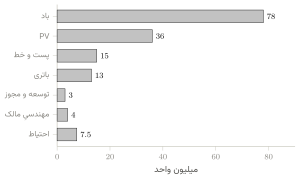
مثال 21.1 (سهمِ هر قلم و احتیاط) پرسش. هزینهٔ کلِ S1 و S0 چیست؟ سهمِ باد و PV چند درصد است؟ احتیاط برای چه چیزی است و برای چه چیزی نیست؟
پاسخ. S1: 156,450 هزار واحد (حدودِ 1,422 هزار واحد بر مگاوات)؛ S0: 142,800. باد و PV با هم 72.9 %. احتیاطِ 5 %: 7,450 هزار.
تفسیر. احتیاط بودجهای برای چیزهایی است که میدانیم رخ میدهند ولی اندازهشان را نمیدانیم (خاکِ بدتر در یک فونداسیون، مسیرِ کابلِ طولانیتر)؛ برای تغییرِ دامنه (افزودنِ باتریِ بزرگتر) نیست. سهمِ بزرگِ تجهیزاتِ اصلی یعنی قیمتِ آنها و نرخِ ارز (مثال 21.4) بیشترین اثر را بر بودجه دارند. وارسی: \((78{,}000 + 36{,}000)/156{,}450 = 0.729\).
21.2.2 هزینههای بهرهبرداری، جایگزینی و برچیدن
ایده. نیروگاه پس از ساخت هر سال هزینه دارد: بهرهبرداری و نگهداری (قراردادِ O&M)، اجارهٔ زمین، بیمه، آب و شستوشو، مدیریتِ دارایی و هزینههای شبکه. افزون بر آن، جایگزینیهای دورهای (افزایشِ ظرفیتِ باتری، نوسازیِ مبدلها، قطعاتِ اصلیِ توربین) و در پایان برچیدن منهای ارزشِ اسقاط. همه با تورم بالا میروند.
OPEX = { # k u a year, year-1 money (A-305)
"wind O&M (30 k u/MW)": 1_800.0,
"PV O&M (10 k u/MW)": 500.0,
"battery O&M": 160.0,
"substation and line": 250.0,
"land lease": 450.0,
"insurance": 520.0,
"water and cleaning": 140.0,
"asset management, admin": 450.0,
}
REPLACE = { # k u, year-1 money, by year (A-306)
8: ("battery augmentation 4 MWh", 600.0),
12: ("PV inverter refurbishment", 1_500.0),
13: ("battery augmentation 4 MWh", 600.0),
15: ("wind main components reserve", 1_800.0),
}
DECOM = {"cost": 4_000.0, "salvage": 1_500.0} # k u, year-1 money (A-306)operating cost of Plant P, year-1 money (A-305):
line k u a year u per MWh
wind O&M (30 k u/MW) 1,800 6.10
PV O&M (10 k u/MW) 500 1.69
battery O&M 160 0.54
substation and line 250 0.85
land lease 450 1.52
insurance 520 1.76
water and cleaning 140 0.47
asset management, admin 450 1.52
total 4,270 14.47
lifecycle costs (A-306), year-1 money:
year 8 battery augmentation 4 MWh 600
year 12 PV inverter refurbishment 1,500
year 13 battery augmentation 4 MWh 600
year 15 wind main components reserve 1,800
year 25 decommissioning less salvage 2,500
every line escalates with inflation (2.5 %) in the nominal
model; replacements are paid from cash flow, before debtمثال 21.2 (چهارده و نیم واحد بر مگاواتساعت) پرسش. هزینهٔ بهرهبرداریِ سالِ اول بر مگاواتساعت چیست؟ کدام قلم بزرگترین است؟ جایگزینیها کِی میآیند و چرا؟
پاسخ. 4,270 هزار واحد بر 295.14 GWh: 14.47 واحد بر مگاواتساعت. بزرگترین قلم نگهداریِ باد (1,800، 6.10 واحد بر مگاواتساعت). جایگزینیها: افزایشِ ظرفیتِ باتری در سالهای ۸ و ۱۳ (D-023)، نوسازیِ مبدلهای PV در سالِ ۱۲، قطعاتِ اصلیِ باد در سالِ ۱۵؛ برچیدن منهای اسقاط 2,500 در سالِ ۲۵.
تفسیر. جایگزینیها کمتکرار ولی بزرگاند و درست در سالهایی میآیند که بدهی هنوز باز است (سالهای ۸، ۱۲، ۱۳ و ۱۵ از ۱۵ سالِ وام)؛ وامدهندگان آنها را از جریانِ نقدِ همان سال کم میکنند (بخش 21.7) و گاه اندوختهٔ نگهداریِ جدا میخواهند. وارسی: \(4{,}270/295.14 = 14.47\).
- شش قلمِ هزینهٔ سرمایهای را نام ببرید.
- احتیاط با تغییرِ دامنه چه فرقی دارد؟
- هزینهٔ بهرهبرداریِ سالانه را بر مگاواتساعت حساب کنید.
- چرا جایگزینیها برای وامدهندگان مهماند؟
- برچیدن منهای اسقاط در کدام سال و چقدر است؟
21.2.3 ارزشِ زمانیِ پول: تنزیل، تورم و ارز
ایده. یک واحدِ امروز بیش از یک واحدِ سالِ آینده میارزد: میتوان آن را سرمایهگذاری کرد و ریسکِ نرسیدنش را ندارد. تنزیل جریانهای آینده را به امروز میآورد:
\[ \text{PV} = \sum_{t=1}^{n} \frac{C_t}{(1+r)^t} \tag{21.1}\]
اسمی و واقعی. جریانِ نقد را میتوان به پولِ هر سال (اسمی) یا به پولِ سالِ پایه (واقعی) نوشت. نرخِ تنزیل هم باید از همان جنس باشد. رابطهٔ فیشر:
\[ 1 + r = (1 + r_\text{real})(1 + i) \tag{21.2}\]
که \(i\) تورم است. قاعده ساده است: جریانِ واقعی با نرخِ واقعی، جریانِ اسمی با نرخِ اسمی. مدلِ این فصل اسمی است: هر قلمِ سالِ اول با تورمِ 2.5 % بالا میرود و تعرفه با شاخصِ قراردادیِ خودش (2 %).
the same 20 years of 10,000 k u (year-1 money), inflation 2.5 %:
real flows at the real rate 5 %: 124,622
nominal flows at the nominal rate 7.625 %: 121,583
WRONG real flows at the nominal rate: 100,983 (-19.0 %)
WRONG nominal flows at the real rate: 152,969 (+22.7 %)
real with real and nominal with nominal agree once both are in
the same money (124,622 / 1.025 = 121,583: the real value
is in year-1 money, the nominal one in today's money);
mixing them moves the value by about 20 %: every model states
its convention, its base year and its currencyمثال 21.3 (خطای بیستدرصدی) پرسش. بیست سال 10,000 هزار واحد به پولِ سالِ پایه، نرخِ واقعیِ 5 % و تورمِ 2.5 %: ارزشِ فعلی را به دو روشِ درست و دو روشِ نادرست حساب کنید.
پاسخ. واقعی با واقعی: 124,622؛ اسمی با اسمی (\(r = 7.625\,\%\)): 121,583. واقعی با اسمی: 100,983 (−19.0 %)؛ اسمی با واقعی: 152,969 (+22.7 %).
تفسیر. دو روشِ درست تقریباً یکیاند؛ اختلافِ کوچکشان (2.5 %، درست یک سال تورم) از سالِ پایهٔ پول است، نه از روش: جریانِ واقعی به پولِ سالِ ۱ است و ارزشِ فعلیاش هم به پولِ سالِ ۱ میماند، اما جریانِ اسمیِ سالِ ۱ هنوز تورمی نخورده و ارزشِ فعلیِ اسمی به پولِ امروز است؛ \(121{,}583 \times 1.025 = 124{,}622\). دو روشِ نادرست حدودِ بیست درصد خطا دارند: بیش از کلِ سودِ بسیاری از پروژهها. پس هر مدل باید در صفحهٔ اولش قراردادش را بنویسد: اسمی یا واقعی، سالِ پایه، ارز، تورم (جدول 21.3). وارسی: \(1.05 \times 1.025 = 1.07625\).
ارز. بخشِ بزرگی از هزینهٔ سرمایهای (تجهیزاتِ وارداتی) به ارزِ خارجی و درآمد به پولِ محلی است. اگر پولِ محلی پیش از قیمتگذاریِ نهایی ضعیف شود، هزینه بالا میرود ولی درآمد نه.
a 10 % fall of the local currency before financial close:
70 % of the capital cost is priced in a hard currency (A-310)
case capex k u debt k u equity k u equity IRR %
base 156,450 121,025 49,163 10.22
currency -10 % 168,618 121,025 61,331 8.51
the debt is sized on the cash flows, which did not change:
the whole increase lands on the equity; hedging the
currency until the price is fixed, or a tariff indexed to
the hard currency, moves this risk elsewhere (section E)مثال 21.4 (افتِ دهدرصدیِ پول) پرسش. اگر 70 % هزینهٔ سرمایهای به ارزِ سخت باشد و پولِ محلی پیش از بستنِ مالی 10 % ضعیف شود، هزینه، بدهی، سهام و بازدهِ سهام چه میشوند؟
پاسخ. هزینه از 156,450 به 168,618؛ بدهی ثابت (121,025)؛ سهام از 49,163 به 61,331؛ بازدهِ سهام از 10.22 به 8.51 %.
تفسیر. بدهی از روی جریانِ نقد اندازه میشود و جریانِ نقد تغییر نکرده است؛ پس همهٔ افزایش بر دوشِ سهامداران میافتد. پوششِ ارز تا قیمتگذاریِ نهایی، قیمتِ EPC به پولِ محلی، یا تعرفهٔ وابسته به ارزِ سخت این ریسک را جابهجا میکند، هر کدام با هزینهای (بخش 21.6). وارسی: \(0.7 \times 0.1/0.9 = 7.8\,\%\) افزایشِ هزینه.
- معادلهٔ 21.1 را برای 110 در یک سال با 10 % حساب کنید.
- نرخِ اسمی را برای نرخِ واقعیِ 4 % و تورمِ 2.5 % حساب کنید.
- چرا جریانِ واقعی نباید با نرخِ اسمی تنزیل شود؟
- چهار چیزی را که هر مدل باید در صفحهٔ اولش بنویسد نام ببرید.
- چرا افتِ ارز بدهی را تغییر نمیدهد؟
21.2.4 دورهٔ ساخت، بهرهٔ دورهٔ ساخت، و منابع و مصارف
ایده. پول در دو سالِ ساخت خرج میشود (40 و 60 %) ولی درآمد از بهرهبرداریِ تجاری (COD) آغاز میشود (شکل 21.2). وامی که در ساخت برداشت میشود بهره دارد و این بهرهٔ دورهٔ ساخت (به انگلیسی interest during construction, IDC) هنوز درآمدی ندارد که از آن پرداخت شود؛ پس سرمایهای میشود: خودش یکی از مصارف است و با همان پولِ نیروگاه تأمین میشود. اگر خرجِ هر سال در میانهٔ سال باشد، ماندهٔ میانگینِ وام در آن سال جمعِ خرجِ پیشین بهاضافهٔ نیمِ خرجِ همان سال است:
\[ \text{IDC}_k = r_\text{d}\, g \left(\sum_{j<k} S_j + \tfrac{1}{2} S_k\right) \tag{21.3}\]
def construction(capex: float, phasing, rate: float, fee: float = 0.0):
"""Capital spent over construction years with the share 'phasing'
each year, paid mid-year; interest during construction (IDC) on the
debt-funded part at 'rate', capitalised. Returns (spend by year,
IDC by year)."""
ph = np.asarray(phasing, float)
spend = capex * ph / ph.sum()
drawn = np.cumsum(spend) - spend / 2 # average balance
idc = drawn * rate
return spend, idc + fee * spend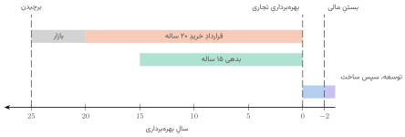
منابع و مصارف. جدولِ مصارف (به انگلیسی uses) همهٔ پولی است که پیش از درآمد لازم است: هزینهٔ سرمایهای، بهرهٔ دورهٔ ساخت، کارمزدهای وام و پر کردنِ اندوختهٔ خدمتِ بدهی (DSRA). جدولِ منابع (sources) همان را با بدهی و سهام میپوشاند و دو جدول همیشه برابرند.
construction and sources and uses (base case, A-307..A-309):
capital cost 156,450 k u
interest during construction 6,165
upfront fee 1.5 % of debt 1,815
DSRA (6 months of service) 5,757
uses 170,188
senior debt 121,025 (71.1 %)
equity 49,163 (28.9 %)
debt sized by: DSCR 1.20 on P90 1-yr
IDC and fees are paid with the same money as the plant: they
are uses, they are financed, and the lenders size the debt on
cash flows, not on the cost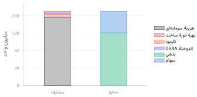
مثال 21.5 (مصارفِ بیش از هزینه) پرسش. مصارفِ کل چقدر از هزینهٔ سرمایهای بیشتر است و چرا؟ بدهی با کدام قید اندازه شد؟
پاسخ. مصارف 170,188 در برابرِ 156,450: 13,738 بیشتر (IDC 6,165، کارمزد 1,815، DSRA 5,757). بدهی 121,025 (71.1 %) با قیدِ DSCR برابرِ 1.20 روی حالتِ P90 یکساله.
تفسیر. بودجهٔ مالی همیشه بیش از قیمتِ قراردادهاست: تأخیر در ساخت، IDC را بزرگتر میکند و اندوختهها پولیاند که نیروگاه نمیتواند خرج کند. نکتهٔ کلیدی: بدهی از روی هزینه اندازه نمیشود، از روی جریانِ نقدی که میتواند بازپرداخت کند (بخش 21.7.4). وارسی: \(121{,}025 + 49{,}163 = 170{,}188\).
- چرا بهرهٔ دورهٔ ساخت سرمایهای میشود؟
- معادلهٔ 21.3 را برای 100 واحد خرجِ برابر در دو سال با نرخِ 10 % و بدهیِ صددرصدی حساب کنید.
- چهار قلمِ مصارف را بنویسید.
- چرا تأخیر در ساخت مصارف را بزرگتر میکند؟
21.2.5 آب و شستوشو: داوری بر پایهٔ هزینهٔ چرخهٔ عمر
ایده. فصلهای ۱۰ و ۱۵ راهبردهای شستوشوی PV را با انرژیِ بازگرفته مقایسه کردند. اقتصاد پرسشِ کاملتری دارد: هزینهٔ چرخهٔ عمر (به انگلیسی life-cycle cost): سرمایهٔ تجهیزات (ربات)، هزینهٔ هر شستوشو (کارگر، کامیون)، آب (تأمین، برداشت، تصفیه، ذخیره، توزیع و پساب) و ریسکِ کمآبی، در برابرِ ارزشِ انرژیِ بازگرفته در طولِ عمر. ارزیابی با ارزشِ فعلیِ خالص در نرخِ WACC و تعرفهٔ قراردادی انجام میشود.
cleaning strategies on 25-year lifecycle cost (NPV at 7.5 %):
policy capital energy value running+water NPV k u
(water 3 u/m3; robot capital 2,600 k u and 4 % upkeep; A-305)
truck every 30 d 0 6,991 2,797 4,194
truck at 4 % loss 0 8,366 3,251 5,114
robot every 12 d 2,600 8,610 2,812 3,198
truck at 4 % with a 60-day water shortage each year: NPV 3,739
the robot recovers the most energy and is immune to water
shortage, but its capital must be paid back: on lifecycle
cost the trigger truck wins here, even with a yearly water
shortage; judged on energy alone the robot would win; a
lower robot price, a higher tariff or a longer shortage turns
the answer (D-014 revisited)مثال 21.6 (برندهٔ انرژی، بازندهٔ هزینه) پرسش. سه راهبرد را با ارزشِ فعلیِ خالصِ ۲۵ ساله مقایسه کنید. اگر هر سال ۶۰ روز آب نباشد، راهبردِ کامیونِ آستانهای چه میشود؟
پاسخ. کامیونِ ۳۰ روزه 4,194، کامیونِ آستانهای 5,114، ربات 3,198 هزار واحد. با کمآبیِ ۶۰ روزه کامیونِ آستانهای 3,739 و هنوز بهتر از ربات.
تفسیر. ربات بیشترین انرژی را بازمیگیرد و از کمآبی ایمن است، اما سرمایهٔ 2,600 و نگهداریِ سالانهاش باید بازپرداخت شود؛ با این تعرفه و این قیمتها برنده نیست. با قیمتِ کمتر برای ربات، تعرفهٔ بالاتر یا کمآبیِ طولانیتر پاسخ عوض میشود. این همان درسِ D-014 است، این بار با پول: انرژیِ بیشتر لزوماً ارزشِ بیشتر نیست. هزینهٔ آب در مدلِ اصلی در قلمِ «آب و شستوشو» (140 هزار در سال) آمده و کمآبی در بخش 21.8 بررسی میشود. وارسی: ارزشِ انرژیِ ربات (8,610) بیش از کامیونهاست ولی هزینهٔ سرمایهاش آن را جبران نمیکند.
- پنج جزءِ هزینهٔ آب را نام ببرید.
- چرا راهبردِ شستوشو با انرژیِ بازگرفته بهتنهایی سنجیده نمیشود؟
- کمآبی چگونه ارزشِ کامیونِ آستانهای را کم میکند؟
- سه تغییری که ربات را برنده میکند بنویسید.
21.2.6 شاخصبندیِ تعرفه، نرخِ تنزیل و صندوقِ برچیدن
ایده. هزینهها با تورم بالا میروند و تعرفه با شاخصِ قراردادیاش. اگر شاخص از تورم کمتر باشد، تعرفهٔ واقعی هر سال کمی کوچکتر میشود و حاشیهٔ نیروگاه آرامآرام میفرساید:
\[ \text{tariff}_\text{real}(t) = \text{tariff}_1 \left(\frac{1 + i_\text{index}}{1 + i}\right)^{t-1} \tag{21.4}\]
real value of the tariff when it is indexed below inflation:
inflation % tariff index % real tariff year 10 year 20
2.5 2.0 67.0 63.8
4.0 2.0 58.8 48.4
6.0 2.0 49.5 33.7
model with 6 % inflation (debt fixed): min DSCR 1.10, equity IRR 9.2 %
costs rise with inflation, the tariff with its index: when
inflation runs ahead of the index the margin shrinks year
by year - indexation is a price term worth negotiating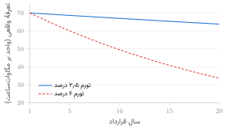
مثال 21.7 (تورمی که از شاخص جلو میزند) پرسش. با شاخصِ 2 % و تورمِ 2.5، 4 و 6 %، تعرفهٔ واقعیِ سالهای ۱۰ و ۲۰ چیست؟ مدل با تورمِ 6 % و بدهیِ ثابت چه پوشش و بازدهی دارد؟
پاسخ. سالِ ۱۰: 67.0، 58.8، 49.5؛ سالِ ۲۰: 63.8، 48.4، 33.7 واحد. با تورمِ 6 %: کمینهٔ DSCR 1.10 (سطحِ قفل) و بازدهِ سهام 9.2 %.
تفسیر. شاخصِ کمتر از تورم ریسکِ تورم را نزدِ مالک میگذارد؛ در کشوری با تورمِ بالا این ریسک بزرگ است و شاخصبندی (کامل، جزئی، با سقف یا کف) یکی از مهمترین بندهای قیمت است. وارسی: \(70 \times (1.02/1.06)^{19} = 33.7\).
نرخِ تنزیل از اجزایش. هزینهٔ میانگینِ موزونِ سرمایه (WACC) از هزینهٔ سهام، هزینهٔ بدهی پس از مالیات و سهمِ هر کدام ساخته میشود:
\[ \text{WACC} = \frac{E}{V}\,r_\text{e} + \frac{D}{V}\,r_\text{d}\,(1 - \tau_\text{tax}) \tag{21.5}\]
the weighted average cost of capital from its parts:
equity 0.29 x 10.0 % + debt 0.71 x 6.0 % x (1 - 0.25)
= 6.09 %; the model's 7.5 % adds a margin for project
risk above this textbook figure (A-310)
NPV of the project at several rates (k u):
6.00 % 63,758
6.09 % 61,786
7.50 % 33,523
9.00 % 8,826
(pre-tax project cash flow; the post-tax NPV of section B is
lower) - a point of discount rate moves the NPV by tens of
millions: the rate is an assumption to state and defendمثال 21.8 (یک درصد، دهها میلیون) پرسش. WACC را از اجزای حالتِ پایه حساب کنید. ارزشِ فعلیِ خالصِ پیش از مالیات با 6، 7.5 و 9 % چیست؟
پاسخ. \(0.29 \times 10\,\% + 0.71 \times 6\,\% \times 0.75 = 6.09\,\%\). ارزشِ فعلی: 63,758، 33,523 و 8,826 هزار واحد.
تفسیر. هر واحدِ درصد در نرخِ تنزیل ارزشِ فعلی را حدودِ 20 میلیون جابهجا میکند؛ پس نرخ یک فرضِ مهم است که باید اعلام و دفاع شود. نرخِ 7.5 % مدل حاشیهای برای ریسکِ پروژه بالای عددِ کتابی دارد (A-310). وارسی: با اهرمِ بالا، WACC به هزینهٔ بدهی پس از مالیات نزدیک میشود.
sinking fund for decommissioning (paid in years 21-25, earns 3 %):
net cost in year 25 money: 4,522 k u
5 yearly deposits of 852 k u
10 yearly deposits of 394 k u
authorities or landowners may require the fund or a bond
from the start; a fund that starts late costs more each
year but less in present value - and is at risk if the
plant stops earlyمثال 21.9 (صندوقِ پنجساله یا دهساله) پرسش. برای هزینهٔ خالصِ برچیدن به پولِ سالِ ۲۵، با سودِ 3 %، پرداختِ سالانهٔ صندوقِ ۵ و ۱۰ ساله چیست؟
پاسخ. هزینه 4,522 هزار؛ ۵ پرداختِ 852 یا ۱۰ پرداختِ 394.
تفسیر. صندوقی که دیر آغاز شود، هر سال گرانتر است ولی ارزشِ فعلیاش کمتر؛ اما اگر نیروگاه زودتر از موعد بایستد، صندوقِ ناکامل برچیدن را نمیپوشاند. مقامِ مسئول یا مالکِ زمین ممکن است صندوق یا ضمانتنامهای از آغاز بخواهد (فصلِ ۵۳). وارسی: \(4{,}522 \times 0.03/(1.03^5 - 1) = 852\).
- معادلهٔ 21.4 را برای سالِ ۱۰، شاخصِ 3 % و تورمِ 5 % حساب کنید.
- سه شکلِ شاخصبندیِ تعرفه را نام ببرید.
- معادلهٔ 21.5 را برای اهرمِ 50 % با همان هزینهها حساب کنید.
- چرا صندوقِ برچیدنِ دیرآغاز ریسک دارد؟
21.3 ب. سنجههای اقتصادی و عدمِ قطعیت
21.3.1 ارزشِ فعلیِ خالص و نرخِ بازدهِ داخلی
ایده. دو پرسشِ جدا داریم و نباید آنها را با هم اشتباه کرد. اقتصادِ پروژه میپرسد آیا نیروگاه ارزش میسازد: جریانِ نقدِ پروژه (پیش از هر بدهی) را با هزینهٔ سرمایهٔ ترکیبی (WACC) تنزیل میکنیم:
\[ \text{NPV} = \sum_{t} \frac{C_t}{(1+r)^t}, \qquad \text{NPV}(\text{IRR}) = 0 \tag{21.6}\]
تأمینِ مالیِ پروژه میپرسد چگونه پول تأمین و بازپرداخت میشود و سهمداران پس از بدهی چه بازدهی دارند. بازدهِ داخلیِ پروژه و بازدهِ داخلیِ سهام دو عددِ متفاوتاند: اگر پروژه بیش از هزینهٔ بدهی بازده داشته باشد، اهرم بازدهِ سهام را بالا میبرد و ریسکش را هم.
economic and financial measures of the base case (nominal):
project IRR after tax, unlevered 7.84 %
NPV at the 7.5 % WACC 5,159 k u
equity IRR 10.22 % (cost of equity 10 %)
debt 121,025 k u at 6.0 %, gearing 71 %
the project earns more than the debt costs, so leverage
lifts the equity return above the project return; the NPV
asks whether value is created, the equity IRR whether the
owners are paid for their risk - two questions
a cash flow with two sign changes (-100, +230, -132):
IRR 10.0 % and IRR 20.0 % both make NPV zero:
a decommissioning cost or a late replacement can do this;
report NPV at a stated rate, not only IRR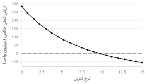
مثال 21.10 (دو پرسش، دو عدد) پرسش. بازدهِ داخلیِ پروژه پس از مالیات، ارزشِ فعلیِ خالص با WACC برابرِ 7.5 % و بازدهِ سهام را از خروجی بخوانید و تفسیر کنید. چرا بازدهِ سهام بالاتر است؟
پاسخ. پروژه 7.84 %؛ ارزشِ فعلیِ خالص +5,159 هزار واحد؛ سهام 10.22 % در برابرِ هزینهٔ سهامِ آموزشیِ 10 %.
تفسیر. پروژه کمی بیش از هزینهٔ سرمایهاش بازده دارد (ارزش میسازد، اما با حاشیهٔ کم). وام با 6 % از بازدهِ پروژه ارزانتر است، پس اهرمِ 71 % بازدهِ سهام را تا حدودِ هزینهٔ سهام بالا میبرد. همین اهرم هر کاهشِ درآمد را هم بزرگنمایی میکند (بخش 21.8). وارسی: در شکل 21.5 منحنی نزدیکِ 9.7 % از صفر میگذرد: بازدهِ پیش از مالیات بیشتر از 7.84 % پس از مالیات است.
دامهای نرخِ بازدهِ داخلی. (۱) اگر جریانِ نقد بیش از یک بار تغییرِ علامت دهد (مثلاً هزینهٔ برچیدن یا جایگزینیِ بزرگ در پایان)، ممکن است چند نرخِ بازده داشته باشد؛ خروجیِ بالا نمونهٔ −100، +230، −132 را با دو نرخِ 10 و 20 % نشان میدهد. (۲) نرخِ بازده اندازه را نمیبیند: پروژهٔ کوچکِ پربازده ممکن است ارزشِ کمتری از پروژهٔ بزرگِ کمبازده بسازد. (۳) نرخِ بازده فرض میکند پولِ برگشتی با همان نرخ دوباره سرمایهگذاری میشود. پس همیشه ارزشِ فعلیِ خالص را با نرخِ اعلامشده کنارِ نرخِ بازده گزارش کنید.
- اقتصادِ پروژه و تأمینِ مالیِ پروژه را با یک جمله از هم جدا کنید.
- نرخِ بازدهِ داخلیِ −100، +60، +60 چیست؟
- چرا اهرم بازدهِ سهام را بالا میبرد و چه وقت پایین میآورد؟
- سه دامِ نرخِ بازدهِ داخلی را نام ببرید.
- چرا بازدهِ پیش از مالیات از پس از مالیات بیشتر است؟
21.3.2 هزینهٔ ترازشدهٔ انرژی و آنچه پنهان میکند
ایده. هزینهٔ ترازشدهٔ انرژی (به انگلیسی levelised cost of energy, LCOE) قیمتِ ثابتی است که اگر هر مگاواتساعت به آن فروخته شود، ارزشِ فعلیِ درآمد درست برابرِ ارزشِ فعلیِ همهٔ هزینهها شود:
\[ \text{LCOE} = \frac{\text{CAPEX} + \sum_t \dfrac{\text{OPEX}_t + \text{REPL}_t}{(1+r)^t}}{\sum_t \dfrac{E_t}{(1+r)^t}} \tag{21.7}\]
برای برآوردِ سریع، با ضریبِ بازیابیِ سرمایه \(\text{CRF} = r/(1-(1+r)^{-n})\) و انرژیِ میانگین: \(\text{LCOE} \approx (\text{CAPEX}\cdot\text{CRF} + \text{OPEX})/\bar{E}\).
levelised cost of energy, real, at a 5 % real rate:
case LCOE u/MWh
S0 (no battery) 50.2
S1 (battery) 54.3
the battery raises the cost of each MWh and adds no MWh;
LCOE cannot see that it moves energy to dearer hours, holds
reserve or recaptures curtailment; LCOE also hides when
the energy comes, curtailment of delivered energy, and the
financing: use it to compare like with like, never to judge
a battery or a service (section E)مثال 21.11 (باتریای که هزینه را بالا میبرد) پرسش. هزینهٔ ترازشدهٔ S0 و S1 را با نرخِ واقعیِ 5 % مقایسه کنید. آیا این نشان میدهد باتری بد است؟
پاسخ. S0: 50.2؛ S1: 54.3 واحد بر مگاواتساعت (واقعی). باتری 4.1 واحد افزوده است.
تفسیر. نه. باتری هیچ مگاواتساعتی نمیسازد (کمی هم تلف دارد)، پس هزینهٔ هر مگاواتساعت را بالا میبرد. ارزشِ آن در جای دیگری است: جابهجاییِ انرژی به ساعتهای گرانتر، بازگیریِ کاهشِ تولید، خدمتِ ذخیره، آمادگیِ جزیره (فصلهای ۱۹ و ۲۰). هزینهٔ ترازشده ارزش را نمیبیند، زمانِ تولید را نمیبیند، کاهشِ تولیدِ انرژیِ تحویلی را پنهان میکند و تأمینِ مالی را (نرخ، اهرم، مالیات) کنار میگذارد. پس فقط برای مقایسهٔ همسان (دو مزرعهٔ بادیِ مشابه) مناسب است؛ هرگز برای داوریِ باتری یا خدمت. وارسی: برآوردِ سریع در مثال 21.77: 53.2 بی جایگزینی و برچیدن.
- معادلهٔ 21.7 را برای سرمایهٔ 100، بی هزینه، 10 MWh در سال به مدتِ دو سال با نرخِ صفر حساب کنید.
- ضریبِ بازیابیِ سرمایه را برای 5 % و ۲۵ سال حساب کنید.
- چهار چیزی را که هزینهٔ ترازشده نمیبیند بنویسید.
- چرا باتری هزینهٔ ترازشده را بالا میبرد ولی ممکن است ارزش بیفزاید؟
21.3.3 تعرفهها و قراردادهای خرید، کاهشِ تولید و ضمانتِ دسترسپذیری
ایده. قراردادِ خریدِ برق (به انگلیسی power purchase agreement, PPA) تعیین میکند چه کسی چه ریسکی را بر دوش میکشد. چند شکلِ رایج (مفهومی، نه توصیهٔ قراردادی):
| شکل | چه چیزی پرداخت میشود | ریسکِ منبع | ریسکِ قیمت |
|---|---|---|---|
| پرداخت به ازای تولید (pay-as-produced) | هر مگاواتساعتِ تحویلی با تعرفهٔ ثابت یا شاخصدار | مالک | خریدار |
| حجمِ ثابت (baseload / fixed volume) | حجمِ معین؛ کمبود خریداری و مازاد فروخته میشود | مالک (با تراز) | تقسیمشده |
| زمانِ روز (time-of-day) | قیمت بسته به ساعت | مالک | تقسیمشده |
| بازار (merchant) | قیمتِ بازارِ همان ساعت | مالک | مالک |
| خرید یا پرداخت (take-or-pay) | انرژیِ در دسترس، حتی اگر نخرد | مالک | خریدار |
revenue of a year under three structures (k u, 2,000 draws):
structure mean P10 spread %
pay-as-produced 70 u 20,619 19,287 5.1
fixed volume 280 GWh at 66 u 19,062 18,301 3.2
merchant (price falls when windy) 14,721 10,947 20.7
(fixed volume: shortfall bought and surplus sold at 40 u)
pay-as-produced leaves the resource risk with the owner;
a fixed volume moves it to the owner's balancing, and a
merchant revenue adds price risk; lenders size debt on the
P90 of the revenue the structure leaves (section F)مثال 21.12 (پراکندگیِ درآمد) پرسش. با پراکندگیِ یکسالهٔ انرژیِ 5.1 % (فصلِ ۱۶)، درآمدِ سالانه زیرِ سه ساختار چه میانگین، صدکِ دهم و پراکندگیای دارد؟
پاسخ. پرداخت به ازای تولید: میانگین 20,619، صدکِ دهم 19,287، پراکندگیِ 5.1 %. حجمِ ثابت: 19,062، 18,301، 3.2 %. بازار: 14,721، 10,947، 20.7 %.
تفسیر. پرداخت به ازای تولید ریسکِ منبع را کامل نزدِ مالک میگذارد؛ حجمِ ثابت آن را به ریسکِ تراز (خرید و فروشِ کمبود و مازاد) تبدیل میکند؛ بازار ریسکِ قیمت را هم میافزاید و چون قیمت در ساعتهای پرباد پایین میآید، این دو ریسک همجهتاند. وامدهندگان بدهی را روی صدکِ پایینِ درآمدی اندازه میکنند که ساختار باقی میگذارد (بخش 21.6.1). وارسی: پراکندگیِ پرداخت به ازای تولید همان پراکندگیِ انرژی است.
کاهشِ تولید. اگر شبکه تولید را کاهش دهد و قرارداد آن را انرژیِ فرضی (به انگلیسی deemed energy) حساب نکند، درآمد از دست میرود.
uncompensated curtailment beyond the 1 % of the base case:
extra % min DSCR equity IRR %
0 1.20 10.22
2 1.18 9.68
4 1.15 9.14
6 1.12 8.60
each 2 % of unpaid curtailment costs about half a point of
equity return and 0.03 of cover; whether curtailment is paid
(deemed energy) or not is a contract term that lenders read
first (section E)ضمانتِ دسترسپذیری. پیمانکارِ بهرهبرداری معمولاً دسترسپذیری را ضمانت میکند و کمبود را با خسارتِ مقطوع (به انگلیسی liquidated damages, LD) تا سقفی جبران میکند.
availability guarantee of the O&M contract (97 %, LD at tariff,
cap 20 % of the O&M fee; teaching, A-308):
availability % lost GWh lost k u LD paid k u owner keeps loss k u
97 0.0 0 0 0
96 3.0 213 213 0
95 6.1 426 426 0
93 12.2 852 460 392
the cap limits what the contractor pays: below about 94.8 %
the owner carries the rest; a guarantee is worth what the
cap and the contractor's balance sheet make itمثال 21.13 (ضمانتی که سقف دارد) پرسش. با ضمانتِ 97 %، جبران به تعرفه و سقفِ 20 % کارمزدِ بهرهبرداری، در دسترسپذیریِ 93 % چه کسی چه میپردازد؟ از کجا به بعد مالک زیان میبیند؟
پاسخ. انرژیِ ازدسترفته 12.2 GWh به ارزشِ 852 هزار؛ پیمانکار 460 (سقف) و مالک 392. زیرِ حدودِ 94.8 % سقف فعال میشود.
تفسیر. ضمانت فقط تا سقفش و تا جایی که پیمانکار توانِ پرداخت دارد ارزش دارد. هر درصدِ کاهشِ نامحدود در قرارداد باید با سقف، تعریفِ دسترسپذیری (زمانی یا انرژیمحور، فصلِ ۱۵) و استثناها (خرابیِ شبکه، نیروی قاهره) خوانده شود. وارسی: \(460/70 = 6.57\,\text{GWh}\) و \(0.97 - 6.57/295.14 \times 0.97 = 0.948\).
- پنج شکلِ قراردادِ خرید را با تقسیمِ ریسکِ هر کدام نام ببرید.
- چرا ریسکِ منبع و ریسکِ قیمت در بازار همجهتاند؟
- «انرژیِ فرضی» چیست و چرا وامدهندگان به آن حساساند؟
- هر دو درصد کاهشِ تولیدِ بیجبران چقدر از بازدهِ سهام میکاهد؟
- سقفِ خسارتِ دسترسپذیری از کجا به بعد بر مالک فشار میآورد؟
21.3.4 حساسیت و سناریو: کدام فرض تصمیم را میراند
ایده. مدلی با صدها ورودی، فقط به چند ورودی واقعاً حساس است. نمودارِ گردبادی (به انگلیسی tornado) هر ورودی را جدا به مقدارِ «بد» و «خوب» میبرد و تغییرِ خروجی را نشان میدهد. نکتهٔ مهم: در این تحلیل بدهی ثابت میماند (همان که در بستنِ مالی امضا شده)، چون پس از امضا بدهی با بدترشدنِ شرایط کم نمیشود.
what moves the equity IRR and the minimum DSCR (debt fixed):
base: equity IRR 10.22 %, min DSCR 1.20
input (bad / good) equity IRR % min DSCR
energy 7.48 / 12.85 1.06 / 1.31
tariff 7.48 / 12.85 1.06 / 1.31
capex 8.10 / 13.61 1.22 / 1.19
opex 9.61 / 10.82 1.18 / 1.23
debt rate 9.14 / 11.41 1.10 / 1.24
replacements 10.05 / 10.38 1.19 / 1.21
(+-10 % on energy, tariff, capex and opex; +-1 point on the
rate; +-50 % on replacements)
energy and tariff dominate both measures; capex moves the
equity return but hardly the cover once the debt is fixed
(it even rises a little through depreciation and tax); the
debt rate moves the cover through the debt service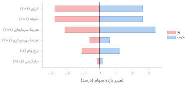
مثال 21.14 (انرژی و تعرفه، پیش از همه) پرسش. کدام ورودیها بازدهِ سهام و کمینهٔ پوشش را بیشتر جابهجا میکنند؟ چرا هزینهٔ سرمایهای پوشش را تقریباً تغییر نمیدهد؟
پاسخ. انرژی و تعرفه (هر کدام ±10 %): بازدهِ سهام 7.48 تا 12.85 % و کمینهٔ پوشش 1.06 تا 1.31. هزینهٔ سرمایهای: 8.10 تا 13.61 % ولی پوشش فقط 1.19 تا 1.22. نرخِ وام (±1 واحدِ درصد): 9.14 تا 11.41 % و پوشش 1.10 تا 1.24.
تفسیر. انرژی و تعرفه درآمد را میسازند و درآمد هم بدهی را میپردازد هم سهام را؛ این دو بیش از همه بازرسی میشوند (فصلهای ۱۲ تا ۱۶ برای انرژی، بخش 21.6 برای تعرفه). هزینهٔ سرمایهای پس از ثابتشدنِ بدهی بر دوشِ سهام است و پوشش را فقط از راهِ استهلاک و مالیات کمی تغییر میدهد. نرخِ وام از راهِ خدمتِ بدهی پوشش را جابهجا میکند: دلیلِ پوششِ نرخ پیش از بستنِ مالی. وارسی: انرژی و تعرفه دقیقاً یک اثر دارند، چون در مدل فقط حاصلضربشان درآمد را میسازد.
سناریو در برابرِ حساسیت. حساسیت یک ورودی را جابهجا میکند؛ سناریو چند ورودی را با هم و بهشکلی سازگار (مثلاً سالِ کمباد که قیمتِ بازار هم پایین است، یا تورمِ بالا که هم هزینه و هم تعرفهٔ شاخصدار را بالا میبرد). وامدهندگان هر دو را میخواهند: حساسیت برای یافتنِ ورودیهای مهم، سناریو برای سنجشِ ترکیبهای واقعبینانه (مثال 21.70).
- چرا در تحلیلِ حساسیت بدهی ثابت نگه داشته میشود؟
- دو ورودیِ اصلی را از شکل 21.6 نام ببرید.
- چرا نرخِ وام پوشش را جابهجا میکند ولی هزینهٔ سرمایهای نه؟
- حساسیت و سناریو را از هم جدا کنید.
21.3.5 توزیعِ پوشش و بازده: مونتکارلو
ایده. حالتِ پایه، حالتِ P90 و تنشها چند نقطهاند. اما انرژی هر سال تصادفی است (فصلِ ۱۶): بخشی از عدمِ قطعیت مشترک است (اگر منبعِ بلندمدت کمتر از برآورد باشد، همهٔ سالها کمترند) و بخشی سالانه (سالِ کمباد و سالِ پرباد). با قرعهکشی از هر دو، توزیعِ کمینهٔ پوشش و بازدهِ سهام را میسازیم. سهمِ مشترکِ 3.6 % و سالانهٔ \(\sqrt{5.1^2 - 3.6^2} = 3.6\,\%\) بهگونهای انتخاب شده که پراکندگیِ یکسالهٔ 5.1 % فصلِ ۱۶ حفظ شود.
def monte_carlo(n: int = 400, seed: int = 2121):
"""Equity IRR and minimum DSCR with energy drawn each year (one-year
spread 5.1 %, of which 3.6 % shared over the life and the rest
yearly; ch 16) and the debt fixed at the base case."""
rng = np.random.default_rng(seed)
base = model.run()
u_shared, u_year = 0.036, np.sqrt(0.051 ** 2 - 0.036 ** 2)
irr, mind, lock = [], [], []
for _ in range(n):
f = 1 + u_shared * rng.standard_normal()
scale = f * (1 + u_year * rng.standard_normal(T["years"]))
r = model.run(debt=base["debt"], energy_scale=1.0,
extra_revenue=0.0, energy_path=scale)
irr.append(r["equity_irr"])
mind.append(r["min_dscr"])
lock.append(int((r["dscr"] < T["lockup"]).sum()))
return np.array(irr), np.array(mind), np.array(lock)Monte Carlo of the base case, 400 draws, debt fixed:
quantity P10 P50 P90
equity IRR % 9.10 10.35 11.56
min DSCR 1.14 1.20 1.26
draws with at least one lock-up year: 2 %
draws with a DSCR below 1.00: 0.0 %
one bad year alone rarely locks up; a low long-term resource
(the shared part) plus a bad year does: lenders size on P90,
owners should read the whole distribution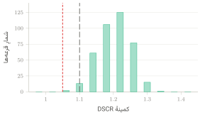
مثال 21.15 (یک توزیع، نه یک عدد) پرسش. صدکهای ۱۰، ۵۰ و ۹۰ بازدهِ سهام و کمینهٔ پوشش چیست؟ احتمالِ دستکم یک سالِ قفل و پوششِ زیرِ 1.00 چقدر است؟
پاسخ. بازدهِ سهام 9.10، 10.35، 11.56 %؛ کمینهٔ پوشش 1.14، 1.20، 1.26. دستکم یک سالِ قفل در 2 % قرعهها؛ زیرِ 1.00 در هیچکدام.
تفسیر. با بدهیِ اندازهگرفته بر P90، عدمِ قطعیتِ منبع بهتنهایی کمتر سهامداران را قفل میکند؛ ولی بازدهِ سهام در یکدهمِ حالتها زیرِ 9.1 % است. وامدهنده دُمِ پایینِ پوشش را میبیند و سهامدار کلِ توزیعِ بازده را. توزیعِ تنشهای دیگر (قیمت، نرخ، تأخیر) را هم میتوان افزود؛ اما فقط اگر وابستگیها درست مدل شوند (مثلاً سالِ کمباد و قیمتِ پایینِ بازار با هم). وارسی: \(\sqrt{0.036^2 + 0.036^2} = 0.051\).
- عدمِ قطعیتِ مشترک و سالانه را از هم جدا کنید.
- چرا سهمِ سالانه از رابطهٔ جذری حساب شد؟
- صدکِ دهمِ بازدهِ سهام را از خروجی بخوانید و تفسیر کنید.
- چه وابستگیای را باید پیش از افزودنِ قیمتِ بازار مدل کرد؟
21.3.6 باتری اکنون یا اختیارِ افزودنِ آن بعدها
ایده. گاهی بهترین تصمیم «هنوز نه» است، بهشرطِ اینکه اختیار باز بماند: جا، بی، کابل و رابطها آماده باشند تا اگر شرایط (تعرفهٔ زمانِ روز، بازارِ خدمت، الزامِ شبکه) پیش آمد، باتری افزوده شود. ارزشِ این اختیار با ارزشِ فعلیِ انتظاری حساب میشود: احتمالِ وقوعِ شرط × (ارزشِ جابهجایی پس از افزودن − هزینهٔ افزودن)، اگر مثبت باشد.
the battery now or as an option in year 5 (NPV at 7.5 %, k u):
build now under a time-of-day PPA: equity IRR 11.35 % (S0 12.76 %)
adding it in year 5 costs 12,763 k u then, PV 8,890
PV of its shifting value from year 6: 4,808
chance of a time-of-day tariff value of waiting k u
25 % 0
50 % 0
75 % 0
100 % 0
at these teaching prices the late battery costs more than
its shifting value, so the option is worth nothing - and
building now lowers the equity return even with a time-of-day
tariff: the battery pays only with a wider price spread, a
service contract, or a requirement (island, grid operator);
keeping space and a bay ready (chapter 18) keeps the optionمثال 21.16 (اختیاری که امروز ارزشی ندارد) پرسش. اگر باتری در سالِ ۵ با 15 % قیمتِ کمتر ولی 10 % هزینهٔ اضافه برای ساخت در نیروگاهِ در حالِ کار افزوده شود، ارزشِ اختیار با احتمالهای 25 تا 100 % چیست؟ نتیجه برای تصمیمِ امروز چیست؟
پاسخ. هزینهٔ افزودن 12,763 (ارزشِ فعلی 8,890)؛ ارزشِ فعلیِ جابهجایی از سالِ ۶ 4,808. ارزشِ اختیار در همهٔ احتمالها صفر.
تفسیر. با قیمتهای آموزشی، جابهجایی بهتنهایی باتری را توجیه نمیکند: ساختنِ اکنون بازدهِ سهام را حتی با تعرفهٔ زمانِ روز کم میکند (11.35 در برابرِ 12.76 %) و افزودنِ بعدی هم نمیارزد. باتری فقط با دامنهٔ قیمتِ گستردهتر، قراردادِ خدمت یا الزام (جزیرهٔ بارهای حیاتی، خواستِ بهرهبردارِ شبکه) توجیه میشود. این یافته در مبنای مالی (D-025) ثبت میشود و D-023 را به این شرطها گره میزند. نگهداشتنِ جا و بی (فصلِ ۱۸) هزینهٔ کمی دارد و اختیار را برای روزی که شرایط عوض شود زنده نگه میدارد. وارسی: \(4{,}808 < 8{,}890\).
- ارزشِ اختیار را با یک فرمولِ کلامی بنویسید.
- سه شرطی که باتریِ نیروگاهِ P را توجیه میکند نام ببرید.
- چرا هزینهٔ افزودن در نیروگاهِ در حالِ کار بیشتر است؟
- چه چیزی اختیارِ افزودنِ باتری را زنده نگه میدارد؟
21.3.7 بازگشتِ سرمایه و فرسایشِ کندتر یا تندتر
بازگشتِ سرمایه. دورهٔ بازگشت (به انگلیسی payback period) سالی است که جمعِ جریانِ نقد مثبت میشود؛ بازگشتِ تنزیلشده همان با جریانِ تنزیلشده.
payback of the project cash flow (after the tax paid):
simple payback: operating year 10
discounted at 7.5 %: operating year 19
payback says when the money is back, not how much value is
made after; it is a liquidity measure, never a substitute
for NPVمثال 21.17 (ده سال یا نوزده سال) پرسش. بازگشتِ ساده و تنزیلشدهٔ پروژه چیست؟ چرا این دو اینقدر فرق دارند؟
پاسخ. ساده: سالِ بهرهبرداریِ ۱۰؛ تنزیلشده با 7.5 %: سالِ ۱۹.
تفسیر. تنزیل جریانهای دور را کوچک میکند و بازگشت را عقب میبرد. بازگشت نشان میدهد پول کِی برمیگردد (نقدینگی و ریسکِ تأخیرِ زیاد)، نه اینکه پس از آن چقدر ارزش ساخته میشود؛ پروژهای با بازگشتِ کوتاهتر ممکن است ارزشِ فعلیِ کمتری داشته باشد. پس جانشینِ ارزشِ فعلیِ خالص نیست.
فرسایشِ تندتر از فرض. فرسایشِ PV (0.5 % در سال، A-275) و افتِ کارکردِ توربینها (در حالتِ پایه صفر) فرضاند؛ اگر بیشتر باشند:
degradation faster than assumed (debt fixed):
case min DSCR equity IRR %
base (PV 0.5 %/yr) 1.20 10.22
PV 0.8 %/yr 1.19 9.96
PV 0.8 %/yr and wind -0.3 %/yr 1.17 9.48
slow losses grow with time: they hurt the late loan years
and the merchant tail most; warranties on degradation and
monitoring (ch 51-53) are worth what they recoverمثال 21.18 (زیانی که با زمان بزرگ میشود) پرسش. با فرسایشِ 0.8 % برای PV و افتِ 0.3 % در سال برای باد، کمینهٔ پوشش و بازدهِ سهام چه میشوند؟
پاسخ. PV 0.8 %: 1.19 و 9.96 %؛ با افتِ باد: 1.17 و 9.48 %.
تفسیر. زیانِ کند با زمان بزرگ میشود و سالهای پایانیِ وام و دورهٔ بازار را بیشتر میزند. ضمانتِ فرسایش (مدولها، فصلِ ۱۰) و پایشِ کارکرد (فصلهای ۵۱ تا ۵۳) ارزششان را از همینجا میگیرند: هر دهم درصد در سال، چند دهم درصد بازده.
- بازگشتِ ساده و تنزیلشده را تعریف کنید.
- چرا بازگشت جانشینِ ارزشِ فعلیِ خالص نیست؟
- چرا فرسایشِ تندتر سالهای پایانیِ وام را بیشتر میزند؟
21.3.8 نمودارِ عنکبوتی، تعرفهٔ پیشنهادی و اجزای هزینهٔ ترازشده
ایده. نمودارِ گردبادی (شکل 21.6) دو نقطه برای هر ورودی دارد؛ نمودارِ عنکبوتی خروجی را در چند گامِ تغییر نشان میدهد و خطی یا ناخطی بودنِ اثر را آشکار میکند.
equity IRR % against the change of one input (debt fixed):
change % energy tariff capex opex
-20 4.53 4.53 20.90 11.41
-10 7.48 7.48 13.61 10.82
0 10.22 10.22 10.22 10.22
10 12.85 12.85 8.10 9.61
20 15.41 15.41 6.58 8.99
energy and tariff are one line; a 20 % fall in either takes
the equity below the debt rate; capex slopes the other way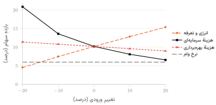
مثال 21.19 (شیبِ ناهمسان) پرسش. با ±20 % در انرژی، تعرفه، هزینهٔ سرمایهای و هزینهٔ بهرهبرداری، بازدهِ سهام چه میشود؟ کدام اثر ناخطی است؟
پاسخ. انرژی و تعرفه 4.53 تا 15.41 %؛ هزینهٔ سرمایهای 20.90 تا 6.58 %؛ هزینهٔ بهرهبرداری 11.41 تا 8.99 %.
تفسیر. اثرِ هزینهٔ سرمایهای ناخطی است: کاهشِ 20 % بازده را دو برابر میکند ولی افزایشِ 20 % آن را فقط 3.6 واحد کم میکند، چون با بدهیِ ثابت هر تغییر کاملاً به سهامِ کوچک میرسد. افتِ 20 % انرژی یا تعرفه بازده را زیرِ نرخِ وام میبرد: اهرم برعکس کار میکند.
تعرفهٔ پیشنهادی. در مناقصهٔ قراردادِ خرید، شرکتکننده کمترین تعرفهای را پیشنهاد میکند که بازدهِ هدفش را بدهد. با بازاندازهٔ بدهی برای هر حالت:
tariff to bid (u/MWh, year 1) for a 10 % equity IRR (debt resized):
capex energy 95 % energy 100 % energy 105 %
90 % 67.0 64.0 61.5
100 % 72.8 69.5 66.7
110 % 78.6 75.0 72.0
a bidder who prices at P50 energy and the base capex bids
about 69.5; every 5 % of energy or 10 % of capex moves the
bid by several units - the bid is as good as its inputsمثال 21.20 (پیشنهادی که به ورودیهایش بسته است) پرسش. برای بازدهِ سهامِ 10 %، تعرفهٔ پیشنهادی در نُه ترکیبِ هزینهٔ سرمایهای (90 تا 110 %) و انرژی (95 تا 105 %) چیست؟
پاسخ. از 61.5 (هزینهٔ کم، انرژیِ زیاد) تا 78.6 (هزینهٔ زیاد، انرژیِ کم)؛ حالتِ پایه 69.5.
تفسیر. دامنهٔ 17 واحدی یعنی دو شرکتکننده با یک نیروگاه ولی برآوردهای متفاوت ممکن است پیشنهادهای بسیار متفاوت بدهند؛ برندهٔ مناقصه اغلب خوشبینترین است، نه کاراترین («نفرینِ برنده»). پیشنهادِ درست بر انرژیِ بازبینیشده (فصلِ ۱۶) و قیمتِ قراردادیِ تجهیزات تکیه دارد.
اجزای هزینهٔ ترازشده.
where the LCOE comes from (real, 5 %, u/MWh):
case capital O&M replacements+decom total
S0 35.3 14.3 0.6 50.2
S1 38.6 14.9 0.8 54.3
capital is about 70 % of the cost of energy: the
plant is bought, not run - which is why the cost of money
(the discount rate) moves the LCOE as much as the opex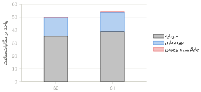
مثال 21.21 (نیروگاهی که خریده میشود، نه اداره) پرسش. سهمِ سرمایه از هزینهٔ ترازشدهٔ S0 و S1 چیست؟
پاسخ. S0: 35.3 از 50.2 (70 %)؛ S1: 38.6 از 54.3 (71 %).
تفسیر. حدودِ 70 % هزینهٔ انرژیِ نیروگاههای بادی و خورشیدی سرمایه است؛ پس هزینهٔ پول (نرخِ تنزیل، شرایطِ وام) به اندازهٔ هزینهٔ بهرهبرداری یا بیشتر بر هزینهٔ انرژی اثر دارد. کاهشِ ریسکِ پروژه (و در نتیجه نرخ) خودش «کاهشِ هزینه» است.
- نمودارِ عنکبوتی چه چیزی را نشان میدهد که گردبادی نمیدهد؟
- چرا اثرِ هزینهٔ سرمایهای بر بازدهِ سهام ناخطی است؟
- «نفرینِ برنده» در مناقصه یعنی چه؟
- چرا هزینهٔ پول بر هزینهٔ انرژیِ تجدیدپذیر اثرِ بزرگی دارد؟
21.3.9 باتری بهعنوانِ مرکزِ سود
ایده. برای داوریِ باتری باید آن را جدا دید: سرمایهٔ خودش، درآمدهای خودش (جابهجایی، خدمت، بازگیری) و هزینههای خودش (نگهداری، افزایشِ ظرفیت، تلفِ رفتوبرگشت). درآمدهایی که وجودشان تأیید نشده فقط بهشکلِ حساسیت میآیند.
the battery as its own profit centre (k u, PV at 7.5 %):
capital 13,650
shifting under a time-of-day PPA PV 9,140
reserve service at 9 u (sensitivity) PV 915
battery O&M PV -2,227
augmentation years 8 and 13 PV -678
energy lost in round trips PV -1,637
NPV of the battery -8,139
the battery repays about two fifths of its capital from these
streams: it needs a price spread, a service or a requirement
worth the rest - the same verdict as the option lessonمثال 21.22 (دو پنجمِ سرمایه) پرسش. ارزشِ فعلیِ هر جریانِ باتری و ارزشِ فعلیِ خالصِ آن چیست؟
پاسخ. سرمایه 13,650؛ جابهجایی با تعرفهٔ زمانِ روز 9,140؛ خدمت با 9 واحد (حساسیت) 915؛ نگهداری −2,227؛ افزایشِ ظرفیت −678؛ تلفِ رفتوبرگشت −1,637؛ ارزشِ فعلیِ خالص −8,139 هزار.
تفسیر. جریانهای تأییدپذیر حدودِ دو پنجمِ سرمایه را بازمیگردانند. پس باتریِ نیروگاهِ P با قیمتهای آموزشی مرکزِ زیان است، مگر اینکه دامنهٔ قیمتِ روزانه بسیار گستردهتر، خدمتی با پرداختِ بیشتر، یا الزامی (جزیره، خواستِ شبکه) بقیه را بپوشاند. این همان حکمِ مثال 21.16 و مثال 21.39 است، این بار با جزءبهجزءِ پول. وارسی: جمعِ جریانها \(9{,}140 + 915 - 2{,}227 - 678 - 1{,}637 = 5{,}513\)؛ \(5{,}513/13{,}650 = 0.40\).
- سه درآمد و سه هزینهٔ باتری را نام ببرید.
- چرا تلفِ رفتوبرگشت هزینه است؟
- چه چیزی باتریِ P را به مرکزِ سود تبدیل میکند؟
21.4 ج. قراردادها و تخصیصِ ریسک
این بخش مفهومهای تجاری را توضیح میدهد، نه مشاورهٔ حقوقی. متنِ هر قرارداد، قانونِ حاکم، حلِ اختلاف و اجرای ضمانتها کارِ حقوقدانانِ صلاحیتدار در کشورِ پروژه است (فصلهای ۳۸ و ۵۵ تا ۵۷). همهٔ نرخها، سقفها و احتمالهای این بخش آموزشیاند (A-308).
21.4.1 ساختارِ قراردادها: چه کسی با چه کسی
ایده. نیروگاهِ P را یک شرکتِ پروژه (به انگلیسی special purpose vehicle, SPV) مالک است که فقط همین نیروگاه را دارد. همهٔ قراردادها به این شرکت ختم میشوند (شکل 21.10): سهامداران سرمایه میدهند، وامدهندگان وام، پیمانکارِ EPC میسازد، سازندگان تجهیزات و ضمانت میدهند، پیمانکارِ بهرهبرداری نگه میدارد، بیمهگر بیمه میکند، خریدار برق را میخرد و شرکتِ شبکه اتصال میدهد. مهندسِ مستقل (به انگلیسی independent engineer) برای وامدهندگان کار میکند و همهٔ اینها را از دیدِ فنی بازبینی میکند (بخش 21.6.4).
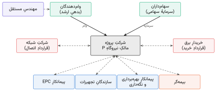
اجزای هر قراردادِ ساخت و تأمین. (۱) دامنه (به انگلیسی scope): دقیقاً چه چیزی تحویل میشود و مرزِ آن کجاست (همان مرزهای رابطِ فصلِ ۱۸). (۲) قیمت و پرداخت: ثابت یا قابلِ تعدیل، مرحلهها. (۳) زمانبندی و خسارتِ تأخیر. (۴) ضمانتهای عملکرد و خسارتِ عملکرد. (۵) آزمونهای پذیرش: پذیرشِ موقت و نهایی و شاهدِ هر کدام (فصلِ ۵۰). (۶) تغییر: روالِ دستورِ تغییر و قیمتگذاریِ آن. (۷) ضمانتنامه و تضمین: حسنِ انجامِ کار، ضمانتِ دورهٔ نقص. (۸) قطعاتِ یدکی و خدمت. (۹) حلِ اختلاف.
یک قراردادِ فراگیر یا چند قرارداد. در قراردادِ EPC یکپارچه، یک پیمانکار همهٔ رابطها را بر دوش میگیرد و برای آن صرف (به انگلیسی wrap premium) میگیرد. در چندقراردادی، مالک رابطها را خودش مدیریت میکند: ارزانتر در حالتِ عادی، گرانتر وقتی رابطی شکست بخورد.
one EPC wrap or several contracts (expected cost, k u):
EPC wrap: price 132,982 + premium 6 % = 140,961
multi-contract: 132,982 + interface team 1.5 %
+ 30 % chance x 12 % = 139,765
expected saving of the multi-contract route 1,197 k u
but its bad case (interface failure) costs 150,935: 9,974 more
than the wrap; lenders often prefer the wrap because it puts
the interface risk with one party that can carry itمثال 21.23 (صرفهجوییِ مورد انتظار در برابرِ حالتِ بد) پرسش. با صرفِ 6 % برای قراردادِ یکپارچه، و برای چندقراردادی تیمِ رابطِ 1.5 % و احتمالِ 30 % شکستِ رابطی با هزینهٔ 12 %، کدام ارزانتر است؟ در حالتِ بد چه؟
پاسخ. یکپارچه 140,961؛ چندقراردادیِ مورد انتظار 139,765: 1,197 صرفهجویی. حالتِ بدِ چندقراردادی 150,935: 9,974 بیش از یکپارچه.
تفسیر. صرفهجوییِ مورد انتظار کوچک و حالتِ بد بزرگ است. مالکی که ترازنامهٔ قوی و تیمِ باتجربه دارد ممکن است چندقراردادی را بپذیرد؛ وامدهندگان اغلب یکپارچه را ترجیح میدهند چون ریسکِ رابط را به طرفی میسپارد که میتواند آن را بر دوش بکشد. این تصمیم بخشی از راهبردِ تدارکاتِ فصلِ ۳۸ است. وارسی: \(132{,}982 \times (1 + 0.015 + 0.036) = 139{,}765\).
- ده طرفِ ساختارِ قراردادیِ شکل 21.10 را نام ببرید.
- نُه جزءِ یک قراردادِ ساخت را بنویسید.
- «صرفِ یکپارچگی» بهای چه چیزی است؟
- چرا وامدهندگان اغلب قراردادِ یکپارچه را ترجیح میدهند؟
21.4.2 خسارتِ تأخیر، خسارتِ عملکرد و ضمانتنامهها
ایده. خسارتِ مقطوع مبلغی از پیش توافقشده است که طرفِ کوتاهیکننده میپردازد، بهجای اثباتِ زیانِ واقعی. دو نوعِ اصلی: تأخیر (به ازای هر روزِ دیرکردِ بهرهبرداریِ تجاری) و عملکرد (به ازای هر درصد کمبود در یک آزمونِ تعریفشده). هر دو سقف دارند و معمولاً تنها جبرانِ مالکاند.
one month of delay to the commercial operation date:
revenue lost 1,704 k u
interest on the drawn debt 605
fixed costs that continue (half) 178
cost to the owner 2,487 k u a month
delay LD at 0.05 % a day of the EPC price: 1,995 k u a month,
capped at 10 % = 13,298 k u (about 7 months)
the LD covers 80 % of the owner's monthly loss; LD rates
are set near the real loss so the contractor carries the
delay it causes; beyond the cap the owner carries it -
lenders want LDs to cover at least the interest and fixed
costs of the delay period (teaching, A-308)مثال 21.24 (یک ماه تأخیر) پرسش. یک ماه تأخیر برای مالک چقدر هزینه دارد؟ خسارتِ تأخیرِ 0.05 % در روز از قیمتِ EPC چقدر از آن را میپوشاند؟ سقف کی میرسد؟
پاسخ. درآمدِ ازدسترفته 1,704، بهرهٔ وامِ برداشتشده 605، هزینههای ثابتِ ادامهدار 178: جمعاً 2,487 هزار در ماه. خسارت 1,995 در ماه (80 %)؛ سقفِ 10 % (13,298) پس از حدودِ ۷ ماه.
تفسیر. خسارتِ تأخیر را نزدیکِ زیانِ واقعی میگذارند تا پیمانکار انگیزه داشته باشد؛ کمترش انگیزه نمیسازد و بیشترش قیمتِ پیشنهاد را بالا میبرد. وامدهندگان میخواهند خسارت دستکم بهره و هزینههای ثابتِ دورهٔ تأخیر را بپوشاند. فراتر از سقف، زیان با مالک است (مثال 21.69). وارسی: \(0.0005 \times 132{,}982 \times 30 = 1{,}995\).
a 2 % shortfall of the wind farm's power curve (teaching):
lost energy a year GWh, value over 25 years (NPV 7.5 %)
lost 3.84 GWh a year, worth 3,175 k u over the PPA
performance LD at 1 % of the turbine price per 1 % shortfall: 1,560 k u
the LD pays 49 % of the loss; it is a remedy for a
measured shortfall in a defined test (power-curve test,
chapter 11), capped, and usually the owner's only remedy;
so the test method and the measurement uncertainty are
worth as much as the LD rateمثال 21.25 (نیمی از زیان) پرسش. کمبودِ 2 % در منحنیِ توانِ مزرعهٔ بادی چه انرژیای از دست میدهد و ارزشِ آن در طولِ قرارداد چیست؟ خسارتِ عملکردِ 1 % قیمتِ توربین به ازای هر درصد چقدر از آن را میپوشاند؟
پاسخ. 3.84 GWh در سال (از 191.87 GWh فصلِ ۱۳)؛ ارزشِ فعلی 3,175 هزار؛ خسارت 1,560: 49 % زیان.
تفسیر. خسارتِ عملکرد معمولاً بخشی از زیان را میپوشاند و فقط برای کمبودی که در آزمونِ تعریفشده اندازهگیری شود (آزمونِ منحنیِ توان، فصلِ ۱۱). پس روشِ آزمون، عدمِ قطعیتِ اندازهگیری و تعریفِ «کمبود» به اندازهٔ نرخِ خسارت ارزش دارند. وارسی: \(0.02 \times 191.87 = 3.84\).
extended inverter warranty, years 6-10 (teaching):
inverter fleet price 4,320 k u; extension price 346
expected repair cost years 6-10, PV at 7.5 %: 128
the extension costs more than the expected repairs: it buys
certainty, not value - worth it if the owner cannot carry a
bad year, or if lenders require it; read what it excludesمثال 21.26 (خریدنِ قطعیت) پرسش. تمدیدِ ضمانتِ مبدلها از سالِ ۶ تا ۱۰ به 8 % قیمتِ آنها، در برابرِ هزینهٔ مورد انتظارِ تعمیرها ارزش دارد؟
پاسخ. قیمتِ تمدید 346؛ ارزشِ فعلیِ تعمیرهای مورد انتظار 128 هزار.
تفسیر. تمدید از دیدِ میانگین گران است: سازنده هم ریسک و هم سودش را در قیمت گذاشته است. اما قطعیت میخرد: اگر مالک نتواند سالی بد را تاب آورد، یا وامدهندگان آن را بخواهند، میارزد. استثناهای ضمانت (فرسودگیِ عادی، خرابی از شبکه، تعمیرِ غیرمجاز) را پیش از خرید بخوانید. همین منطق برای قطعاتِ یدکی (فصلِ ۱۸، توزیعِ پواسون) و ضمانتِ باتری (فصلِ ۱۹) برقرار است.
- خسارتِ مقطوع چیست و چرا سقف دارد؟
- سه جزءِ زیانِ ماهانهٔ تأخیر را بنویسید.
- چرا روشِ آزمونِ منحنیِ توان به اندازهٔ نرخِ خسارت مهم است؟
- تمدیدِ ضمانت چه وقت ارزش دارد با اینکه از دیدِ میانگین گران است؟
21.4.3 ماتریسِ تخصیصِ ریسک و هزینهٔ چرخهٔ عمر
ایده. قاعدهٔ پایه: هر ریسک نزدِ طرفی برود که بهتر از همه میتواند آن را کنترل کند یا بهتر از همه میتواند آن را بر دوش بکشد. ریسکی که به کسی سپرده نشود، نزدِ مالک میماند و از راهِ پوششها (بخش 21.7) به وامدهندگان هم میرسد. اصولِ مدیریتِ ریسک در ISO 31000:2018 آمدهاند (راهنما، نه الزام). ماتریسِ آموزشیِ نیروگاهِ P:
RISKS = [ # (risk, owner of the risk, how it is passed on or kept)
("resource below P50", "owner/equity", "P90 debt sizing, DSRA"),
("construction delay", "EPC contractor", "delay LDs up to the cap"),
("cost overrun", "EPC (fixed price)", "contingency, standby equity"),
("equipment performance", "OEM", "performance LDs, tests"),
("availability", "O&M contractor", "availability LDs, capped"),
("curtailment by grid", "offtaker or owner", "deemed energy clause"),
("buyer does not pay", "owner/lenders", "payment security, DSRA"),
("change in law", "offtaker (if agreed)", "change-in-law clause"),
("force majeure", "shared", "insurance, relief periods"),
("interest rate", "owner", "rate hedge"),
("currency", "owner", "hedge, indexed tariff"),
("battery degradation", "OEM to warranty limit", "warranty, augmentation"),
]risk allocation matrix of Plant P (teaching; commercial, not legal):
risk carried by instrument
resource below P50 owner/equity P90 debt sizing, DSRA
construction delay EPC contractor delay LDs up to the cap
cost overrun EPC (fixed price) contingency, standby equity
equipment performance OEM performance LDs, tests
availability O&M contractor availability LDs, capped
curtailment by grid offtaker or owner deemed energy clause
buyer does not pay owner/lenders payment security, DSRA
change in law offtaker (if agreed) change-in-law clause
force majeure shared insurance, relief periods
interest rate owner rate hedge
currency owner hedge, indexed tariff
battery degradation OEM to warranty limit warranty, augmentation
a risk belongs with the party that can best control it or
carry it; what is not passed on stays with the owner and,
through the cover ratios, with the lendersمثال 21.27 (ریسکهایی که نزدِ مالک میمانند) پرسش. کدام ریسکها در ماتریس نزدِ مالک میمانند و با چه ابزاری کوچک میشوند؟ کدام به قراردادِ خرید وابستهاند؟
پاسخ. نزدِ مالک: منبعِ کمتر از P50 (اندازهٔ بدهی بر P90 و DSRA)، نرخِ بهره (پوشش)، ارز (پوشش، تعرفهٔ شاخصدار)، و بخشی از پرداختِ خریدار (تضمینِ پرداخت). وابسته به قراردادِ خرید: کاهشِ تولیدِ شبکه (بندِ انرژیِ فرضی)، تغییرِ قانون (اگر خریدار پذیرفته باشد).
تفسیر. ماتریس یک سند است، نه یک جدولِ آموزشی: در تحویلدادنیِ این فصل (PLP-PRJ-REG-0010) با مالکِ هر ریسک، ابزار، شاهد و ریسکِ باقیمانده نگه داشته میشود و با هر قرارداد بهروز میشود. وارسی: هر ردیف یک «حامل» و یک «ابزار» دارد؛ ردیفی که ابزار ندارد ریسکِ پذیرفتهشده است و باید صریح نوشته شود.
هزینهٔ چرخهٔ عمر و نگهداریپذیری. قیمتِ خرید فقط بخشی از هزینهٔ تجهیزات است. هزینهٔ چرخهٔ عمر (راهنمای IEC 60300-3-3:2017) خرید، نصب، بهرهبرداری، نگهداری، قطعات، تعمیر، توقفها و برچیدن را با هم میبیند. نگهداریپذیری (دسترسی به قطعه، زمانِ تعمیر، یدکِ استاندارد، ابزارِ ویژه) مستقیماً دسترسپذیری و هزینهٔ بهرهبرداری را میسازد؛ تجهیزی ارزانتر که تعمیرش سه برابر طول بکشد، در طولِ عمر گرانتر است (فصلهای ۱۸ و ۵۲).
- قاعدهٔ پایهٔ تخصیصِ ریسک را بنویسید.
- چهار ریسکی که نزدِ مالک میمانند را با ابزارِ هر کدام نام ببرید.
- ریسکِ پذیرفتهشده در ماتریس چگونه نوشته میشود؟
- هزینهٔ چرخهٔ عمر چه اجزایی دارد؟
- چرا نگهداریپذیری بخشی از اقتصاد است؟
21.4.4 بیمه، و آزمونی که عدمِ قطعیت دارد
ایده. بیمه ریسکهای کماحتمال و بزرگ (آتش، طوفان، خرابیِ ترانسفورماتورِ اصلی، توقفِ طولانی) را با حقِ بیمه معاوضه میکند. حقِ بیمه از زیانِ مورد انتظار بیشتر است (سود و هزینهٔ بیمهگر)؛ پس بیمه از دیدِ میانگین گران است و ارزشش در دُمِ توزیع است. فرانشیز (به انگلیسی deductible) بخشی است که مالک خودش برمیدارد.
business-interruption cover: deductible against premium (k u/yr):
deductible days expected loss kept premium total expected cost
0 0 720 720
7 112 575 687
30 326 297 623
60 436 154 590
a 1-in-100 event: 207 days, 11,624 k u lost
a larger deductible lowers the expected cost (the insurer's
margin is paid on less), but the owner keeps the first days
of every event; lenders set the minimum cover and the
largest deductible the cash flow can carry (DSRA, ch 38)مثال 21.28 (فرانشیزِ بزرگتر، هزینهٔ کمتر، دُمِ بزرگتر) پرسش. با فرانشیزِ صفر تا ۶۰ روز، هزینهٔ کلِ مورد انتظارِ مالک چیست؟ یک رخدادِ یکدرصدی چقدر زیان دارد؟
پاسخ. صفر: 720؛ ۷ روز: 687؛ ۳۰ روز: 623؛ ۶۰ روز: 590 هزار در سال. رخدادِ یکدرصدی: 207 روز و 11,624 هزار زیان.
تفسیر. فرانشیزِ بزرگتر هزینهٔ مورد انتظار را کم میکند، چون حاشیهٔ بیمهگر روی مبلغِ کمتری پرداخت میشود؛ اما مالک روزهای نخستِ هر رخداد را خودش میپردازد. وامدهندگان کمینهٔ پوشش و بیشینهٔ فرانشیزی را تعیین میکنند که جریانِ نقد (و DSRA) تاب میآورد؛ برنامهٔ بیمه در فصلِ ۳۸ میآید.
a power-curve test with measurement uncertainty (tolerance 1 %):
true shortfall % test u 1.5 %: P(pay) test u 4 %: P(pay)
0.0 0.25 0.40
1.0 0.50 0.50
2.0 0.75 0.60
4.0 0.98 0.77
with a 4 % test uncertainty a real 2 % shortfall is paid only
six times in ten, and a perfect machine pays four times in
ten if the contract counts the measured value; contracts
therefore subtract the uncertainty before damages - which
makes the test method (chapter 11) the real value of the LDمثال 21.29 (خسارتی که سکه میاندازد) پرسش. با رواداریِ 1 %، احتمالِ پرداختِ خسارت برای کمبودِ واقعیِ 0 تا 4 % با عدمِ قطعیتِ آزمونِ 1.5 و 4 % چیست؟
پاسخ. با 1.5 %: 0.25، 0.50، 0.75، 0.98. با 4 %: 0.40، 0.50، 0.60، 0.77.
تفسیر. آزمونِ پرعدمِقطعیت تقریباً سکه میاندازد: کمبودِ واقعیِ 2 % فقط شش بار از ده بار پرداخت میشود و ماشینِ بیعیب چهار بار از ده بار جریمه میشود. پس قراردادها عدمِ قطعیت را پیش از خسارت کم میکنند (و این خودش کمبودهای کوچک را بیجبران میگذارد)؛ روشِ آزمون (فصلِ ۱۱) ارزشِ واقعیِ خسارت را تعیین میکند. وارسی: در کمبودِ برابرِ رواداری، احتمال همیشه 0.5 است.
- چرا بیمه از دیدِ میانگین گران است و چرا خریده میشود؟
- فرانشیز چه چیزی را جابهجا میکند؟
- چرا احتمالِ پرداخت در کمبودِ برابرِ رواداری 0.5 است؟
- کم کردنِ عدمِ قطعیت پیش از خسارت چه هزینهای برای مالک دارد؟
21.4.5 یدکِ راهبردی: ترانسفورماتورِ اصلی
ایده. برخی قطعهها کم خراب میشوند ولی خرابیشان طولانی است: ترانسفورماتورِ اصلیِ 63 MVA بی یدک حدودِ شش ماه و با یدکِ مشترک یک ماه طول میکشد (فصلِ ۱۸، A-288). با یکی از دو ترانسفورماتور، صادرات به حدودِ 60 MW محدود میشود. آیا یدک میارزد؟
a strategic spare main transformer (k u):
share of energy above 60 MW: 6.0 %
failures a year (two units) 0.02
expected loss a year: no spare 12, with spare 2
PV of the difference over 25 years 137 against a spare at 1,900
on expected value the spare does not pay; it buys protection
against a six-month half-plant outage (about 616 k u),
which lenders and insurers may require - or a shared spare
pool with other plantsمثال 21.30 (یدکی که از دیدِ میانگین نمیارزد) پرسش. زیانِ مورد انتظارِ سالانه بی یدک و با یدک چیست؟ ارزشِ فعلیِ تفاوت در ۲۵ سال با قیمتِ یدک چه نسبتی دارد؟ یک رخدادِ ششماهه چقدر زیان دارد؟
پاسخ. سهمِ انرژیِ بالای 60 MW 6.0 %؛ زیانِ مورد انتظار 12 و 2 هزار در سال؛ ارزشِ فعلیِ تفاوت 137 در برابرِ قیمتِ یدکِ 1,900؛ یک رخدادِ ششماهه حدودِ 616 هزار.
تفسیر. از دیدِ میانگین یدک نمیارزد، چون خرابی نادر است و انرژیِ بالای 60 MW کم. ارزشِ یدک در حفاظت است: وامدهنده یا بیمهگر ممکن است آن را بخواهد، یا استخرِ مشترکِ یدک با نیروگاههای دیگر هزینه را تقسیم کند. اگر سهمِ انرژیِ بالای حدِ یکترانسفورماتوری بزرگتر بود (نیروگاهی که بیشترِ وقت نزدیکِ ظرفیت کار میکند)، پاسخ عوض میشد. وارسی: \(0.02 \times 292.2 \times 0.06 \times 0.5 \times 70 = 12.3\).
- چرا خرابیِ نادرِ طولانی با خرابیِ پرتکرارِ کوتاه فرق دارد؟
- سهمِ انرژیِ بالای 60 MW چه نقشی در پاسخ دارد؟
- استخرِ مشترکِ یدک چگونه هزینه را کم میکند؟
21.4.6 شکلهای قراردادِ ساخت و نگهداری
ایده. هر شکلِ قرارداد ریسک را جای دیگری میگذارد. جدولِ زیر شکلهای رایج را با تقسیمِ ریسکِ رابط، ریسکِ قیمت و نقشِ مالک نشان میدهد (مفهومی؛ نامها و دامنهها در هر بازار فرق دارند):
| شکل | چه کسی چه میکند | ریسکِ رابط | ریسکِ قیمت | نقشِ مالک |
|---|---|---|---|---|
| EPC یکپارچه | یک پیمانکار طراحی، تأمین، ساخت | پیمانکار | پیمانکار (قیمتِ ثابت) | پایش |
| چندقراردادی | تأمینِ توربین، PV، پست و عمران جدا | مالک | هر پیمانکار برای بخشِ خود | مدیریتِ رابطها |
| EPCM | مدیرِ مهندسی و تدارکات به نمایندگیِ مالک | مالک | مالک (هزینهمحور) | تصمیمگیر |
| تأمینِ توربین (TSA) | سازنده توربین میدهد و نصب میکند | مالک یا BOP | سازنده | هماهنگی با BOP |
| تعادلِ نیروگاه (BOP) | جاده، فونداسیون، کابل، پست | مالک | پیمانکار | هماهنگی با TSA |
| خدمتِ بلندمدت (LTSA) | سازنده نگهداری و قطعات را ۱۰ تا ۲۰ سال میدهد | — | سازنده (با شاخص) | پایشِ دسترسپذیری |
| O&M کامل یا پایه | کامل: قطعات و تعمیرات؛ پایه: فقط نیروی کار | — | کامل: پیمانکار | پایه: خریدِ قطعات |
مثال 21.31 (انتخابِ شکلِ قرارداد برای نیروگاهِ ترکیبی) پرسش. برای نیروگاهِ P با باد، PV و باتری، کدام ترکیبِ قراردادها رابطها را کمتر و ریسکِ قیمت را کنترلپذیر نگه میدارد؟
پاسخ. یک گزینهٔ رایج: TSA و LTSA با سازندهٔ توربین (توربین تخصصیترین بخش است و سازنده نگهداریاش را بهتر میداند)، یک EPC برای PV، باتری و تعادلِ نیروگاه با پست، و قراردادِ رابط که مرزهای TSA و EPC را با ثبتنامهٔ رابطِ فصلِ ۱۸ ببندد. گزینهٔ دیگر یک EPC کامل با صرفِ بالاتر (مثال 21.23).
تفسیر. هیچ شکلی «درست» نیست؛ انتخاب به توانِ مدیریتیِ مالک، بازارِ پیمانکاران و خواستِ وامدهنده بستگی دارد و در راهبردِ تدارکاتِ فصلِ ۳۸ تصمیمگیری میشود. هر رابطِ باز میانِ دو قرارداد یک ریسکِ مالک است و باید در ماتریسِ ریسک (بخش 21.4.3) بیاید.
- ریسکِ رابط در EPC یکپارچه و چندقراردادی نزدِ کیست؟
- TSA و LTSA را از هم جدا کنید.
- O&M کامل و پایه چه فرقی در ریسکِ قیمت دارند؟
21.4.7 تعدیلِ قیمت و تغییرِ قانون
تعدیلِ قیمتِ EPC. میانِ پیشنهاد و سفارش ممکن است ماهها بگذرد. فرمولِ تعدیل بخشی از قیمت را به شاخصها (فولاد، ارز، مس) وصل میکند تا پیمانکار برای ریسکِ شاخص صرفِ بزرگ نگذارد:
\[ \text{price} = \text{base}\,\bigl(a + b\,\tfrac{S}{S_0} + c\,\tfrac{X}{X_0}\bigr), \qquad a + b + c = 1 \tag{21.8}\]
EPC price adjustment between bid and order:
price = base x (0.55 + 0.20 x steel + 0.25 x currency)
steel currency price k u change %
1.00 1.00 132,982 0.0
1.15 1.00 136,972 3.0
1.00 1.10 136,307 2.5
1.15 1.10 140,297 5.5
an adjustment formula shares index risk until the price is
fixed; its weights should match the contractor's real cost
mix, and it should end at a fixed date (financial close)مثال 21.32 (فولادِ گرانتر و پولِ ضعیفتر) پرسش. با وزنهای 0.55، 0.20 و 0.25، اگر فولاد 15 % و ارز 10 % بالا رود، قیمت چه میشود؟
پاسخ. فولاد تنها: +3.0 %؛ ارز تنها: +2.5 %؛ هر دو: +5.5 % (140,297 هزار).
تفسیر. فرمولِ تعدیل ریسکِ شاخص را تقسیم میکند و باید با ترکیبِ واقعیِ هزینهٔ پیمانکار همخوان باشد و در تاریخی معین (بستنِ مالی) پایان یابد؛ پس از آن قیمت ثابت است. بخشی که با فرمول تعدیل میشود، از احتیاطِ بودجه هم بیرون میماند تا دو بار شمرده نشود.
تغییرِ قانون: هزینهٔ تازهٔ شبکه. فرض کنید قانونی تازه از تولیدکنندهها هزینهای بر هر مگاواتساعت بگیرد. بندِ تغییرِ قانون (جدول 21.4) تعیین میکند چه کسی آن را میپردازد.
a new grid charge on generators (change in law), u per MWh:
charge PPA passes it on min DSCR equity IRR %
0 no 1.20 10.22
2 no 1.17 9.38
2 yes 1.20 10.22
5 no 1.10 8.08
5 yes 1.20 10.22
a change-in-law clause decides who carries a new charge; a
5 u charge the owner keeps costs over 2 points of returnمثال 21.33 (بندی که دو واحدِ درصد میارزد) پرسش. هزینهٔ 2 و 5 واحد بر مگاواتساعت، اگر قراردادِ خرید آن را به خریدار منتقل کند یا نکند، چه اثری دارد؟
پاسخ. منتقلنشده: 2 واحد پوشش را 1.17 و بازده را 9.38 % میکند؛ 5 واحد 1.10 (سطحِ قفل) و 8.08 %. منتقلشده: بیتغییر.
تفسیر. بندِ تغییرِ قانون در کشوری با قانونگذاریِ پرتغییر از بندهای پرارزشِ قرارداد است؛ وامدهندگان آن را جزءِ ریسکِ کشور میبینند و ممکن است بیمهٔ ریسکِ سیاسی یا ضمانتِ دولتی بخواهند (فصلهای ۵۵ تا ۵۷). متنِ بند را حقوقدان مینویسد؛ اثرش را مدل میسنجد.
- معادلهٔ 21.8 را با وزنهای خودتان برای افزایشِ 10 % مس بنویسید.
- چرا فرمولِ تعدیل باید در تاریخی معین پایان یابد؟
- هزینهٔ 5 واحدیِ منتقلنشده چه اثری بر پوشش دارد؟
21.5 د. آزمایشگاهِ مدل
21.5.1 مدلی که بشود ممیزی کرد
ایده. مدلِ مالی تصمیمهای صدها میلیونی را میراند و یک اشتباهِ کوچک (یک علامتِ منفیِ جاافتاده، یک سالِ جابهجا) میتواند تصمیم را عوض کند. پس مدل باید ممیزیپذیر باشد:
- یک ثبتنامهٔ فرض که هر ورودی را با شناسه، مقدار، منبع و وضعیت نگه دارد (جدول 21.3).
- جریانِ یکسویه: ورودی، محاسبه، خروجی؛ هیچ عددی در میانهٔ محاسبه دستی وارد نشود.
- قراردادِ زمان و پول: دورهها (سالانه)، اسمی یا واقعی، ارز، سالِ پایه.
- بررسیهای خودکار که با هر اجرا اجرا شوند: منابع برابرِ مصارف، بازپرداختِ کاملِ بدهی، هویتِ جریانِ نقد، بازمحاسبهٔ مستقلِ نسبتها.
- حالتها با یک تابع: هر حالت فقط ورودیها را عوض کند، نه کد را.
assumption register read by the model (all teaching):
id what value
A-304 capital cost S1 / S0, k u 156,450 / 142,800
A-305 operating cost year 1, k u 4,270
A-306 replacements years 8, 12, 13, 15; decommissioning year 25
A-307 PPA 70 u/MWh +2 %/yr for 20 yr, then 45 u real
A-308 debt 6 %, 15 yr, fee 1.5 %, DSCR 1.30 P50 / 1.20 P90, gearing <= 75 %
A-309 inflation 2.5 %, tax 25 % (straight line 20 yr), WC 45/30 days
A-310 WACC 7.5 %, cost of equity 10 %, 70 % of capex in hard currency
D-019 energy: model 15.1, 295.14 GWh in year 1, PV -0.5 %/yr
D-020 P90 1-yr 276 GWh; one-year sigma 5.1 %| شناسه | چه چیزی | منبع | وضعیت |
|---|---|---|---|
| A-304 | هزینهٔ سرمایهای بر پایهٔ قلم | فصلِ ۱۸ (A-287) + توسعه + احتیاط | آموزشی |
| A-305 | هزینهٔ بهرهبرداری با آب و شستوشو | فصلهای ۱۰، ۱۵، ۱۸ | آموزشی |
| A-306 | جایگزینی و برچیدن | فصلهای ۹، ۱۱، ۱۹ | آموزشی |
| A-307 | قراردادِ خرید و بازار پس از آن | این فصل | آموزشی |
| A-308 | شرطِ وام، پوششها، خسارتها | این فصل | نمونهای |
| A-309 | تورم، مالیات، استهلاک، سرمایهٔ در گردش | این فصل | آموزشی، نه قانونِ مالیاتی |
| A-310 | نرخهای تنزیل، سهمِ ارزی | این فصل | آموزشی |
| D-019، D-020 | انرژی و عدمِ قطعیت | فصلهای ۱۵ و ۱۶ | تصمیمِ پروژه |
قلبِ مدل دو بخش است: خطوطِ بهرهبرداری (انرژی، قیمت، درآمد، هزینهها) و جریانِ نقد با بدهی:
def operating_lines(c: dict) -> dict:
"""Energy, price, revenue and costs by operating year (nominal)."""
n = T["years"]
yrs = np.arange(1, n + 1)
infl = fn.index(T["inflation"], n) # year 1 = 1.0
e = src.energy_series(n, c["energy_scale"]) * (1 - T["curtail_uncomp"])
if c.get("energy_path") is not None: # yearly factors (Monte Carlo)
e = e * np.asarray(c["energy_path"])
e = e - c["curtail_extra"] * e
ppa = yrs <= T["ppa_years"]
price = np.where(ppa, c["tariff"] * fn.index(T["tariff_index"], n),
T["merchant_real"] * infl * c["merchant_scale"])
revenue = e * price * c["price_scale"] # GWh x u/MWh = k u
revenue = revenue + c["extra_revenue"] * infl
opex = (sum(src.OPEX.values()) - (0 if c["battery"] else 160.0)) * infl
opex = opex * c["opex_scale"]
repl = np.zeros(n)
for y, (_, cost) in src.REPLACE.items():
if c["battery"] or "battery" not in _:
repl[y - 1] += cost * infl[y - 1] * c["repl_scale"]
decom = np.zeros(n)
decom[-1] = (src.DECOM["cost"] - src.DECOM["salvage"]) * infl[-1]
return {"year": yrs, "energy": e, "price": price, "revenue": revenue,
"opex": opex, "repl": repl, "decom": decom}def run(**over) -> dict:
"""The whole model; keyword arguments override DEFAULT."""
c = dict(DEFAULT, **over)
op = operating_lines(c)
n, rate, nd = T["years"], c["rate"], T["tenor"]
capex = (src.capex_total(c["battery"]) * c["capex_scale"]
* (1 + c["fx_capex"]))
ebitda = op["revenue"] - op["opex"]
# working capital: receivables less payables; its change uses cash
wc = (op["revenue"] * T["receivable_days"]
- op["opex"] * T["payable_days"]) / 365
dwc = np.diff(np.concatenate([[0.0], wc]))
dwc[-1] -= wc[-1] # released at the end
# a buyer that pays some months of year 3 late (paid in year 4)
late = op["revenue"][2] * c["default_months"] / 12
dwc[2] += late
dwc[3] -= late
# debt: sized at financial close on the lenders' P50 and P90 cases
# (CFADS proxy: EBITDA - replacements, less 7 % for tax and WC)
cf_size = {}
for case, k in (("P50", 1.0), ("P90 1-yr", src.P90_1Y)):
o = operating_lines(dict(c, energy_scale=k * c["sizing_energy"],
price_scale=c["sizing_price"],
curtail_extra=0.0, opex_scale=1.0))
cf = o["revenue"] - o["opex"] - o["repl"]
cf_size[case] = cf[:nd] * 0.93
cost_est = capex * 1.06
targets = {"P50": T["dscr_p50"], "P90 1-yr": T["dscr_p90"]}
debt, why = fn.size_debt(cf_size, targets, T["rate"], nd, cost_est,
T["max_gearing"])
if c["debt"] is not None: # debt fixed at close
debt = c["debt"]
# construction: spend, IDC and fee on the debt share
spend, idc = fn.construction(capex, T["construction"],
rate * debt / cost_est)
fee = T["fee"] * debt
# service: sculpted on the sizing case that binds, scaled to debt
shape = cf_size["P90 1-yr"] if "P90" in why else cf_size["P50"]
_, i_s, p_s, b_s = fn.sculpted_debt(shape, 1.0, T["rate"])
k = debt / b_s[0]
bal = b_s * k
principal = np.zeros(n)
principal[:nd] = p_s * k
interest = np.zeros(n)
interest[:nd] = bal * rate # actual rate applies
ds = interest + principal
dsra = T["dsra_months"] / 12 * ds[0] # funded at COD
uses = capex + idc.sum() + fee + dsra
equity = uses - debt # sources = uses
# delay: COD later, interest and fixed costs continue
delay_cost = c["delay_years"] * (sum(src.OPEX.values()) * 0.5
+ debt * rate)
equity += delay_cost
# tax: capex + IDC + fee depreciated straight line
dep = fn.straight_line(capex + idc.sum() + fee, T["dep_years"], n)
if c.get("dep_shares") is not None: # another depreciation profile
dep = (capex + idc.sum() + fee) * np.asarray(c["dep_shares"])
base = ebitda - op["repl"]
tax = fn.tax_schedule(base, dep, interest, T["tax"])
tax_u = fn.tax_schedule(base, dep, np.zeros(n), T["tax"])
cfads = base - tax - dwc - op["decom"]
dscr = fn.dscr(cfads[:nd], ds[:nd])
llcr = fn.llcr(cfads, bal, T["rate"], nd)
# equity pays in during construction and receives what is left;
# the DSRA comes back with the last debt payment
eq = cfads - ds
eq[nd - 1] += dsra
ph = T["construction"]
eq_cash = np.concatenate([[-equity * ph[0], -equity * ph[1]], eq])
# project (unlevered) cash flow: tax as if there were no debt
proj = np.concatenate([-spend, base - dwc - op["decom"] - tax_u])
npv = fn.pv(proj[2:], T["wacc"]) - fn.pv(spend, T["wacc"], start=-1)
return dict(op, capex=capex, idc=idc.sum(), fee=fee, dsra=dsra,
debt=debt, delay_cost=delay_cost, binding=why,
equity=equity, uses=uses, ebitda=ebitda, dwc=dwc,
dep=dep, tax=tax, cfads=cfads, interest=interest,
principal=principal, ds=ds, dscr=dscr, llcr=llcr,
balance=bal, eq_cash=eq_cash, gearing=debt / uses,
equity_irr=fn.irr(eq_cash), project_irr=fn.irr(proj),
npv=npv, min_dscr=float(np.nanmin(dscr)),
avg_dscr=float(np.nanmean(dscr)),
min_llcr=float(np.nanmin(llcr)))the model by year (k u, nominal; base case S1, P50):
yr GWh u/MWh revenue costs tax CFADS service to equity
1 292.2 70.0 20,453 4,270 175 13,837 11,514 2,323
2 291.7 71.4 20,825 4,377 305 16,106 11,701 4,405
5 290.1 75.8 21,982 4,713 743 16,487 12,278 4,208
8 288.6 80.4 23,202 5,789 1,085 16,288 12,329 3,959
10 287.5 83.7 24,053 5,333 1,654 17,024 13,299 3,725
12 286.5 87.0 24,934 7,571 1,609 15,711 12,204 3,508
15 284.9 92.4 26,317 8,577 2,204 15,491 12,426 8,822
16 284.4 94.2 26,794 6,184 3,097 17,467 0 17,467
20 282.3 102.0 28,792 6,826 3,436 18,480 0 18,480
21 281.8 73.7 20,781 6,997 3,446 11,339 0 11,339
25 279.7 81.4 22,769 12,245 3,761 8,887 0 8,887
year 15 holds the last debt payment and the DSRA release;
year 21 the PPA ends and the merchant price is lower; year 25
pays the decommissioning and returns the working capital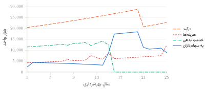
مثال 21.34 (سالهایی که شکل را عوض میکنند) پرسش. در جدولِ بالا سالهای ۱، ۱۲، ۱۵، ۱۶، ۲۱ و ۲۵ چه چیزِ ویژهای دارند؟
پاسخ. سالِ ۱: کمترین CFADS (13,837) چون سرمایهٔ در گردش ساخته میشود. سالِ ۱۲: نوسازیِ مبدلها هزینهها را به 7,571 میبرد. سالِ ۱۵: آخرین قسطِ بدهی و آزاد شدنِ DSRA: سهامداران 8,822 میگیرند. سالِ ۱۶: بی بدهی، 17,467 به سهامداران. سالِ ۲۱: قراردادِ خرید تمام و قیمت از 102 به 73.7 واحد. سالِ ۲۵: برچیدن، هزینهها را به 12,245 میرساند.
تفسیر. جریانِ نقد شکلِ پلهای دارد که هیچ میانگینی آن را نشان نمیدهد؛ ریسک در سالهای ویژه است و مدل باید آنها را جدا نشان دهد. وارسی: قیمتِ سالِ ۲۱: \(45 \times 1.025^{20} = 73.7\).
independent check of year 1 (by hand from the model lines):
revenue 20,453 - opex 4,270 - replacements 0
- tax 175 - working capital 2,171 = CFADS 13,837
interest 121,025 x 0.06 = 7,261; service 11,514
DSCR = 13,837 / 11,514 = 1.202
model checks:
PASS sources = uses
PASS debt repaid within tenor
PASS CFADS = EBITDA - repl - tax - dWC - decom
PASS independent DSCR equals model DSCR
PASS CFADS covers debt service every year
year 1 is the lowest: the working capital is built from
that year's cash (45 days of revenue); the sculpting
follows the lenders' sizing case, not this one- پنج ویژگیِ مدلِ ممیزیپذیر را بنویسید.
- چهار بررسیِ خودکارِ مدل را نام ببرید.
- چرا سالِ اول کمترین CFADS را دارد؟
- قیمتِ بازار در سالِ ۲۵ را با تورمِ 2.5 % حساب کنید.
21.5.2 مثالِ کارشدهٔ ۱: گزینهها با فرضهای گوناگونِ تولید، تأمینِ مالی و جایگزینی
ایده. مدل برای مقایسه ساخته میشود. شش گزینه را با همان مدل میسنجیم؛ هر کدام فقط ورودیها را عوض میکند:
TOD = src.SHIFT_VALUE * 70 / 50 # shifting value at the PPA tariff
ALTERNATIVES = [
("A S1, flat PPA (base)", dict()),
("B S0, flat PPA", dict(battery=False)),
("C S1, time-of-day PPA", dict(extra_revenue=TOD)),
("D C, oversize not augment", dict(extra_revenue=TOD,
capex_scale=1 + 2125 / 156450,
repl_scale=3300 / 4500)),
("E C, debt 18 years", dict(extra_revenue=TOD)),
("F C, thin cover, 85 % debt", dict(extra_revenue=TOD)),
]worked example 1: alternatives (k u; debt sized on each case):
case capex debt eq.IRR% minDSCR P90DSCR
A S1, flat PPA (base) 156,450 121,025D 10.22 1.20 1.12
B S0, flat PPA 142,800 113,526G 12.76 1.27 1.20
C S1, time-of-day PPA 156,450 124,378G 11.35 1.22 1.14
D C, oversize not augment 158,575 126,067G 11.15 1.21 1.13
E C, debt 18 years 156,450 124,378G 12.68 1.38 1.28
F C, thin cover, 85 % debt 156,450 140,961G 12.60 1.09 1.01
(P90 DSCR: the same debt with a P90 resource in every year;
debt set by G the gearing cap or D the cover target)
B has the lowest cost and a high IRR but no flexibility; C
pays for the battery only if the tariff values the hour; D
trades capital for fewer replacements and gains nothing
here; E spreads the same debt over 18 years: higher cover
and a higher equity IRR, if lenders offer the tenor; F takes
more debt on a thin cover: its equity IRR rises from 11.35 to
12.60 % while its P90 cover falls to 1.01, deep in lock-up -
a higher IRR bought with risk is not a better project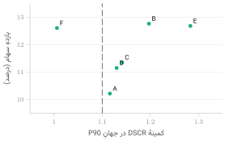
مثال 21.35 (چرا ارزانترین، پربازدهترین یا یک P90 تصمیم نمیگیرد) پرسش. شش گزینه را مقایسه کنید و نشان دهید چرا (۱) کمترین هزینهٔ اولیه، (۲) بیشترین نرخِ بازده و (۳) یک عددِ P90 بهتنهایی «بانکپذیری» را ثابت نمیکنند.
پاسخ.
- کمترین هزینه: B (S0) با 142,800 ارزانترین است و بازدهِ سهامِ 12.76 % دارد، اما هیچ انعطافی ندارد: نه جابهجایی، نه ذخیره، نه جزیرهٔ بارهای حیاتی. اگر قرارداد یا شبکه اینها را بخواهد (یا روزی بخواهد)، ارزانترین گزینه گزینهٔ نادرست است.
- بیشترین بازده: F با پوششِ نازک و بدهیِ 85 % بازدهِ سهام را از 11.35 به 12.60 % میبرد، ولی پوششِ آن در جهانِ P90 به 1.01 میرسد: عمیق در قفل و نزدیکِ نکول. بازدهِ بالاتری که با ریسکِ بیشتر خریده شده، پروژهٔ بهتری نیست.
- یک P90: گزینههای A و C هر دو «P90 را پاس میکنند»، اما پوششِ آنها در جهانی که هر سال P90 باشد 1.12 و 1.14 است، نزدیکِ قفل. P90 یکساله دربارهٔ یک سالِ بد است؛ مجموعهٔ سالهای بد، قیمت، تأخیر و هزینه را باید جدا آزمود (بخش 21.8).
تفسیر. C (باتری با تعرفهٔ زمانِ روز) باتری را با ارزشِ واقعیاش میسنجد؛ D نشان میدهد بزرگتر خریدنِ باتری بهجای افزایشِ ظرفیت اینجا سودی ندارد؛ E نشان میدهد مدتِ وام بیش از اندازهٔ آن بر بازده اثر دارد (اگر وامدهنده بپذیرد). بانکپذیری یعنی مجموعهای از شاهد (بخش 21.8.3)، نه یک نسبت. وارسی: همهٔ گزینهها با همان مدل و همان بررسیها اجرا شدهاند.
- چرا گزینهٔ B با وجودِ بازدهِ بالا ممکن است نادرست باشد؟
- اهرمِ گزینهٔ F چه چیزی را خریده و چه چیزی را فروخته است؟
- تفاوتِ «P90 یکساله» و «P90 در هر سال» را بنویسید.
- چرا مدتِ وامِ بلندتر بازدهِ سهام را بالا میبرد؟
21.5.3 خطاهایی که بررسیها میگیرند و نمیگیرند
ایده. بررسیهای خودکارِ بخش 21.5.1 لازماند ولی کافی نیستند. برای اینکه بدانیم چه چیزی را میگیرند، سه خطای واقعی را عمداً در مدل میکاریم و میبینیم کدام دیده میشود.
three planted errors and the model checks (teaching):
1 tax added to CFADS: identity check FAIL
-> caught (the wrong model would show min DSCR 1.23)
2 replacement in year 18, not 15: all checks PASS
-> NOT caught; DSCR of year 15 1.22 instead of 1.25
3 costs left in year-1 money: checks pass -> NOT caught;
equity IRR 10.94 % instead of 10.22 %
checks catch broken identities, not wrong inputs: a
misplaced year or a mixed convention passes every check;
only the register (source of each input), a second person
and a reasonableness review catch thoseمثال 21.36 (دو خطا از سه پنهان میمانند) پرسش. کدام خطاها گرفته شدند و کدام نه؟ چه چیزی خطاهای پنهان را میگیرد؟
پاسخ. (۱) مالیاتِ افزوده بهجای کاسته: بررسیِ هویتِ CFADS رد میشود و خطا گرفته میشود (مدلِ غلط پوششِ 1.23 نشان میداد). (۲) جایگزینی در سالِ ۱۸ بهجای ۱۵: همهٔ بررسیها قبول؛ پوششِ سالِ ۱۵ 1.22 بهجای 1.25. (۳) هزینهها به پولِ سالِ اول در مدلِ اسمی: همهٔ بررسیها قبول؛ بازدهِ سهام 10.94 بهجای 10.22 %.
تفسیر. بررسیها هویتها را میسنجند (جمعها، علامتها، تراز)، نه ورودیها را. سالِ جابهجا و قراردادِ آمیخته (اسمی و واقعی) همهٔ بررسیها را پاس میکنند و فقط با سه چیز گرفته میشوند: ثبتنامهٔ فرضها که منبعِ هر ورودی را نشان دهد (جدول 21.3)، نفرِ دوم که مدل را مستقل بخواند (ممیزیِ مدل یکی از شرطهای پیشین است، بخش 21.8.3)، و بازبینیِ معقولبودن (آیا هزینههای سالِ ۲۰ به پولِ همان سالاند؟). خطای سوم بازده را 0.7 واحد خوشبینانه کرده است: بیش از اثرِ بسیاری از تصمیمهای فنی. وارسی: خطای اول در خروجیها خوشبینانه بود و اگر بررسی نبود، پیدا نمیشد.
- «هویت» و «ورودی» را در یک مدل از هم جدا کنید.
- سه سازوکار برای گرفتنِ خطاهای ورودی نام ببرید.
- چرا خطای قراردادِ اسمی/واقعی خوشبینانه است؟
- یک بررسیِ خودکار پیشنهاد کنید که خطای سوم را بگیرد.
21.5.4 سه صورتِ مالی و آزمونِ تراز
ایده. مدلِ جریانِ نقد برای وامدهنده کافی است، اما حسابداری سه صورت میخواهد: سود و زیان (درآمد، هزینه، استهلاک، بهره، مالیات، سودِ خالص)، جریانِ نقد (پولی که واقعاً جابهجا شد) و ترازنامه (داراییها، بدهیها و حقوقِ صاحبانِ سهام در پایانِ هر سال). اگر هر خطِ پولیِ مدل جای درستی داشته باشد، ترازنامه میبندد: داراییها برابرِ بدهی بهاضافهٔ حقوقِ صاحبانِ سهام. این قویترین آزمونِ هویتی است که ممیز اجرا میکند.
def statements(r: dict, years: int = 3) -> list[dict]:
"""Income statement, cash and balance sheet of the first operating
years (simplified: one fixed asset, receivables net of payables as
working capital, DSRA cash, senior debt, paid-in equity and
retained earnings). Distributions = CFADS - debt service."""
asset = r["capex"] + r["idc"] + r["fee"]
wc = np.cumsum(r["dwc"])
retained, rows = 0.0, []
for t in range(years):
ebit = r["ebitda"][t] - r["repl"][t] - r["dep"][t]
ni = ebit - r["interest"][t] - r["tax"][t]
dist = r["cfads"][t] - r["ds"][t]
retained += ni - dist
assets = (asset - r["dep"][:t + 1].sum()) + wc[t] + r["dsra"]
debt = r["balance"][t] - r["principal"][t]
rows.append({"ebitda": r["ebitda"][t], "dep": r["dep"][t],
"ebit": ebit, "int": r["interest"][t],
"tax": r["tax"][t], "ni": ni,
"dist": dist, "assets": assets, "debt": debt,
"equity": r["equity"] + retained,
"gap": assets - debt - r["equity"] - retained})
return rowsthe first three years as statements (k u):
line year 1 year 2 year 3
EBITDA 16,183 16,448 16,718
depreciation 8,222 8,222 8,222
EBIT 7,962 8,227 8,496
interest 7,261 7,006 6,725
tax 175 305 443
net income 525 915 1,329
distributions 2,323 4,405 4,347
total assets 164,137 155,952 147,769
debt at year end 116,772 112,078 106,912
equity (paid + retained) 47,365 43,875 40,857
assets - debt - equity 0 -0 -0
the balance closes (gap 0) only if every cash line of the
model has its place in the statements: a balance check is
the strongest identity an auditor runs; distributions above
net income in the early years shrink the book equity - the
depreciation is cash the owners take backمثال 21.37 (سود کم، پولِ زیاد) پرسش. سودِ خالصِ سه سالِ اول چیست؟ چرا توزیع به سهامداران از سودِ خالص بیشتر است؟ آیا ترازنامه میبندد؟
پاسخ. سودِ خالص 525، 915 و 1,329؛ توزیع 2,323، 4,405 و 4,347 هزار. اختلافِ داراییها با بدهی و حقوقِ صاحبانِ سهام در هر سه سال صفر است.
تفسیر. استهلاک (8,222 در سال) هزینهٔ حسابداری است، نه پول؛ پس جریانِ نقد از سود بسیار بیشتر است و سهامداران بخشی از سرمایهشان را بهشکلِ توزیع پس میگیرند (حقوقِ دفتریِ سهام از 49,163 به 40,857 کم میشود). سودِ کمِ سالهای نخست نشانهٔ پروژهٔ بد نیست؛ نشانهٔ استهلاکِ بزرگ و بهرهٔ بالاست. برخی کشورها توزیعِ بیش از سود را محدود میکنند (قانونِ شرکتها، U-083)؛ آنگاه پول بهشکلِ وامِ سهامداران یا کاهشِ سرمایه بازمیگردد. وارسی: \(7{,}962 - 7{,}261 - 175 = 525\).
- سه صورتِ مالی را با محتوای هر کدام نام ببرید.
- چرا «ترازنامه میبندد» آزمونِ قویای است؟
- چرا توزیع در سالهای نخست از سودِ خالص بیشتر است؟
- اگر قانون توزیعِ بیش از سود را منع کند، پول چگونه برمیگردد؟
21.5.5 بیشساختِ PV پشتِ همان اتصال، با پول
ایده. فصلِ ۱۵ نشان داد افزودنِ بلوکهای PV پشتِ همان حدِ 100 MW انرژی میافزاید ولی بخشی از هر بلوکِ تازه در حدِ صادرات کاهش مییابد (بخش 15.4.11). حالا همان را با مدلِ مالی میسنجیم: هزینهٔ هر بلوک از قیمتِ غربالگریِ فصلِ ۱۸، انرژیِ تحویلی از فصلِ ۱۵، و بدهی برای هر حالت بازاندازه میشود.
more PV behind the same 100 MW connection (S1, debt resized):
PV MW extra capex k u energy x equity IRR % NPV k u
50 0 1.000 10.22 5,159
60 7,560 1.068 10.59 10,297
70 15,120 1.132 10.83 14,858
80 22,680 1.193 10.96 18,742
90 30,240 1.251 11.00 22,003
each added 10 MW block adds less NPV (5.1, 4.6, 3.9, 3.3
million) because more of its energy is curtailed at the
limit; the shared connection makes the first blocks cheap
energy, and the gain stops where the marginal energy no
longer pays for the block; the PPA must accept the extra
energy and the grid offer must allow it (ch 17)مثال 21.38 (بلوکهایی که کمتر و کمتر میافزایند) پرسش. با 60 تا 90 MW PV، هزینهٔ اضافه، بازدهِ سهام و ارزشِ فعلیِ خالص چیست؟ هر بلوک چقدر میافزاید؟
پاسخ. 60 MW: 7,560 هزینهٔ اضافه، بازده 10.59 %، ارزش 10,297؛ 90 MW: 30,240، 11.00 %، 22,003. افزودهٔ هر بلوک: 5.1، 4.6، 3.9 و 3.3 میلیون.
تفسیر. اتصالِ مشترک بزرگترین صرفهجوییِ نیروگاهِ ترکیبی است و بلوکهای نخست انرژیِ ارزانی میدهند؛ اما با هر بلوک سهمِ کاهشیافته بیشتر میشود. این نتیجه به سه شرط وابسته است: قراردادِ خرید انرژیِ بیشتر را بپذیرد (سقفِ حجم ندارد)، پیشنهادِ اتصال ظرفیتِ نصبشدهٔ بیشتر را اجازه دهد (فصلِ ۱۷)، و قیمتِ واقعیِ بلوکها همان باشد که فرض شد. در فصلِ ۲۲ همین سنجش در انتخابِ گزینه به کار میرود. وارسی: \(10 \times 720 \times 1.05 = 7{,}560\).
- چرا هر بلوکِ تازه کمتر ارزش میافزاید؟
- سه شرطِ وابستهٔ این نتیجه را بنویسید.
- هزینهٔ اضافهٔ 70 MW را با دست حساب کنید.
21.6 ه. بانکپذیری و راههای درآمد
21.6.1 چهار راهِ درآمد برای یک نیروگاه
ایده. همان نیروگاه بسته به اینکه برقش را چگونه بفروشد، پروژهٔ مالیِ دیگری است. راههای رایج (هر کدام فقط جایی که در کشورِ پروژه وجود دارد و مجاز است؛ هیچکدام در این کتاب فرضِ موجود بودن ندارد):
- قراردادِ خرید با شرکتِ برق یا نهادِ دولتی: تعرفهٔ ثابت یا شاخصدار، معمولاً پرداخت به ازای تولید؛ کمریسکترین درآمد اگر خریدار اعتبار داشته باشد.
- قراردادِ دوجانبه با مصرفکنندهٔ بزرگ (کارخانه، فصلِ ۱۷): قیمت با مذاکره، اغلب حجمِ تعریفشده؛ ریسکِ اعتبارِ خریدار و ترازِ حجم.
- مصرفِ خودی: فروش به بارِ پشتِ کنتور با صرفهجویی در خریدِ برق؛ وابسته به قواعدِ اتصال و تعرفهٔ خردهفروشی.
- بازار: فروش در بازارِ عمدهفروشی یا بازارهای خدمت، فقط اگر چنین بازاری وجود داشته باشد؛ بیشترین ریسکِ قیمت.
the same plant under four revenue pathways (teaching):
pathway debt k u gearing % min DSCR eq. IRR %
PPA pay-as-produced, S1 121,025 71.1 1.20 10.22
PPA pay-as-produced, S0 113,526 72.9 1.27 12.76
time-of-day PPA, S1 shifts 124,378 72.9 1.22 11.35
merchant S1, 50 u, lent on 80 % 56,281 34.5 1.68 3.69
under a flat PPA the battery only costs (S0 earns more); a
time-of-day tariff pays for the shifting of chapter 20 and
narrows the gap; a merchant sale earns less and the lenders
lend less on a price they discount - the equity then needs
a higher price or a hedge to reach its returnمثال 21.39 (باتری زیرِ تعرفهٔ ثابت) پرسش. چرا S0 زیرِ قراردادِ پرداخت به ازای تولید بازدهِ بیشتری از S1 دارد؟ تعرفهٔ زمانِ روز چه تغییری میدهد؟ چرا وامدهندگان برای فروش در بازار کمتر وام میدهند؟
پاسخ. S1: بدهی 121,025، بازدهِ سهام 10.22 %؛ S0: 113,526، 12.76 %. زمانِ روز (S1 با ارزشِ جابهجایی): 124,378، 11.35 %. بازار با قیمتِ 50 واحد و وام بر 80 % آن: بدهی 56,281 (اهرمِ 34.5 %)، بازدهِ سهام 3.69 %.
تفسیر. زیرِ تعرفهٔ ثابت، هر مگاواتساعت در هر ساعتی یک قیمت دارد؛ پس باتری فقط هزینه است (همان درسِ هزینهٔ ترازشده). تعرفهٔ زمانِ روز ارزشِ جابهجاییِ فصلِ ۲۰ (469 هزار در قیمتهای آموزشی) را به پول تبدیل میکند و فاصله را کم میکند. بازار با قیمتِ پایینتر و ریسکِ قیمت، هم درآمد را کم میکند و هم وامدهنده را محتاط: سهام باید شکافِ بزرگی را پر کند و بازدهش فرو میریزد. نتیجه: ارزشِ یک فناوری (باتری) به ساختارِ درآمد وابسته است، نه فقط به خودِ فناوری. وارسی: ارزشِ جابهجایی با تعرفهٔ 70: \(469 \times 70/50 = 657\) هزار در سالِ اول.
- چهار راهِ درآمد را با ریسکِ اصلیِ هر کدام نام ببرید.
- چرا باتری زیرِ تعرفهٔ ثابت فقط هزینه است؟
- چرا وامدهندگان روی قیمتِ بازار «تخفیف» میگذارند؟
- مصرفِ خودی به چه قواعدی وابسته است؟
21.6.2 درآمدِ خدمتها و کربن: فقط بهشکلِ حساسیت
ایده. درآمدِ خدمتهای جانبی (ذخیره، پاسخِ بسامد) و اعتبارِ کربن میتوانند بزرگ باشند، اما فقط وقتی وجود دارند و نیروگاه واجدِ شرایط است. چهار پرسش پیش از هر عدد:
- محصول وجود دارد؟ آیا بازار یا قراردادی برای این خدمت در کشورِ پروژه هست؟
- صلاحیت: آیا نیروگاه آزمونهای پیشصلاحیت را میگذراند (فصلِ ۲۰، جدول 20.6)؟
- تعهد و جریمه: چه چیزی باید تحویل شود، چگونه اندازهگیری میشود، و جریمهٔ کوتاهی چیست؟
- تعارض: با تعهدِ انرژی، با ضمانتِ باتری (چرخهها، فصلِ ۱۹) و با خدمتهای دیگر چه تعارضی دارد (بخش 20.8.2)؟
تا پاسخِ این چهار پرسش با سند داده نشده، این درآمدها فقط بهشکلِ حساسیتِ برچسبدار نشان داده میشوند، نه در حالتِ پایه و نه در اندازهگیریِ بدهی.
a reserve service (REQ-S01) as a SENSITIVITY, not committed revenue:
price u per MW-h revenue k u less lost shifting equity IRR %
6 43.8 43.8 10.30
9 65.7 65.7 10.34
12 87.6 87.6 10.38
base equity IRR 10.22 %
under a flat PPA the reserve displaces no shifting value, so
the whole fee is new money; under a time-of-day PPA it would
cost about 58 k u a year of shifting (chapter 20); a service
enters the lenders' case only with a signed contract,
qualification passed and penalties priced (U-077)مثال 21.40 (خدمتی که کم میافزاید) پرسش. اگر REQ-S01 با 6، 9 یا 12 واحد بر مگاواتساعت فروخته شود، درآمد و بازدهِ سهام چه میشود؟
پاسخ. درآمد 43.8، 65.7 و 87.6 هزار در سال؛ بازدهِ سهام از 10.22 به 10.30، 10.34 و 10.38 %.
تفسیر. خدمتِ 5 MW برای ۴ ساعت در روز در برابرِ درآمدِ 20 میلیونیِ انرژی کوچک است. زیرِ تعرفهٔ ثابت جابهجاییای از دست نمیرود، پس همهٔ مبلغ تازه است؛ زیرِ تعرفهٔ زمانِ روز حدودِ 58 هزار در سال جابهجایی را میگیرد (مثال 20.49) و خدمت با 6 واحد تقریباً سربهسر است. وارسی: \(7{,}300 \times 9/1000 = 65.7\).
carbon credits as a LABELLED SENSITIVITY (scheme, eligibility and
baseline NOT verified; grid factor 0.6 t/MWh is a teaching value):
price u/t tonnes a year revenue k u equity IRR %
0 177,084 0 10.22
5 177,084 885 11.68
15 177,084 2,656 14.21
shown to say how much a verified scheme would matter; never
in the base case, never in the debt sizing, until the
methodology, eligibility, registration and the buyer of the
credits are confirmed in writingمثال 21.41 (یک حساسیت، نه یک درآمد) پرسش. با ضریبِ آموزشیِ 0.6 t/MWh (تأییدنشده) و قیمتهای 5 و 15 واحد بر تن، درآمدِ کربن و بازدهِ سهام چه میشود؟ چرا این عددها در حالتِ پایه نیستند؟
پاسخ. 177,084 تن در سال؛ 885 و 2,656 هزار؛ بازدهِ سهام 11.68 و 14.21 %.
تفسیر. اثر بزرگ است، و دقیقاً به همین دلیل خطرناک: اگر طرحِ کربن در کشورِ پروژه وجود نداشته باشد، اگر نیروگاه واجدِ شرایط نباشد (مثلاً چون بدونِ آن هم ساخته میشد)، اگر روشِ محاسبهٔ خطِ پایه ضریبِ دیگری بدهد یا اگر خریدارِ اعتبار نباشد، این پول هرگز نمیرسد. پس فقط میگوییم «اگر تأیید شود، اینقدر میارزد»؛ هیچ تعهد یا اندازهگیریِ بدهیای بر آن تکیه نمیکند. وارسی: \(295{,}140 \times 0.6 = 177{,}084\).
- چهار پرسشِ پیش از حسابِ درآمدِ خدمت را بنویسید.
- چرا خدمتِ ذخیره زیرِ تعرفهٔ ثابت «پولِ تازه» است؟
- چهار شرطِ تأییدِ درآمدِ کربن را نام ببرید.
- چرا درآمدِ کربن در اندازهگیریِ بدهی نمیآید؟
21.6.3 ریسکِ خریدار و پرداخت
ایده. بهترین تعرفه بیارزش است اگر خریدار نپردازد. ریسکِ طرفِ قرارداد (به انگلیسی counterparty risk) با چند ابزار کوچک میشود: اعتبارِ خریدار (رتبه، ترازنامه، پشتیبانیِ دولت)، تضمینِ پرداخت (اعتبارِ اسنادی، ضمانتنامه، حسابِ امانی)، اندوختهٔ خدمتِ بدهی و بندهای قرارداد.
payment security against a buyer that pays late (year 3):
monthly revenue 1,767 k u; debt service of the year 11,891
letter of credit for 3 months of revenue: 5,301 k u,
fee 1.5 % a year = 80 k u
DSRA 5,757 k u = 5.8 months of service
months late unpaid revenue service due from LC from DSRA short
2 3,534 1,982 1,982 0 0
4 7,068 3,964 3,964 0 0
6 10,602 5,945 5,301 644 0
9 15,903 8,918 5,301 3,617 0
12 21,204 11,891 5,301 5,757 833
(the debt service falling due while the buyer does not pay is
paid first from the LC, then from the DSRA)
the LC carries a short delay at a small cost, the DSRA a
longer one; beyond both, the lenders' remedies start: buyer
credit and payment security are diligence items (section G)مثال 21.42 (سه ماه اعتبارِ اسنادی و شش ماه اندوخته) پرسش. اعتبارِ اسنادیِ سهماهه چقدر است و چه هزینهای دارد؟ با تأخیرِ ۲ تا ۱۲ ماهه، خدمتِ بدهیِ همان دوره از کجا پرداخت میشود؟
پاسخ. اعتبارِ اسنادی 5,301 هزار با کارمزدِ 80 در سال؛ اندوخته 5,757 (5.8 ماه خدمت). تا ۴ ماه اعتبارِ اسنادی همه را میپوشاند؛ ۶ ماه 644 و ۹ ماه 3,617 از اندوخته؛ با ۱۲ ماه هر دو تمام میشوند و 833 هزار خدمتِ بدهی پرداختنشده میماند.
تفسیر. اعتبارِ اسنادی تأخیرِ کوتاه را ارزان میپوشاند، اندوخته تأخیرِ بلندتر را؛ فراتر از این دو، راهکارهای وامدهندگان آغاز میشود. اندوختهٔ مصرفشده باید از جریانِ نقدِ بعدی دوباره پر شود و این همان سالی است که سهامداران چیزی نمیگیرند. وارسی: \(3 \times 1{,}767 = 5{,}301\).
بندهای کلیدیِ قراردادِ خرید از دیدِ ریسک (مفهومی):
| بند | پرسش | چرا برای وامدهنده مهم است |
|---|---|---|
| اندازهگیری و تسویه | کنتورِ کدام نقطه؟ چه کسی میخواند؟ اختلاف چگونه حل میشود؟ | درآمد همان است که اندازهگیری شود |
| عدمِ تعادل و کاهشِ تولید | چه کسی هزینهٔ انحراف و کاهش را میپردازد؟ | مثال 20.28، مثال 21.12 |
| تغییرِ قانون | اگر مالیات یا قاعده عوض شود، چه کسی جبران میکند؟ | ریسکِ کشور |
| نیروی قاهره | چه رخدادهایی، چه مدت، چه پیامدی؟ | توقفِ درآمد بی تقصیر |
| فسخ | در چه شرایطی و با چه پرداختی (مبلغِ فسخ)؟ | بازپرداختِ بدهی در فسخ |
| واگذاری به وامدهندگان | آیا حقوقِ قرارداد قابلِ واگذاری است؟ | امکانِ ورودِ وامدهنده |
رابطها. خریدار، شرکتِ شبکه، پیمانکارِ EPC، سازندگان، پیمانکارِ بهرهبرداری، بیمهگر و وامدهندگان هر کدام بخشی از یک زنجیرهاند: اگر شبکه کاهش دهد ولی قراردادِ خرید آن را «انرژیِ فرضی» نداند و قراردادِ اتصال جبرانی نداشته باشد، زیان در شکافِ میانِ دو قرارداد میافتد. نقشهٔ رابطها (مانندِ ثبتنامهٔ رابطِ فصلِ ۱۸) برای قراردادها هم لازم است.
- چهار ابزارِ کاهشِ ریسکِ خریدار را نام ببرید.
- چرا اندوختهٔ مصرفشده سالِ بعد را برای سهامداران بد میکند؟
- شش بندِ کلیدیِ قراردادِ خرید را بنویسید.
- «شکافِ میانِ دو قرارداد» را با مثالِ کاهشِ تولید توضیح دهید.
21.6.4 بررسیِ فنیِ وامدهنده و بیمهگر، و نقشِ مهندسِ مستقل
ایده. وامدهنده پیش از امضا میخواهد بداند هر عددِ مدلِ مالی از کجا آمده و چقدر قابلِ اتکاست. بررسیِ دقیقِ فنی (به انگلیسی technical due diligence) همین کار است و مهندسِ مستقل آن را برای وامدهندگان انجام میدهد. بیمهگر هم برای قیمتگذاری و شرایطِ بیمه بررسیِ مشابهی میخواهد.
| حوزه | شاهدی که خواسته میشود | فصلهای این کتاب |
|---|---|---|
| منبع و تولید | اندازهگیری، همبستگیِ بلندمدت، مدلِ تولید، P50/P90، عدمِ قطعیت | ۱۲ تا ۱۶ |
| طراحی | معماری، اندازهها، مطالعههای برقی و سازهای | ۱۸ تا ۳۳ |
| اتصالِ شبکه | قراردادِ اتصال، مطالعهها، الزامها، کاهشِ تولیدِ مورد انتظار | ۱۷، ۲۷، ۲۸ |
| مجوزها | محیطِزیست، زمین، ساخت، بهرهبرداری | ۱۴، ۳۳، ۵۵ تا ۵۷ |
| EPC | دامنه، قیمت، زمانبندی، خسارتها، ضمانتنامهها، توانِ پیمانکار | ۳۸ تا ۴۰ |
| تجهیزات | گواهیِ نوعی، ضمانت، سابقه، کیفیتِ ساخت | ۹ تا ۱۱، ۱۹، ۴۱ تا ۴۶ |
| کیفیتِ ساخت و راهاندازی | برنامهٔ کیفیت، آزمونهای کارخانه و محل، پذیرش | ۴۷ تا ۵۰ |
| بهرهبرداری | قراردادِ نگهداری، دسترسپذیری، یدکها، بودجه | ۵۱ تا ۵۳ |
| بیمه | برنامهٔ بیمهٔ ساخت و بهرهبرداری | ۳۸، ۵۱ |
| چرخهٔ عمر | جایگزینیها، برچیدن، اندوختهها | ۱۹، ۲۱، ۵۳ |
نقش و حدِ مهندسِ مستقل. مهندسِ مستقل بازبینی میکند، طراحی نمیکند؛ گزارشش میگوید فرضها معقولاند یا نه و ریسکها کجایند، اما مسئولیتِ طراحی با طراح و مسئولیتِ تصمیم با وامدهنده میماند. او برای وامدهندگان کار میکند، نه برای مالک؛ پس استقلالش ارزش دارد و مالک باید دادههای کامل به او بدهد. در ساخت هم پیشرفت و هزینه را برای آزادسازیِ قسطهای وام تأیید میکند. نتیجهٔ کارش اغلب شرطِ پیشین است: «تا فلان گزارش نرسد، برداشت ممکن نیست» (بخش 21.8.3).
مثال 21.43 (یک یافتهٔ مهندسِ مستقل) پرسش. مهندسِ مستقل یافته است که عدمِ قطعیتِ تولید در گزارشِ ارائهشده 3.5 % است ولی خودش آن را 5.1 % برآورد میکند. اثر بر اندازهٔ بدهی چیست؟
پاسخ. با 5.1 % (فصلِ ۱۶)، P90 یکساله 93.5 % P50 است؛ با 3.5 % حدودِ \(1 - 1.282 \times 0.035 = 95.5\,\%\). چون بدهی با قیدِ P90 اندازه میشود، بدهی حدودِ دو درصد کمتر میشود (همان نسبت) و سهام باید آن را پر کند.
تفسیر. یک عددِ فنی در گزارشِ تولید مستقیماً به میلیونها واحدِ سهام ترجمه میشود. پس عدمِ قطعیت را با همان دقتِ P50 باید مستند کرد. وارسی: \(1 - 1.282 \times 0.051 = 0.935\).
- ده حوزهٔ بررسیِ دقیقِ فنی را نام ببرید.
- مهندسِ مستقل برای چه کسی کار میکند و چه کاری نمیکند؟
- چرا کمبرآوردِ عدمِ قطعیت به سودِ مالک نیست؟
- یافتهٔ مهندسِ مستقل چگونه به شرطِ پیشین تبدیل میشود؟
21.6.5 فروش به مصرفکنندهٔ صنعتی
ایده. اگر قواعدِ اتصال اجازه دهند، بخشی از تولید را میتوان مستقیم به یک مصرفکنندهٔ صنعتی (کارخانهٔ فصلِ ۱۷) فروخت، با قیمتی میانِ تعرفهٔ قراردادِ اصلی و قیمتی که کارخانه از شبکه میپردازد. درآمد بیشتر میشود، اما ریسکِ تازهای میآید: کارخانه ممکن است بسته شود، جابهجا شود یا نپردازد.
selling 20 GWh a year to a factory at 85 u instead of 70 u:
extra revenue 300 k u a year (year-1 money)
equity IRR: PPA only 10.22 %, with the factory 10.78 %
but the factory can close, move or stop paying: lenders who
discount it lend 122,946 instead of 123,653 k u
self-consumption needs the connection rules, metering and a
buyer whose credit is checked like the main offtaker'sمثال 21.44 (300 هزار بیشتر، با یک خریدارِ ضعیفتر) پرسش. فروشِ 20 GWh در سال به 85 بهجای 70 واحد، بازدهِ سهام و بدهی را چگونه تغییر میدهد؟
پاسخ. درآمدِ بیشترِ 300 هزار در سال؛ بازدهِ سهام از 10.22 به 10.78 %. وامدهندهای که اعتبارِ کارخانه را کمتر میشمارد، 122,946 بهجای 123,653 وام میدهد.
تفسیر. فروشِ مستقیم وقتی میارزد که سه شرط برقرار باشد: قواعدِ اتصال و اندازهگیری اجازه دهند (کنتورِ جدا، تسویه)، کارخانه اعتبارِ بررسیشده داشته باشد، و قراردادِ اصلی فروشِ بخشی از تولید به دیگری را منع نکند. وارسی: \(20 \times (85 - 70) = 300\).
- سه ریسکِ تازهٔ فروش به کارخانه را نام ببرید.
- چرا وامدهنده درآمدِ کارخانه را کمتر میشمارد؟
- سه شرطِ لازم برای فروشِ مستقیم را بنویسید.
21.6.6 انباشتنِ درآمدهای باتری در بودجهٔ چرخهٔ ضمانت
ایده. هر کاربردِ باتری سه منبع مصرف میکند: توانِ مبدل، پنجرهٔ حالتِ شارژ (فصلِ ۲۰) و چرخهها. ضمانتِ باتری (فصلِ ۱۹) شمارِ چرخههای سالانه را محدود میکند؛ پس چرخه هم یک منبعِ قراردادی است و انباشتنِ درآمدها باید درونِ آن بماند.
two battery uses against the warranty's 365 cycles a year:
use k u/yr cycles k u per cycle
shifting (ch 20) 469 336 1.40
absorbing deviations (k_imbalance) 389 292 1.33
both at full size: 628 cycles - outside the warranty
shifting first, then absorbing in the 29 cycles left: 508 k u/yr
the warranty is a resource like the converter and the SOC
window: a use is worth its value per cycle, and the cycle
budget is shared by the contract, not by the controllerمثال 21.45 (ارزش بر چرخه) پرسش. جابهجایی و جذبِ انحراف با هم چند چرخه میخواهند؟ اگر بودجه ۳۶۵ چرخه باشد، بهترین ترکیب چیست؟
پاسخ. 628 چرخه، بیرون از ضمانت. جابهجایی 1.40 و جذبِ انحراف 1.33 هزار بر چرخه میارزند؛ پس اول جابهجایی (336 چرخه) و سپس جذبِ انحراف در ۲۹ چرخهٔ باقی: 508 هزار در سال.
تفسیر. انباشتن بیمرز روی کاغذ 858 هزار میدهد، اما ضمانت را باطل یا فرسایش را تند میکند. یا باید بودجهٔ چرخه رعایت شود، یا ضمانتِ چرخهٔ بیشتر خریده شود و هزینهاش در کنارِ ارزش سنجیده شود. این تعارض را قرارداد حل میکند (اولویتِ هر کاربرد و سهمِ چرخه)، نه کنترلگر. وارسی: \(469 + 29 \times 389/292 = 508\).
- سه منبعی که هر کاربردِ باتری مصرف میکند نام ببرید.
- ارزش بر چرخه را برای هر دو کاربرد حساب کنید.
- چرا انباشتنِ بیمرز «روی کاغذ» است؟
- دو راهِ حلِ تعارض با ضمانت را بنویسید.
21.6.7 رژیمهای جبرانِ کاهشِ تولید
ایده. کاهشِ تولیدِ دستوریِ شبکه (فصلهای ۱۵ و ۲۰) را قرارداد به یکی از چند شکل میبیند: بیجبران، انرژیِ فرضیِ کامل (هر مگاواتساعتِ کاهشیافته پرداخت میشود)، یا جبران پس از آستانه (چند درصدِ نخست بیجبران). اندازهگیریِ انرژیِ فرضی خودش یک مسئلهٔ فنی است: چه انرژیای میتوانست تولید شود؟ (منحنیِ توان و بادسنجِ ناسل، تابشِ سنجیده، فصلِ ۱۵).
4 % grid curtailment under three compensation regimes:
regime revenue lost k u/yr equity IRR %
no compensation 826 9.14
deemed energy, all 0 10.22
deemed above 1 % only 207 9.95
a threshold (the first hours unpaid) is a common compromise;
the regime is a PPA or connection-agreement term (U-081)مثال 21.46 (آستانهٔ یکدرصدی) پرسش. با 4 % کاهشِ تولید، درآمدِ ازدسترفته و بازدهِ سهام زیرِ سه رژیم چیست؟
پاسخ. بیجبران: 826 هزار در سال و 9.14 %؛ کامل: صفر و 10.22 %؛ آستانهٔ 1 %: 207 و 9.95 %.
تفسیر. آستانه سازشی رایج است: خریدار کاهشهای کوچک و عادی را نمیپردازد و نیروگاه از کاهشهای بزرگ محافظت میشود. اما آستانه فقط وقتی معنا دارد که روشِ اندازهگیریِ انرژیِ فرضی و مرجعِ داده (کنتور، SCADA، ایستگاهِ هواشناسی) در قرارداد روشن باشد (U-081). وارسی: \(0.04 \times 295.14 \times 70 = 826\).
- سه رژیمِ جبرانِ کاهشِ تولید را نام ببرید.
- چرا اندازهگیریِ انرژیِ فرضی دشوار است؟
- آستانه چه سودی برای هر طرف دارد؟
21.6.8 هزینهٔ اتصال، توسعه و دورهٔ بازار
هزینهٔ اتصالِ سطحی یا عمیق. اگر شبکه برای پذیرشِ نیروگاه به تقویت نیاز داشته باشد، قواعدِ اتصال میگویند چه کسی میپردازد: در اتصالِ سطحی (به انگلیسی shallow) نیروگاه فقط تا نقطهٔ اتصال را میپردازد؛ در اتصالِ عمیق (deep) بخشی از تقویتِ بالادست هم با اوست.
shallow or deep connection charges (reinforcement 10,000 k u):
regime capex k u tariff for 10 % equity
shallow (grid pays) 156,450 69.5
deep (plant pays) 166,450 73.0
a deep charge (the plant pays for upstream reinforcement)
raises the tariff it needs by several units; who pays is set
by the connection rules and agreement (ch 17, 28, U-081)مثال 21.47 (سه و نیم واحد تعرفه) پرسش. تقویتِ 10,000 هزاری که نیروگاه بپردازد، تعرفهٔ لازم برای بازدهِ 10 % را چقدر بالا میبرد؟
پاسخ. از 69.5 به 73.0 واحد بر مگاواتساعت.
تفسیر. هزینهٔ اتصال یکی از بزرگترین ناشناختههای توسعه است و تا پیشنهادِ اتصال (فصلهای ۱۷ و ۲۸) معلوم نمیشود؛ پس پیشنهادِ تعرفه پیش از آن باید دامنه داشته باشد، نه یک عدد (U-081).
توسعه بهشکلِ درختِ تصمیم. پولِ توسعه در مرحلهها خرج میشود و هر مرحله احتمالِ گذر دارد؛ ارزشِ آغازِ توسعه با حرکت از آخر به اول حساب میشود: ارزشِ هر مرحله = احتمالِ گذر × ارزشِ مرحلهٔ بعد − هزینهٔ آن مرحله.
def development_tree() -> None:
"""Spend in three stages; each stage passes with a probability;
the built project is worth its NPV (teaching numbers)."""
stages = [("measurement and studies", 800.0, 0.70),
("permits and grid offer", 1_200.0, 0.60),
("PPA award and financing", 1_000.0, 0.65)]
value = 5_159.0 + 3_000.0 # NPV at close + development spent
ev = value
for name, cost, p in reversed(stages):
ev = p * ev - cost
p_all = np.prod([p for *_, p in stages])
lines = ["development as a decision tree (k u, no discounting):",
" stage cost pass chance"]
lines += [f" {n:26s} {c:6,.0f} {p:11.2f}" for n, c, p in stages]
lines += [f" chance of reaching financial close {p_all * 100:.0f} %",
f" expected value of starting development {ev:,.0f} k u",
" each stage is an option to stop: spending is cheap early",
" and grows as the chance of success rises; a developer",
" needs a portfolio, because most projects stop"]
emit("r_tree", lines)development as a decision tree (k u, no discounting):
stage cost pass chance
measurement and studies 800 0.70
permits and grid offer 1,200 0.60
PPA award and financing 1,000 0.65
chance of reaching financial close 27 %
expected value of starting development 167 k u
each stage is an option to stop: spending is cheap early
and grows as the chance of success rises; a developer
needs a portfolio, because most projects stopمثال 21.48 (هفتاد و سه درصدِ پروژهها نمیرسند) پرسش. احتمالِ رسیدن به بستنِ مالی و ارزشِ مورد انتظارِ آغازِ توسعه چیست؟
پاسخ. \(0.70 \times 0.60 \times 0.65 = 0.27\)؛ ارزشِ مورد انتظار +167 هزار.
تفسیر. حتی با پروژهای که در بستنِ مالی 8,159 میارزد، آغازِ توسعه فقط کمی مثبت است، چون بیشترِ پروژهها در میانه میایستند. هر مرحله اختیارِ توقف است: خرجِ ارزان در آغاز، خرجِ بیشتر وقتی احتمالِ موفقیت بالاتر رفته. توسعهدهنده باید سبد پروژه داشته باشد. وارسی: \(0.65 \times 8{,}159 - 1{,}000 = 4{,}303\)؛ \(0.6 \times 4{,}303 - 1{,}200 = 1{,}382\)؛ \(0.7 \times 1{,}382 - 800 = 167\).
دورهٔ بازار پس از قرارداد.
the merchant tail (years 21-25) against its price:
merchant price u (real) equity IRR % NPV k u
30 9.67 42
45 10.22 5,159
60 10.69 10,275
five far years move the equity return little: lenders give
them no value, owners some; a longer PPA or a floor turns
them from hope into revenueمثال 21.49 (پنج سالِ دور) پرسش. قیمتِ بازارِ 30، 45 و 60 واحد (واقعی) در سالهای ۲۱ تا ۲۵، بازدهِ سهام و ارزشِ فعلیِ پروژه را چگونه تغییر میدهد؟
پاسخ. بازدهِ سهام 9.67، 10.22، 10.69 %؛ ارزشِ فعلیِ پروژه 42، 5,159، 10,275 هزار.
تفسیر. سالهای دور بازدهِ سهام را کم جابهجا میکنند (تنزیل) ولی ارزشِ پروژه را بسیار: با قیمتِ 30 پروژه دیگر ارزشی نمیسازد. وامدهندگان این سالها را نمیشمارند؛ قراردادِ بلندتر یا کفِ قیمت آنها را از امید به درآمد تبدیل میکند.
- اتصالِ سطحی و عمیق را از هم جدا کنید.
- درختِ توسعه را با دو مرحله و ارقامِ دلخواه حل کنید.
- چرا توسعهدهنده سبد میخواهد؟
- چرا وامدهندگان سالهای بازار را نمیشمارند؟
21.7 و. مدلِ تأمینِ مالیِ پروژه و اندازهٔ بدهی
21.7.1 بدهی، سهام، و آبشارِ جریانِ نقد
ایده. در تأمینِ مالیِ پروژه (به انگلیسی project finance) وامدهندگان فقط به جریانِ نقدِ خودِ نیروگاه تکیه میکنند، نه به ترازنامهٔ سهامداران. پس ترتیبِ مصرفِ هر واحدِ درآمد در قرارداد نوشته میشود: آبشارِ جریانِ نقد (به انگلیسی cash-flow waterfall، شکل 21.13). ابتدا هزینهها و مالیات، سپس خدمتِ بدهیِ ارشد، سپس پر کردنِ اندوختهها، و فقط اگر آزمونِ پوشش گذرانده شود، توزیع به سهامداران.
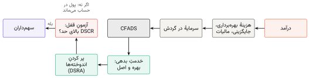
مفهومهای تأمینِ مالی (هر کدام مفهوم است، نه نسخهٔ معامله):
- سهام (equity): پولِ مالکان؛ آخر از همه برمیگردد و بیشترین ریسک و بازده را دارد.
- بدهیِ ارشد (senior debt): اول از همه بازپرداخت میشود؛ بهره و کارمزد دارد؛ مدت (tenor) و شکلِ بازپرداخت (قسطِ برابر یا تراشیده) در شرطنامه میآیند.
- سرمایهٔ ترکیبی (mezzanine، وامِ سهامداران): میانِ این دو، با بازده و ریسکِ میانه.
- اندوختهها: اندوختهٔ خدمتِ بدهی (DSRA)، اندوختهٔ نگهداری (MRA)، اندوختهٔ برچیدن.
- بازتأمینِ مالی (refinancing): جایگزینیِ وام با وامی ارزانتر یا بلندتر پس از کاهشِ ریسک (پس از ساخت)؛ فرصتی برای سهام، نه چیزی که در حالتِ پایه فرض شود.
21.7.2 نسبتهای پوشش: تعریفهای دقیق
جریانِ نقدِ در دسترس برای خدمتِ بدهی در این مدل:
\[ \text{CFADS}_t = \text{Rev}_t - \text{Opex}_t - \text{Repl}_t - \text{Tax}_t - \Delta\text{WC}_t - \text{Decom}_t \tag{21.9}\]
نسبتِ پوششِ خدمتِ بدهی و نسبتِ پوششِ عمرِ وام:
\[ \text{DSCR}_t = \frac{\text{CFADS}_t}{I_t + P_t}, \qquad \text{LLCR}_t = \frac{\sum_{k=t}^{n_\text{d}} \text{CFADS}_k\,(1+r_\text{d})^{-(k-t+1)}}{B_t} \tag{21.10}\]
که \(I_t\) و \(P_t\) بهره و اصلِ برنامهریزیشده، \(B_t\) ماندهٔ وام در آغازِ سال و \(r_\text{d}\) نرخِ وام است.
تعریفِ CFADS (آیا مالیات، جایگزینی، تغییرِ سرمایهٔ در گردش، برداشت از اندوختهها را دربر میگیرد؟)، دورهٔ نسبت (سالانه، ششماهه، دوازدهماههٔ گذشته یا آینده) و نرخِ تنزیلِ LLCR را قراردادِ وام تعیین میکند. تعریفهای بالا تعریفهای آموزشیِ این مدلاند؛ هر مدلِ واقعی باید تعریفهای سندِ معامله را کلمه به کلمه پیاده کند.
def annuity_debt(principal: float, rate: float, tenor: int):
"""Level payments: returns (interest, principal, balance at start)."""
pay = principal * rate / (1 - (1 + rate) ** -tenor)
bal = principal
i_, p_, b_ = [], [], []
for _ in range(tenor):
b_.append(bal)
i = bal * rate
i_.append(i)
p_.append(pay - i)
bal -= pay - i
return np.array(i_), np.array(p_), np.array(b_)
def sculpted_debt(cfads, target_dscr: float, rate: float):
"""Debt service = CFADS / target DSCR each year; the debt it can
repay is the PV of that service. Returns (debt, interest,
principal, balance at start)."""
ds = np.asarray(cfads, float) / target_dscr
debt = pv(ds, rate)
bal = debt
i_, p_, b_ = [], [], []
for d in ds:
b_.append(bal)
i = bal * rate
i_.append(i)
p_.append(d - i)
bal -= d - i
return debt, np.array(i_), np.array(p_), np.array(b_)def dscr(cfads, debt_service) -> np.ndarray:
"""Debt service cover ratio per period: CFADS / scheduled debt
service (periods without debt service give nan)."""
cf, ds = np.asarray(cfads, float), np.asarray(debt_service, float)
return np.where(ds > 0, cf / np.where(ds > 0, ds, 1.0), np.nan)
def llcr(cfads, balance_start, rate: float, tenor: int) -> np.ndarray:
"""Loan life cover ratio at the start of each loan year: PV of the
CFADS of the remaining loan life at the debt rate / debt outstanding."""
cf = np.asarray(cfads, float)
out = np.full(tenor, np.nan)
for k in range(tenor):
if balance_start[k] > 1e-9:
out[k] = pv(cf[k:tenor], rate) / balance_start[k]
return out- ترتیبِ آبشارِ جریانِ نقد را بنویسید.
- پنج مفهومِ تأمینِ مالی را تعریف کنید.
- معادلهٔ 21.9 را با شش جزئش بنویسید.
- چرا LLCR برای وامِ تراشیده در آغاز برابرِ DSCR هدف است؟
- چه چیزهایی در تعریفِ CFADS باید از سندِ معامله خوانده شود؟
21.7.3 مثالِ کارشدهٔ ۲: جدولِ دوره به دورهٔ خدمتِ بدهی
ایده. همهٔ تعریفها اینجا یک جا اجرا میشوند: برای هر سالِ وام، CFADS، بهره، اصل، خدمت، DSCR، LLCR و مانده. سپس یک سال را با دست و با یک بازمحاسبهٔ مستقل وارسی میکنیم.
base case debt schedule (k u, nominal; A-307..A-309):
yr CFADS interest principal service DSCR LLCR balance
1 13,837 7,261 4,253 11,514 1.20 1.30 121,025
2 16,106 7,006 4,695 11,701 1.38 1.31 116,772
3 16,237 6,725 5,166 11,891 1.37 1.31 112,078
4 16,364 6,415 5,668 12,083 1.35 1.30 106,912
5 16,487 6,075 6,204 12,278 1.34 1.29 101,243
6 16,604 5,702 6,774 12,477 1.33 1.29 95,039
7 16,716 5,296 7,382 12,678 1.32 1.28 88,265
8 16,288 4,853 7,476 12,329 1.32 1.27 80,883
9 16,931 4,404 8,685 13,089 1.29 1.27 73,407
10 17,024 3,883 9,416 13,299 1.28 1.26 64,722
11 17,110 3,318 10,194 13,513 1.27 1.26 55,306
12 15,711 2,707 9,497 12,204 1.29 1.25 45,111
13 16,673 2,137 11,186 13,323 1.25 1.24 35,614
14 17,348 1,466 12,706 14,171 1.22 1.23 24,428
15 15,491 703 11,723 12,426 1.25 1.25 11,723
min DSCR 1.20 (year 1), average 1.30, min LLCR 1.23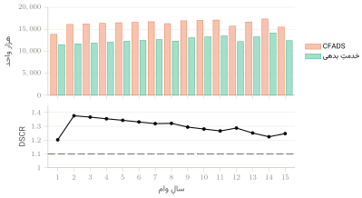
مثال 21.50 (سال به سال) پرسش. (۱) کمینه و میانگینِ DSCR و کمینهٔ LLCR چیست؟ (۲) DSCR سالِ اول را با دست حساب کنید. (۳) چرا خدمت در سالهای ۸، ۱۲ و ۱۵ پایین میآید؟ (۴) آیا بدهی تا پایانِ سالِ ۱۵ صفر میشود؟
پاسخ.
- کمینهٔ DSCR 1.20 در سالِ ۱، میانگین 1.30، کمینهٔ LLCR 1.23.
- سالِ اول:
\[ \text{CFADS}_1 = 20{,}453 - 4{,}270 - 0 - 175 - 2{,}171 = 13{,}837 \]
\[ I_1 = 121{,}025 \times 0.06 = 7{,}261, \qquad \text{DSCR}_1 = \frac{13{,}837}{11{,}514} = 1.202 \]
- بازپرداخت روی حالتِ اندازهگیری تراشیده شده است: در سالهایی که جایگزینی دارند (۸، ۱۲، ۱۳، ۱۵) CFADS حالتِ اندازهگیری کمتر است و خدمت هم کمتر.
- بله: جمعِ اصلها 121,025 است و ماندهٔ آغازِ سالِ ۱۵ (11,723) همان اصلِ آن سال.
تفسیر. سالِ اول کمترین پوشش را دارد چون سرمایهٔ در گردش (2,171) از پولِ همان سال ساخته میشود؛ در شرطنامهٔ واقعی ممکن است تسهیلاتِ سرمایهٔ در گردش جدا باشد. وارسی مستقل: تابعِ جدایی که DSCR را از ردیفهای خامِ درآمد، هزینه، مالیات، سرمایهٔ در گردش، بهره و اصل دوباره میسازد، همان عددها را میدهد و پنج بررسیِ خودکار همه PASS هستند (بخش 21.5.1).
- DSCR سالِ دوم را از جدول با دست وارسی کنید.
- چرا LLCR نزدیکِ میانگینِ DSCR باقیمانده است؟
- «بازمحاسبهٔ مستقل» با «بررسیِ خودکارِ مدل» چه فرقی دارد؟
- اگر تسهیلاتِ سرمایهٔ در گردشِ جدا داشتیم، DSCR سالِ اول چه میشد؟
21.7.4 اندازهٔ بدهی: پوششِ هدف، مدت، نرخ و شکلِ بازپرداخت
ایده. وامدهنده میپرسد: «جریانِ نقدِ این نیروگاه، با حاشیهٔ اطمینانی که میخواهم، چقدر وام را بازپرداخت میکند؟» اگر خدمتِ هر سال را برابرِ CFADS تقسیم بر پوششِ هدف بگیریم، بیشترین وام ارزشِ فعلیِ همان خدمتها با نرخِ وام است:
\[ D_\text{max} = \sum_{t=1}^{n_\text{d}} \frac{\text{CFADS}_t / \text{DSCR}_\text{target}}{(1+r_\text{d})^t} \tag{21.11}\]
این همان بازپرداختِ تراشیده (به انگلیسی sculpted) است: خدمت شکلِ جریانِ نقد را دنبال میکند. اندازه روی چند حالت (مثلاً P50 با 1.30 و P90 یکساله با 1.20) حساب میشود و کمترینِ آنها، همراه با سقفِ اهرم، تعیینکننده است. همهٔ این هدفها نمونهایاند (A-308).
debt that the cash flows support (sculpted, P90 1-yr case):
target DSCR tenor yr rate % debt k u gearing %
1.20 15 6.0 121,025 71.1
1.30 15 6.0 111,715 65.6
1.20 12 6.0 103,325 60.7
1.20 18 6.0 127,641 75.0 (cap)
1.20 15 8.0 106,281 62.4
(gearing against the base-case uses; capped at 75 %)
a higher target, a shorter tenor or a dearer rate each cut
the debt by 8-15 %: the equity must fill the gap, and the
equity return falls; none of these numbers is a market
standard - each comes from the term sheet (A-307)مثال 21.51 (سه اهرمِ اندازهٔ وام) پرسش. اگر پوششِ هدف از 1.20 به 1.30 برود، مدت از ۱۵ به ۱۲ سال کم شود، یا نرخ از 6 به 8 % برسد، بدهی چه میشود؟ مدتِ ۱۸ ساله چه؟
پاسخ. 121,025 پایه؛ پوششِ 1.30: 111,715 (−7.7 %)؛ ۱۲ سال: 103,325 (−14.6 %)؛ نرخِ 8 %: 106,281 (−12.2 %). ۱۸ سال: سقفِ اهرمِ 75 % (127,641) تعیینکننده میشود.
تفسیر. هر کدام از این سه شرط بدهی را چند ده میلیون جابهجا میکند و شکاف را سهام پر میکند؛ پس مذاکرهٔ شرطنامه به اندازهٔ مهندسی بر بازدهِ سهام اثر دارد. وارسی: با معادلهٔ 21.11 و CFADS ثابتِ 150 در ۱۰ سال، پوششِ 1.25 و 6 %: 883.2 (P09).
تراشیده یا قسطِ برابر. با قسطِ برابر (به انگلیسی annuity) خدمت هر سال یکی است، ولی جریانِ نقد نه (تعرفهٔ شاخصدار رشد میکند، جایگزینیها در سالهای خاص میآیند)؛ پس ضعیفترین سال اندازهٔ وام را تعیین میکند.
the same debt repaid as an annuity or sculpted to the cash flow:
shape min DSCR year of min max DSCR min LLCR
sculpted 1.20 1 1.38 1.23
annuity 1.11 1 1.39 1.24
largest annuity debt at DSCR 1.20 on P90: 111,827 k u
(92 % of the sculpted debt)
an annuity is level while the cash flow is not (indexed
tariff, replacement years): its weakest year sets the debt;
sculpting matches service to cash flow and carries more debt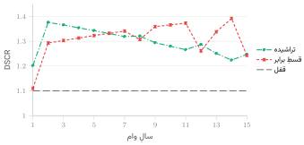
مثال 21.52 (92 % بدهی با قسطِ برابر) پرسش. همان بدهیِ 121,025 با قسطِ برابر چه کمینهٔ پوششی دارد؟ بیشترین وامِ قسطِ برابر با پوششِ 1.20 روی P90 چقدر است؟
پاسخ. کمینه 1.11 در سالِ ۱ (در برابرِ 1.20 تراشیده)؛ بیشترین وامِ قسطِ برابر 111,827: 92 % وامِ تراشیده.
تفسیر. تراشیدن وام را با توانِ بازپرداخت همشکل میکند و بدهیِ بیشتری را حمل میکند؛ هزینهاش این است که پوشش در هیچ سالی حاشیهٔ اضافه ندارد. وامدهندگان گاه پوششِ میانگین یا LLCR کمینه را هم شرط میگذارند تا تراشیدنِ بیش از حد را محدود کنند.
- معادلهٔ 21.11 را برای CFADS ثابتِ 150 در ۸ سال، پوششِ 1.25 و 6 % حساب کنید.
- سه شرطِ شرطنامه را که اندازهٔ بدهی را تغییر میدهند نام ببرید.
- چرا قسطِ برابر بدهیِ کمتری را حمل میکند؟
- چرا وامدهندگان تراشیدنِ بیش از حد را محدود میکنند؟
21.7.5 تعهدها، قفلِ توزیع و اندوختهها
ایده. پس از امضا، وامدهندگان با تعهدهای مالی (به انگلیسی financial covenants) سلامتِ پروژه را میپایند. دو سطحِ رایج (مقدارها نمونهای):
- قفلِ توزیع (lock-up): اگر DSCR زیرِ 1.10 برود، پولی به سهامداران پرداخت نمیشود و در حساب میماند تا پوشش بهتر شود.
- نکول (event of default): اگر زیرِ 1.05 برود، وامدهندگان حق دارند اقدام کنند (از درخواستِ برنامهٔ اصلاح تا تسریعِ بازپرداخت).
حاشیهٔ تعهد (به انگلیسی covenant headroom) فاصلهٔ پوششِ مورد انتظار تا این سطحهاست و نشان میدهد پروژه چه اندازه بدشانسی را تاب میآورد.
covenant headroom of the base case (illustrative levels):
min DSCR 1.20; lock-up below 1.10, default below 1.05
headroom to lock-up 0.10, to default 0.15
energy (all years) at which the min DSCR hits lock-up: 92.5 % of P50
... and default: 89.3 % of P50 (P90 1-yr is 93.5 %)
lock-up stops distributions to the owners until the cover
recovers; default lets the lenders act; the DSRA pays the
service for six months while the cause is fixedمثال 21.53 (چقدر انرژی میتواند کم شود) پرسش. حاشیهٔ تا قفل و تا نکول چیست؟ اگر انرژیِ همهٔ سالها کم شود، از چه سطحی قفل و از چه سطحی نکول رخ میدهد؟
پاسخ. حاشیه 0.10 تا قفل و 0.15 تا نکول. قفل در 92.5 % و نکول در 89.3 % انرژیِ P50 (در برابرِ P90 یکسالهٔ 93.5 %).
تفسیر. سالی که P90 باشد قفل نمیکند؛ چند سالِ پشتِ سرِ هم در حدودِ 92 % قفل میکند. DSRA شش ماه خدمت را میپردازد تا علت (خرابی، کاهشِ تولید، تأخیرِ خریدار) رفع شود؛ اندوختهٔ مصرفشده باید دوباره پر شود. اندوختهٔ نگهداری (MRA) پول را پیش از جایگزینیهای بزرگ کنار میگذارد تا آن سال پوشش فرو نریزد. وارسی: خروجیِ بالا با جستوجوی دوبخشی روی مدلِ کامل به دست آمده است.
- قفلِ توزیع و نکول را از هم جدا کنید.
- حاشیهٔ تعهد چه چیزی را نشان میدهد؟
- DSRA و MRA هر کدام چه ریسکی را میپوشانند؟
- چرا بازتأمینِ مالی در حالتِ پایه فرض نمیشود؟
21.7.6 پوششِ نرخ، بازتأمینِ مالی و P90 دهساله
پوششِ نرخ. وامِ شناور نرخش با نرخِ پایهٔ بازار تغییر میکند. سوآپ (به انگلیسی interest rate swap) آن را با هزینهای کوچک ثابت میکند.
floating rate against a swap (debt fixed at the base amount):
path floating all-in % min DSCR float min DSCR swap
rates fall 4.5 1.25 1.18
rates flat 6.0 1.20 1.18
rates rise 8.5 0.96 1.18
equity IRR with the swap 9.99 % in every path
the swap gives up the gain of falling rates to remove the
loss of rising ones: lenders usually require most of the
debt hedged, because a rise breaks the coverمثال 21.54 (سودِ کاهش را میدهد، زیانِ افزایش را برمیدارد) پرسش. با سه مسیرِ نرخِ پایه، کمینهٔ پوششِ وامِ شناور و وامِ سوآپشده (6.2 %) چیست؟
پاسخ. شناور: کاهش 1.25، ثابت 1.20، افزایش (8.5 %) 0.96. سوآپ: 1.18 در هر سه، با بازدهِ سهامِ 9.99 %.
تفسیر. سوآپ سودِ کاهشِ نرخ را میدهد تا زیانِ افزایش را بردارد؛ افزایشِ 2.5 واحد پوششِ وامِ شناور را زیرِ 1.00 میبرد. به همین دلیل وامدهندگان معمولاً پوششِ بیشترِ بدهی را شرط میگذارند (شرطِ پیشین، جدول 21.5)؛ هزینهٔ سوآپ (0.2 واحد) بازده را 0.23 واحد کم کرده است.
بازتأمینِ مالی. پس از ساخت و یکیدو سال کارِ موفق، ریسک کمتر است و ممکن است وامی ارزانتر یا بلندتر در دسترس باشد.
refinancing after two years (5 %, new 15 years, DSCR 1.30, fee 1 %):
debt outstanding 112,078 k u; new debt 132,813
released to owners 19,407 k u at the start of year 3
equity IRR 10.22 % -> 11.89 % (with the new service to year 17)
refinancing is an upside the owner may take when the market
allows; the base case never assumes it, and lenders limit itمثال 21.55 (بالارفتنِ بازده با وامِ تازه) پرسش. بازتأمین پس از دو سال با 5 % و ۱۵ سالِ تازه چه پولی آزاد میکند و بازدهِ سهام را چگونه تغییر میدهد؟
پاسخ. ماندهٔ وام 112,078؛ وامِ تازه 132,813؛ آزادشده 19,407 هزار؛ بازدهِ سهام از 10.22 به 11.89 % (با خدمتِ تازه تا سالِ ۱۷).
تفسیر. بازتأمین یک فرصت است که بازار تعیین میکند؛ حالتِ پایه هرگز آن را فرض نمیکند و شرطنامهٔ اول ممکن است آن را محدود کند (جریمهٔ پیشپرداخت، رضایتِ وامدهنده). بخشی از سودِ آن از بلندترشدنِ وام است، یعنی ریسکِ بیشتر در سالهای پایانی.
P90 یکساله یا دهساله.
sizing on a one-year or a ten-year P90 (DSCR 1.20, sculpted):
case P90 / P50 debt k u gearing %
one-year P90 0.935 121,025 71.1
ten-year P90 0.949 121,999 71.6
the ten-year P90 is higher because yearly variation averages
out (ch 16); which one is used, and at which cover, is the
lenders' choice - the one-year P90 protects a single bad
year, the ten-year one the loan as a wholeمثال 21.56 (کدام P90) پرسش. اندازهٔ بدهی با P90 یکساله و دهساله چه فرقی دارد؟
پاسخ. یکساله 0.935 و 121,025؛ دهساله 0.949 و 121,999 (اهرمِ 71.1 در برابرِ 71.6 %).
تفسیر. P90 دهساله بالاتر است چون تغییرِ سالبهسال در ده سال میانگین میشود (فصلِ ۱۶)؛ اما سالِ بدِ تنها را نمیپوشاند. اینجا تفاوت کوچک است چون پوششِ 1.20 روی P90 یکساله تعیینکننده است؛ انتخاب با وامدهنده است و باید در شرطنامه صریح باشد.
- وامِ شناور و سوآپ را از هم جدا کنید.
- چرا وامدهندگان پوششِ نرخ را شرط میگذارند؟
- سودِ بازتأمین از کجا میآید و چه ریسکی دارد؟
- چرا P90 دهساله از یکساله بالاتر است؟
21.7.7 سازوکارهای مالی: قفل، استهلاک، سرمایهٔ در گردش، برداشت، افزایشِ هزینه و حالتِ وامدهنده
قفلِ توزیع در عمل. در بخش 21.7.5 قفل را تعریف کردیم. در مدل، پولِ سالِ قفل بهجای توزیع در حساب میماند و نخستین سالی که آزمون پاس شود (یا با آخرین قسط) آزاد میشود:
def with_lockup(r: dict) -> np.ndarray:
"""Equity cash flow when distributions stop in every loan year with
DSCR below the lock-up level; trapped cash is paid out in the first
later year that passes the test (or with the last debt payment)."""
nd = T["tenor"]
eq = r["cfads"] - r["ds"]
out = eq.copy()
trapped = 0.0
for t in range(nd):
if r["dscr"][t] < T["lockup"]:
trapped += max(out[t], 0.0)
out[t] = min(out[t], 0.0)
elif trapped:
out[t] += trapped
trapped = 0.0
out[nd - 1] += trapped + r["dsra"]
ph = T["construction"]
return np.concatenate([[-r["equity"] * ph[0], -r["equity"] * ph[1]], out])cash trapped by the lock-up test (combined downside, no delay):
lock-up years 6 of 15
equity IRR, distributions as earned: 5.62 %
equity IRR, cash trapped and released later: 5.59 %
the cash is not lost, only late (the owners lose a little
time value here); the lenders keep it in the project while
the cover is weak, which is the purpose of the testمثال 21.57 (پولی که دیر میرسد) پرسش. در حالتِ ترکیبیِ بیتأخیر، چند سال قفل است و بازدهِ سهام با و بی نگهداشتِ پول چیست؟
پاسخ. ۶ سال از ۱۵؛ بازدهِ سهام 5.62 بی نگهداشت و 5.59 % با نگهداشت.
تفسیر. پول از دست نمیرود، دیر میرسد؛ زیانِ سهامداران فقط ارزشِ زمانیِ آن است. هدفِ آزمون این است که وقتی پوشش ضعیف است، پول در پروژه بماند تا اگر وضع بدتر شد، خدمتِ بدهی را بپوشاند.
نمایهٔ استهلاک. کلِ استهلاک ثابت است (هزینه، بهرهٔ دورهٔ ساخت و کارمزد)، اما زمانبندیاش مالیات را جابهجا میکند:
depreciation profile and tax timing (teaching tax rate 25 %):
profile equity IRR % min DSCR tax yrs 1-5 k u
straight line 20 yr 10.22 1.20 2,255
declining balance 10 % 10.55 1.15 0
accelerated 5 yr 10.84 1.08 0
the same total depreciation, earlier: less tax in the first
years and more later - the owners gain through time value,
but the tax returns inside the loan life and the cover falls
to 1.08: lenders size on the real tax profile; which profile
is allowed is tax law (U-083), never assumedمثال 21.58 (سودِ سهام، زیانِ پوشش) پرسش. با استهلاکِ خطیِ ۲۰ ساله، نزولیِ 10 % و تسریعشدهٔ ۵ ساله، بازدهِ سهام و کمینهٔ پوشش چه میشوند؟
پاسخ. خطی 10.22 % و 1.20؛ نزولی 10.55 % و 1.15؛ تسریعشده 10.84 % و 1.08. مالیاتِ سالهای ۱ تا ۵ در دو حالتِ آخر صفر است.
تفسیر. استهلاکِ زودتر مالیاتِ سالهای نخست را کم و مالیاتِ سالهای بعد را زیاد میکند. سهامداران از ارزشِ زمانی سود میبرند، اما مالیاتِ بازگشته در میانهٔ عمرِ وام پوشش را تا 1.08 پایین میآورد؛ پس وامدهنده بدهی را با نمایهٔ واقعیِ مالیات اندازه میکند. کدام نمایه مجاز است، قانونِ مالیاتیِ کشورِ پروژه است (U-083)؛ این کتاب هیچکدام را فرض نمیکند.
روزهای وصول. هرچه خریدار دیرتر بپردازد، بخشی از درآمد به وامی به خریدار تبدیل میشود:
receivable days and the year-1 cover:
days WC built yr 1 k u min DSCR equity IRR %
30 1,330 1.23 10.36
45 2,171 1.20 10.22
90 4,692 0.98 9.82
a slow-paying buyer turns revenue into a loan to the buyer:
the first year carries it; payment terms are a PPA clauseمثال 21.59 (نود روز) پرسش. با ۳۰، ۴۵ و ۹۰ روزِ وصول، سرمایهٔ در گردشِ سالِ اول و کمینهٔ پوشش چیست؟
پاسخ. 1,330، 2,171 و 4,692 هزار؛ پوشش 1.23، 1.20 و 0.98.
تفسیر. پرداختِ ۹۰ روزه سالِ اول را زیرِ 1.00 میبرد. شرطِ پرداخت یک بندِ قراردادِ خرید است (جدول 21.4) و تسهیلاتِ سرمایهٔ در گردش (اگر باشد) این بار را از سالِ اول برمیدارد.
ترتیبِ برداشت در ساخت.
equity first or pro rata during construction:
pro rata: IDC 6,165 k u; equity paid 40/60 over two years
equity first: IDC about 4,024 k u; equity paid in year -1
equity first saves interest but asks the owners for their
money earlier (their return falls); lenders like it because
the owners' money is at risk before theirsمثال 21.60 (اول سهام) پرسش. با برداشتِ «اول سهام» بهجای «متناسب»، بهرهٔ دورهٔ ساخت چه میشود؟ چرا وامدهندگان آن را ترجیح میدهند؟
پاسخ. حدودِ 4,024 بهجای 6,165 هزار؛ سهام همه در سالِ ۱− پرداخت میشود.
تفسیر. بهره کمتر است چون وام دیرتر برداشت میشود؛ اما سهامداران پولشان را زودتر میدهند و بازدهشان کم میشود. وامدهندگان «اول سهام» را دوست دارند چون پولِ مالک پیش از پولِ آنها در خطر است؛ گاه بهجای آن تعهدِ سهامِ پشتیبانیشده (ضمانتنامه) میپذیرند.
افزایشِ هزینه، لایه به لایه.
funding a cost overrun layer by layer (k u):
contingency inside the budget 7,450; standby equity 4,916
overrun % from contingency standby equity left to fund
3 4,470 0 0
8 7,450 4,470 0
15 7,450 4,916 9,984
beyond both layers the project needs new money before the
lenders release more: a cost-overrun facility or sponsor
support - agreed at financial close, not when it happensمثال 21.61 (پانزده درصد) پرسش. افزایشِ 3، 8 و 15 % در هزینهٔ پیش از احتیاط از کدام لایهها تأمین میشود؟
پاسخ. 3 %: همه از احتیاط (4,470)؛ 8 %: احتیاطِ کامل و 4,470 از سهامِ آمادهباش؛ 15 %: هر دو لایه و 9,984 هزار بیمنبع.
تفسیر. لایهها در بستنِ مالی توافق میشوند، نه هنگامِ بحران: احتیاط، سهامِ آمادهباش، تسهیلاتِ افزایشِ هزینه، و پشتیبانیِ مالک. بیمنبع ماندنِ 10 میلیون در میانهٔ ساخت یعنی توقفِ برداشتِ وام.
حالتِ وامدهنده. وامدهنده حالتِ خودش را میسازد: ورودیهایی را که خوشبینانه میداند کمی بدتر میکند.
the lenders' case against the sponsor's (teaching haircuts):
lenders add 10 % to opex, 1 % more curtailment, 1 % less
energy and size on a price 3 % lower:
sponsor case: debt 121,025, equity IRR 10.22 %
lenders' case: debt 116,205, equity IRR 8.91 % (if the haircuts come true)
the debt follows the lenders' case, not the sponsor's: every
optimistic input the lenders do not accept becomes equityمثال 21.62 (هر خوشبینی سهام میشود) پرسش. با کاهشهای آموزشیِ وامدهنده، بدهی چقدر کم میشود؟
پاسخ. از 121,025 به 116,205 هزار؛ اگر کاهشها واقعاً رخ دهند، بازدهِ سهام 8.91 %.
تفسیر. بدهی حالتِ وامدهنده را دنبال میکند، نه حالتِ مالک را؛ هر ورودیِ خوشبینانهای که وامدهنده نپذیرد، به سهام تبدیل میشود. پس شاهدِ هر ورودی (جدول 21.5) مستقیماً پول است.
- پولِ سالِ قفل کجا میرود و کِی آزاد میشود؟
- چرا استهلاکِ تسریعشده پوششِ سالهای میانی را کم میکند؟
- پرداختِ ۹۰ روزه چه اثری بر سالِ اول دارد؟
- «اول سهام» چه سود و هزینهای برای هر طرف دارد؟
- چهار لایهٔ تأمینِ افزایشِ هزینه را به ترتیب بنویسید.
- چرا «حالتِ وامدهنده» بدهی را تعیین میکند؟
21.7.8 اندوخته با اعتبارِ اسنادی، و تمدیدِ عمر
اندوختهٔ خدمتِ بدهی با اعتبارِ اسنادی. بهجای اینکه پولِ نقدِ DSRA در حساب بخوابد، بانکی معتبر اعتبارِ اسنادی میدهد و مالک کارمزدِ سالانه میپردازد.
DSRA held as a letter of credit instead of cash:
cash DSRA 5,757 k u; LC fee 2 % a year = 115 k u
equity IRR 10.22 % -> about 10.29 %
the owners keep their money at work and pay a fee; the
lenders accept an LC from a bank they rate - a credit
question, not a modelling oneمثال 21.63 (کارمزد در برابرِ پولِ خوابیده) پرسش. با کارمزدِ 2 %، بازدهِ سهام چه تغییری میکند؟
پاسخ. کارمزد 115 هزار در سال؛ بازدهِ سهام از 10.22 به حدودِ 10.29 %.
تفسیر. سودِ کوچک ولی قطعی است؛ پرسشِ اصلی اعتباری است: وامدهندگان فقط اعتبارِ اسنادیِ بانکی را میپذیرند که رتبهاش را قبول دارند، و اگر رتبهٔ بانک افت کند، باید جایگزین شود.
تمدیدِ عمر. پس از ۲۵ سال، ممکن است نیروگاه با نوسازی پنج سالِ دیگر کار کند:
life extension to 30 years (k u, PV at 7.5 % to today):
refurbishment in year 25 22,638; cash flow years 26-30 13,812 a year
NPV of the extension today 5,419
far-off cash flows are worth little today and the merchant
price is uncertain: an extension is an option for later,
decided on the plant's condition (ch 53), not a base caseمثال 21.64 (ارزشِ دور) پرسش. با نوسازیِ 8 % هزینهٔ سرمایهای در سالِ ۲۵ و قیمتِ بازار، ارزشِ فعلیِ تمدید امروز چیست؟
پاسخ. نوسازی 22,638 هزار در سالِ ۲۵؛ جریانِ نقدِ سالهای ۲۶ تا ۳۰ حدودِ 13,812 در سال؛ ارزشِ فعلیِ امروز 5,419.
تفسیر. تمدید مثبت است ولی دور و نامطمئن (قیمتِ بازارِ سی سال بعد، وضعِ سازهها و مجوزها)؛ پس اختیاری برای آینده است که با وضعِ واقعیِ نیروگاه در سالهای پایانی (فصلِ ۵۳) تصمیمگیری میشود، نه بخشی از حالتِ پایه یا اندازهٔ بدهی. وارسی: ضریبِ تنزیلِ سالِ ۲۵ با 7.5 % حدودِ 0.164 است.
- اعتبارِ اسنادی چه چیزی را جایگزینِ پولِ نقدِ اندوخته میکند؟
- چه ریسکی با اعتبارِ اسنادی میآید؟
- چرا تمدیدِ عمر در حالتِ پایه نمیآید؟
21.7.9 وامِ ارزی، و قراردادِ نگهداریِ کامل یا پایه
وامِ ارزی. وام به ارزِ سخت اغلب ارزانتر است، اما اگر درآمد به پولِ محلی باشد و پولِ محلی هر سال ضعیفتر شود، خدمتِ بدهی به پولِ محلی هر سال بزرگتر میشود.
a hard-currency loan (4.5 %) against a local one (6 %), annuity:
year DSCR local loan DSCR hard loan (local money -3 %/yr)
1 1.11 1.19
5 1.32 1.26
10 1.37 1.12
15 1.24 0.88
the cheaper loan starts with better cover and ends below 1:
a currency that slides moves the debt service up every year;
only revenue in (or indexed to) the same currency matches itمثال 21.65 (وامی که ارزانتر شروع و گرانتر تمام میشود) پرسش. با قسطِ برابر، DSCR وامِ محلیِ 6 % و وامِ ارزیِ 4.5 % (با افتِ سالانهٔ 3 % پولِ محلی) در سالهای ۱، ۵، ۱۰ و ۱۵ چیست؟
پاسخ. محلی: 1.11، 1.32، 1.37، 1.24؛ ارزی: 1.19، 1.26، 1.12، 0.88.
تفسیر. وامِ ارزی با پوششِ بهتر آغاز و زیرِ 1 تمام میشود. ریسکِ ارز را فقط همارز بودنِ درآمد و بدهی حذف میکند (تعرفهٔ وابسته به ارز یا وامِ محلی)؛ پوششِ ارزی برای ۱۵ سال اغلب گران یا در دسترس نیست. وارسی: خدمتِ سالِ ۱۵ به پولِ محلی \(1.03^{15} = 1.56\) برابرِ قسطِ ارزی است.
نگهداریِ کامل یا پایه.
full-service or basic O&M (k u a year, 100,000 draws):
contract mean P90 P99
full service 3,100 3,100 3,100
basic 2,904 4,900 6,300
basic is cheaper on average and dearer in a bad year; the
full-service price buys a flat cost line that lenders value;
the choice also moves the availability guarantee (section B)مثال 21.66 (قیمتِ یک خطِ صاف) پرسش. قراردادِ کامل 3,100 هزار در سال؛ قراردادِ پایه 1,900 بهاضافهٔ تعمیرها. میانگین و صدکهای ۹۰ و ۹۹ هزینه چیست؟
پاسخ. کامل: 3,100 ثابت. پایه: میانگین 2,904، صدکِ ۹۰ 4,900، صدکِ ۹۹ 6,300.
تفسیر. پایه بهطورِ میانگین 196 هزار ارزانتر ولی در سالِ بد تا دو برابر گرانتر است؛ قراردادِ کامل یک خطِ صافِ هزینه میفروشد که وامدهندگان میپسندند (پوششِ پایدار). همچنین قراردادِ کامل معمولاً با ضمانتِ دسترسپذیری همراه است (مثال 21.13). وارسی: میانگینِ تعمیرها \(2 \times 350 + 0.1 \times 3{,}000 = 1{,}000\).
- چرا وامِ ارزیِ ارزانتر ممکن است خطرناکتر باشد؟
- خدمتِ سالِ ۱۰ به پولِ محلی چند برابرِ قسطِ ارزی است؟
- قراردادِ نگهداریِ کامل چه چیزی میفروشد؟
21.7.10 مقایسهٔ دو شرطنامه، و معافیتِ مالیاتی بهشکلِ حساسیت
دو پیشنهادِ وام. نرخِ اعلامشده فقط یکی از شرطهاست؛ مدت، پوششِ هدف و کارمزد هم اندازهٔ وام و بازدهِ سهام را تعیین میکنند.
two term sheets for the same plant (sculpted on P90 1-yr):
offer debt k u equity IRR % min DSCR
A: 6.0 %, 15 yr, DSCR 1.20, fee 1.5 % 121,025 10.22 1.20
B: 6.5 %, 18 yr, DSCR 1.25, fee 2.0 % 124,378 10.74 1.28
the dearer offer with the longer tenor lends more (up to the
75 % gearing cap) and pays the owners better despite its
rate and fee: compare offers in the model, never by their
headline rateمثال 21.67 (نرخِ بالاتر، پیشنهادِ بهتر) پرسش. پیشنهادِ A (6 %، ۱۵ سال، پوششِ 1.20، کارمزدِ 1.5 %) و B (6.5 %، ۱۸ سال، 1.25، 2 %) را مقایسه کنید.
پاسخ. A: بدهی 121,025، بازدهِ سهام 10.22 %، کمینهٔ پوشش 1.20. B: 124,378 (سقفِ اهرم)، 10.74 %، 1.28.
تفسیر. پیشنهادِ گرانترِ اسمی بهتر است، چون مدتِ بلندتر خدمتِ هر سال را کوچک میکند و هم وامِ بیشتر و هم پوششِ بهتر میدهد. پیشنهادها را در مدل مقایسه کنید، نه با نرخِ سرخط؛ و شرطهای دیگر (پوششِ نرخ، اندوختهها، شرطهای پیشین، جریمهٔ پیشپرداخت) را هم بخوانید.
معافیتِ مالیاتی (فقط حساسیت).
a five-year tax holiday as a LABELLED SENSITIVITY (no scheme
is assumed to exist in any country; U-083):
tax of years 1-5 in the base case 2,255 k u
equity IRR 10.22 % -> 10.50 % if the holiday applied
small here because early taxes are small (depreciation and
interest shield them); never in the base case or the debt
sizing until the law, eligibility and approval are in handمثال 21.68 (معافیتی که کم میارزد) پرسش. اگر (فرضاً) پنج سال معافیتِ مالیاتی باشد، بازدهِ سهام چه میشود؟ چرا اثر کوچک است؟
پاسخ. مالیاتِ پنج سالِ اول 2,255 هزار؛ بازدهِ سهام از 10.22 به 10.50 %.
تفسیر. در سالهای نخست استهلاک و بهرهٔ بزرگ سود را کوچک میکنند و مالیات در هر حال کم است؛ پس معافیتِ کوتاه کم میارزد (برخلافِ معافیتِ بلند یا اعتبارِ مالیاتیِ سرمایهگذاری). مهمتر: هیچ انگیزهای در این کتاب موجود فرض نمیشود؛ تا قانون، شرایطِ برخورداری و تأییدِ آن در دست نباشد (U-083)، نه در حالتِ پایه میآید و نه در اندازهٔ بدهی.
- چهار شرطِ شرطنامه را که باید با هم مقایسه شوند نام ببرید.
- چرا پیشنهادِ B با نرخِ بالاتر بهتر است؟
- چرا معافیتِ مالیاتیِ کوتاه در سالهای نخست کم میارزد؟
21.8 ز. بانکپذیری، بررسیِ دقیق و آزمایشگاهِ تنش
21.8.1 حالتهای تنش با بدهیِ ثابت
ایده. پس از بستنِ مالی، بدهی ثابت است. وامدهنده میپرسد: اگر یکی از ریسکهای شناختهشده رخ دهد، پوشش و بازدهِ سهام چه میشوند؟ هر حالتِ تنش یک ورودی را بد میکند و بقیه را پایه نگه میدارد:
def stresses(debt: float) -> list[tuple[str, dict]]:
"""One-at-a-time downsides; the debt is the one signed at close."""
return [
("base", {}),
("delay 1 year", {"delay_years": 1}),
("capex +10 %", {"capex_scale": 1.10}),
("energy P90 1-yr every year", {"energy_scale": src.P90_1Y}),
("energy P99 1-yr every year", {"energy_scale": 260.0 / 295.14}),
("tariff -10 %", {"price_scale": 0.90}),
("buyer pays 6 months late", {"default_months": 6.0}),
("currency -10 % on capex", {"fx_capex": 0.0778}),
("rate +2 points (unhedged)", {"rate": T["rate"] + 0.02}),
("replacements x 2", {"repl_scale": 2.0}),
("water shortage (PV -1 %)",
{"energy_scale": 1 - 0.01 * 108.36 / 295.14}),
("curtailment +4 %", {"curtail_extra": 0.04}),
]stress cases with the debt fixed at close (k u, nominal):
case min DSCR min LLCR lock-up equity IRR %
base 1.20 1.23 0 10.22
delay 1 year 1.20 1.23 0 8.70
capex +10 % 1.22 1.25 0 8.10
energy P90 1-yr every year 1.12 1.14 0 8.47
energy P99 1-yr every year 1.03 * 1.06 4 6.94
tariff -10 % 1.06 1.09 3 7.48
buyer pays 6 months late 0.47 * 1.23 1 10.09
currency -10 % on capex 1.22 1.25 0 8.51
rate +2 points (unhedged) 1.01 * 1.24 1 8.14
replacements x 2 1.18 1.23 0 9.89
water shortage (PV -1 %) 1.20 1.23 0 10.12
curtailment +4 % 1.15 1.18 0 9.14
(* below the illustrative default level 1.05; lock-up = years
below 1.10)
a P90 resource in every year keeps the cover above lock-up;
a P99 resource every year, a 10 % lower tariff or an
unhedged rate rise push it into lock-up; a buyer six months
late drops the year's cover below 0.5 - the six-month DSRA is
what pays the lenders that year; capex, currency and delay
hit the owners first because they are paid with equity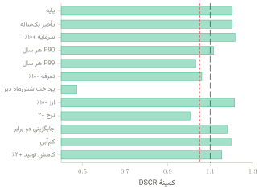
مثال 21.69 (کدام تنش به چه کسی آسیب میزند) پرسش. تنشها را در دو گروه بچینید: آنها که بیشتر به وامدهندگان آسیب میزنند و آنها که بیشتر به سهامداران. کدامها به قفل یا زیرِ نکول میرسند؟
پاسخ. به وامدهندگان (پوشش): منبعِ P99 در هر سال (1.03، ۴ سال قفل)، تعرفهٔ −10 % (1.06، ۳ سال)، نرخِ +2 واحد بی پوشش (1.01)، خریدارِ ششماه دیرکرد (0.47 در همان سال). به سهامداران (بازده): تأخیرِ یکساله (8.70 %)، هزینهٔ سرمایهای +10 % (8.10 %)، افتِ ارز (8.51 %) با پوششِ تقریباً بیتغییر. منبعِ P90 در هر سال پوشش را به 1.12 میرساند ولی قفل نمیکند.
تفسیر. آنچه با پولِ سهام پرداخت میشود (هزینه، ارز، تأخیر) به سهامداران آسیب میزند؛ آنچه درآمدِ سالانه را کم میکند (منبع، قیمت، خریدار) یا خدمت را بالا میبرد (نرخ) به وامدهندگان. ابزارِ هر گروه هم جداست: برای اولی احتیاط، سهامِ آمادهباش، پوششِ ارز و خسارتِ تأخیر؛ برای دومی DSRA، پوششِ نرخ، تضمینِ پرداخت و اندازهٔ بدهی بر P90. وارسی: کمآبی (PV −1 %) و جایگزینیِ دو برابر کوچکترین اثرها را دارند.
a combined downside (P90 every year, tariff -5 %, opex +10 %,
delay 1 year, capex +5 %):
min DSCR 1.01, lock-up years 6, min LLCR 1.04, equity IRR 4.64 %
no single stress breaks the base case, but a plausible
combination keeps the owners locked up for years: lenders
ask for the combined case, the standby equity and the
reserves that carry it (conditions precedent)مثال 21.70 (ترکیبی که هیچکدام تنها نبود) پرسش. P90 در هر سال، تعرفهٔ −5 %، هزینهٔ بهرهبرداریِ +10 %، تأخیرِ یکساله و هزینهٔ سرمایهایِ +5 % با هم: پوشش و بازده چه میشوند؟
پاسخ. کمینهٔ DSCR 1.01، ۶ سال قفل، کمینهٔ LLCR 1.03، بازدهِ سهام 4.64 %.
تفسیر. هیچ تنشِ تنهایی پروژه را نمیشکند، اما ترکیبی واقعبینانه سهامداران را سالها قفل میکند و تا لبهٔ نکول میبرد. وامدهندگان همین حالتِ ترکیبی را میخواهند و برایش سهامِ آمادهباش، اندوخته و شرطهای پیشین میگذارند. وارسی: بازدهِ 4.64 % کمتر از نرخِ وام (6 %) است: در این جهان، اهرم به ضررِ سهام کار میکند.
- چرا در آزمونِ تنش بدهی ثابت است؟
- چهار تنشی که پوشش را به قفل یا پایینتر میبرند نام ببرید.
- چرا هزینهٔ سرمایهای بیشتر به سهامداران آسیب میزند؟
- ابزارهای پوششِ هر گروهِ تنش را بنویسید.
- چرا حالتِ ترکیبی برای وامدهندگان مهمتر از تنشهای تنهاست؟
21.8.2 نقطههای سربهسر: فاصله تا لبه
ایده. بهجای پرسیدنِ «اگر انرژی 10 % کم شود چه؟»، میپرسیم «انرژی چقدر باید کم شود تا پوشش به 1.00 برسد؟». این سربهسر فاصلهٔ پروژه تا لبه را با واحدِ خودِ آن ورودی نشان میدهد و با جستوجوی دوبخشی روی مدلِ کامل به دست میآید.
break-even values (one input moved, others at base):
energy for min DSCR 1.00 (debt fixed): 86.1 % of P50 = 254 GWh
tariff for min DSCR 1.00 (debt fixed): 86.1 % of 70 u = 60.2 u/MWh
capex at which equity earns only the debt rate: +25 %
tariff at which equity earns its 10 % cost (debt resized): 69.5 u/MWh
a lender asks how far the project is from 1.00; an owner
asks how far it is from its cost of equity; both answers
are distances, not single valuesمثال 21.71 (چهار فاصله) پرسش. با بدهیِ ثابت، انرژی و تعرفه در چه سطحی کمینهٔ پوشش را به 1.00 میرسانند؟ هزینهٔ سرمایهای چقدر باید بالا برود تا سهام فقط نرخِ وام را بگیرد؟ با بدهیِ بازاندازهشده، چه تعرفهای بازدهِ سهامِ 10 % میدهد؟
پاسخ. انرژی 85.9 % P50 (254 GWh)؛ تعرفه 60.1 واحد بر مگاواتساعت؛ هزینهٔ سرمایهای +25 %؛ تعرفه برای بازدهِ 10 %: 69.5 واحد.
تفسیر. وامدهنده فاصلهٔ 14 % تا پوششِ 1.00 را با پراکندگیِ منبع (5.1 % در یک سال، فصلِ ۱۶) میسنجد: حدودِ ۲٫۸ انحرافِ معیار. مالک فاصلهٔ کوچکِ تعرفه (۷۰ در برابرِ 69.5) را میبیند: پیشنهادِ تعرفه زیرِ 70 یعنی بازده کمتر از هزینهٔ سهام. سربهسرها فاصلهاند و تصمیم با مقایسهٔ فاصله و عدمِ قطعیت گرفته میشود. وارسی: انرژی و تعرفه یک سربهسر دارند (85.9 %) چون فقط حاصلضربشان درآمد را میسازد.
- سربهسر با حساسیت چه فرقی دارد؟
- فاصلهٔ انرژی تا پوششِ 1.00 چند انحرافِ معیارِ یکساله است؟
- چرا سربهسرِ تعرفه برای مالک مهمتر است؟
- چرا انرژی و تعرفه یک سربهسر دارند؟
21.8.3 شرطهای پیشین و ریسکِ باقیمانده
ایده. پیش از نخستین برداشتِ وام، وامدهندگان فهرستی از شرطهای پیشین (به انگلیسی conditions precedent, CP) میخواهند: سندها، گزارشها، قراردادهای امضاشده و مجوزهایی که باید پیش از پرداخت در دست باشند. این فهرست همان مجموعهٔ شاهدی است که بانکپذیری را میسازد.
CP = [ # (evidence the lenders want, source in this book, status)
("long-term resource and P50/P90 yield report", "ch 12-16", "draft"),
("independent engineer's review of the yield", "ch 16, 59", "open"),
("grid connection agreement and studies", "ch 17, 27-28", "open"),
("permits and environmental consents", "ch 14, 33, 55-57", "open"),
("EPC contract: price, schedule, LDs, security", "ch 38-40", "open"),
("equipment warranties and type certificates", "ch 9-11, 19, 41-46",
"draft"),
("O&M contract with availability guarantee", "ch 51-52", "open"),
("PPA signed, payment security in place", "ch 21 E", "open"),
("insurance programme (construction, operation)", "ch 38, 51", "open"),
("financial model audit (this lab)", "ch 21 D, F", "draft"),
("hedging of rate and currency at close", "ch 21 F", "open"),
("equity committed, standby equity letter", "ch 21 F", "open"),
]conditions precedent to first drawdown (teaching register):
evidence source status
long-term resource and P50/P90 yield report ch 12-16 draft
independent engineer's review of the yield ch 16, 59 open
grid connection agreement and studies ch 17, 27-28 open
permits and environmental consents ch 14, 33, 55-57 open
EPC contract: price, schedule, LDs, security ch 38-40 open
equipment warranties and type certificates ch 9-11, 19, 41-46 draft
O&M contract with availability guarantee ch 51-52 open
PPA signed, payment security in place ch 21 E open
insurance programme (construction, operation) ch 38, 51 open
financial model audit (this lab) ch 21 D, F draft
hedging of rate and currency at close ch 21 F open
equity committed, standby equity letter ch 21 F open
9 of 12 open: the project is not yet bankable whatever its
IRR - bankability is evidence, not a ratioمثال 21.72 (بانکپذیری شاهد است، نه نسبت) پرسش. چند شرطِ پیشین باز است؟ آیا نیروگاهِ P با پوششِ 1.20 و بازدهِ سهامِ 10.2 % «بانکپذیر» است؟
پاسخ. ۹ از ۱۲ باز (و ۳ پیشنویس). نه هنوز: هیچ نسبتی جای قراردادِ خریدِ امضاشده، قراردادِ اتصال، مجوزها، قراردادِ EPC و بررسیِ مهندسِ مستقل را نمیگیرد.
تفسیر. بانکپذیری یعنی هر ستونِ مدل یک شاهد پشتش داشته باشد: انرژی (گزارشِ تولید و بازبینیِ مستقل)، قیمت (قراردادِ خرید)، هزینه (قراردادِ EPC)، زمان (برنامه و خسارت)، بهرهبرداری (قراردادِ نگهداری)، ریسکها (بیمه، پوششها، اندوختهها). ریسکِ باقیمانده، یعنی آنچه پس از همهٔ اینها میماند، باید صریح در گزارش نوشته شود: منبعِ بدتر از P90 برای چند سال، کاهشِ تولیدِ بیجبران، تغییرِ قانونِ پیشبینینشده. وارسی: دفترِ شاهدِ این فصل (PLP-PRJ-REG-0009) همین ۱۲ ردیف را با وضعیت نگه میدارد.
- شرطِ پیشین چیست و چه زمانی باید برآورده شود؟
- شش ستونِ مدل و شاهدِ هر کدام را بنویسید.
- سه ریسکِ باقیماندهٔ نیروگاهِ P را نام ببرید.
- چرا نسبتِ پوششِ خوب جای شاهد را نمیگیرد؟
21.8.4 تأخیرِ ساخت بهشکلِ توزیع، و مبلغِ فسخ
ایده. تأخیر یک عدد نیست: بیشترِ پروژهها بهموقع یا با تأخیرِ کوتاه تمام میشوند و چند پروژه با تأخیرِ بلند. با یک توزیعِ تأخیر (اینجا: 40 % احتمالِ تأخیر و میانهٔ سه ماه، آموزشی) میتوان دید خسارتِ تأخیر کجا کافی است و کجا نه.
construction delay as a distribution (100,000 draws):
chance of any delay 40 %; P50 of a delay when late 3.0 months
quantity mean k u P90 k u P99 k u
delay cost 4,155 12,940 35,764
LDs received 2,785 10,380 13,298
kept by owners 1,371 2,560 22,466
the LDs cover most of an ordinary delay; the tail beyond
the cap is the owners' - sized by the standby equity or a
delay-in-start-up insurance (lenders' condition precedent)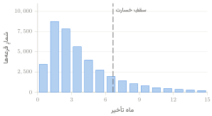
مثال 21.73 (دُمی که خسارت نمیپوشاند) پرسش. میانگین و صدکهای ۹۰ و ۹۹ هزینهٔ تأخیر، خسارتِ دریافتی و سهمِ مالک چیست؟
پاسخ. هزینه: 4,155، 12,940، 35,764؛ خسارت: 2,785، 10,380، 13,298؛ سهمِ مالک: 1,371، 2,560، 22,466 هزار.
تفسیر. خسارت بیشترِ تأخیرهای عادی را میپوشاند؛ دُمِ فراتر از سقف (حدودِ ۶٫۷ ماه) مالِ مالک است و در صدکِ ۹۹ به بیش از 22 میلیون میرسد. سهامِ آمادهباش یا بیمهٔ تأخیر در راهاندازی برای همین دُم است و وامدهندگان آن را شرطِ پیشین میکنند. وارسی: \(13{,}298/1{,}995 = 6.7\) ماه.
مبلغِ فسخ. اگر قراردادِ خرید بهسببِ کوتاهیِ خریدار فسخ شود، قرارداد معمولاً مبلغِ فسخ (به انگلیسی termination payment) تعیین میکند.
termination payment on buyer default: debt + 50 % of equity
year debt outstanding payment equity loses (book)
1 121,025 145,606 24,582
5 101,243 121,892 20,648
10 64,722 80,454 15,732
15 11,723 22,539 10,816
lenders need the payment to cover the debt at any time; the
owners accept a loss on equity - and the payment is worth
only what the buyer (or its guarantor) can actually payمثال 21.74 (مبلغی که بدهی را میپوشاند) پرسش. با فرمولِ آموزشیِ «بدهی + 50 % ارزشِ دفتریِ سهام»، مبلغِ فسخ در سالهای ۱، ۵، ۱۰ و ۱۵ چیست و سهامداران چقدر از دست میدهند؟
پاسخ. 145,606، 121,892، 80,454، 22,539؛ زیانِ دفتریِ سهام 24,582 تا 10,816.
تفسیر. وامدهندگان میخواهند مبلغِ فسخ در هر زمان دستکم بدهی را بپوشاند؛ سهامداران زیان میپذیرند. اما مبلغ فقط به اندازهٔ توانِ پرداختِ خریدار (یا ضامنش) ارزش دارد: اگر خریداری که قرارداد را نقض کرده نتواند بپردازد، مبلغِ فسخ روی کاغذ میماند. این بند مفهومی است و متنِ واقعی را حقوقدان مینویسد.
- چرا تأخیر باید بهشکلِ توزیع دیده شود؟
- دُمِ تأخیر با چه ابزارهایی پوشش داده میشود؟
- مبلغِ فسخ دستکم چه چیزی را باید بپوشاند؟
- چرا مبلغِ فسخ ممکن است روی کاغذ بماند؟
21.8.5 ریسکِ کلِ پروژه: حالتِ پایه، حالتِ مورد انتظار نیست
ایده. برخی ریسکها دوسویهاند (انرژی میتواند بیشتر یا کمتر شود) و برخی یکسویه (تأخیر و افزایشِ هزینه تقریباً همیشه بد میشوند، بهندرت خوب). اگر هر دو را با هم قرعه بکشیم، میانهٔ بازده از حالتِ پایه پایینتر میافتد.
equity IRR with delay (15 % chance of a year), capex overrun
(half-normal 5 %) and energy uncertainty, 300 draws:
P10 7.83 %, P50 9.48 %, P90 11.03 %; base 10.22 %
draws below the 6 % debt rate: 0 %
the median falls below the base: delay and overrun only go
one way, so the base case is not the expected caseمثال 21.75 (پایه بالای میانه) پرسش. با 15 % احتمالِ یک سال تأخیر، افزایشِ هزینهٔ نیمنرمالِ 5 % و عدمِ قطعیتِ انرژی، صدکهای بازدهِ سهام چیست؟
پاسخ. صدکِ ۱۰ 7.83 %، میانه 9.48 %، صدکِ ۹۰ 11.03 %؛ حالتِ پایه 10.22 %. هیچ قرعهای زیرِ 6 % نیست.
تفسیر. حالتِ پایه بهترینِ معقول است، نه مورد انتظار: چون ریسکهای ساخت فقط یک سو دارند، میانه حدودِ 0.7 واحد پایینتر است. هیئتمدیرهای که فقط حالتِ پایه را ببیند، پروژه را بهتر از آنچه هست میبیند. پس گزارشِ سرمایهگذاری باید توزیع را هم نشان دهد و احتیاط، خسارتهای تأخیر و بیمه را با همین توزیع بسنجد (مثال 21.73).
- ریسکِ دوسویه و یکسویه را با مثال از هم جدا کنید.
- چرا میانهٔ بازده از حالتِ پایه پایینتر است؟
- گزارشِ سرمایهگذاری چه چیزی باید افزون بر حالتِ پایه نشان دهد؟
21.8.6 از پیشنهادِ وام تا نخستین برداشت
ایده. بستنِ مالی یک روز نیست، یک فرایند است که ماهها طول میکشد و هر گامش شاهدی میخواهد که در این کتاب ساخته شده است. ترتیبِ رایج (مفهومی؛ نامها و ترتیب در هر بازار فرق دارند):
| گام | چه چیزی | شاهد و سند | فصلها |
|---|---|---|---|
| ۱ | یادداشتِ اطلاعاتی و مدلِ مالی برای وامدهندگان | مدلِ ممیزیپذیر، ثبتنامهٔ فرضها | ۲۱ |
| ۲ | شرطنامهٔ اولیه (term sheet) | پیشنهادها در مدل مقایسه شدهاند | ۲۱ |
| ۳ | بررسیِ دقیق: فنی، حقوقی، بیمه، مدل | گزارشِ مهندسِ مستقل، ممیزیِ مدل | ۱۲ تا ۲۰، ۳۸ |
| ۴ | مذاکرهٔ قراردادها: خرید، EPC، نگهداری، اتصال | ماتریسِ ریسک، رابطها | ۱۸، ۲۱، ۳۸ تا ۴۰ |
| ۵ | قراردادِ وام و سندهای تضمین | تعریفهای CFADS و نسبتها | ۲۱ |
| ۶ | برآوردنِ شرطهای پیشین | دفترِ شاهد (PLP-PRJ-REG-0009) | ۲۱ |
| ۷ | پوششِ نرخ و ارز، تأمینِ سهام | قراردادهای پوشش، تعهدِ سهام | ۲۱ |
| ۸ | بستنِ مالی و نخستین برداشت | گواهیِ مهندسِ مستقل، حسابها | ۲۱، ۴۷ |
| ۹ | برداشتهای بعدی با پیشرفتِ ساخت | گزارشِ پیشرفت و هزینه | ۴۷ تا ۵۰ |
مثال 21.76 (مسیرِ بحرانی) پرسش. کدام گامها معمولاً مسیرِ بحرانیِ بستنِ مالی را میسازند و چرا؟
پاسخ. قراردادِ اتصال و مجوزها (بیرون از کنترلِ مالک)، قراردادِ خرید (مذاکره با یک خریدارِ قوی)، و گزارشِ مهندسِ مستقل (نیازمندِ همهٔ دادهها). اینها شاهدهای «باز»ِ مثال 21.72 هستند.
تفسیر. هر ماه تأخیر در بستنِ مالی، هزینههای توسعه را بالا میبرد و ممکن است پیشنهادهای قیمت (تجهیزات، وام) منقضی شوند؛ فرمولِ تعدیل (مثال 21.32) و اعتبارِ پیشنهادها باید با برنامهٔ بستنِ مالی همخوان باشند. برنامهٔ این فرایند بخشی از برنامهٔ پروژهٔ فصلِ ۳۸ است.
- نُه گامِ بستنِ مالی را به ترتیب بنویسید.
- سه گامی که اغلب مسیرِ بحرانیاند نام ببرید.
- چرا اعتبارِ پیشنهادهای قیمت با برنامهٔ بستنِ مالی گره خورده است؟
21.9 نیروگاهِ P: سه مثالِ یکپارچه
دادهها: بستهٔ دادهٔ 1.1.0، سناریوی S1، انرژیِ مدلِ ۱۵٫۱ (D-019) و عدمِ قطعیتِ فصلِ ۱۶ (D-020)؛ همهٔ هزینهها، تعرفهها و شرطهای مالی آموزشی (A-304 تا A-310).
Plant P on the back of an envelope (year-1 money):
revenue 295.14 GWh x 0.99 x 70 u = 20,453 k u
operating cost 4,270; margin 16,183 k u a year
simple payback 156,450 / 16,183 = 9.7 years
capital recovery factor 5 %, 25 yr = 0.0710
LCOE ~ (156,450 x 0.0710 + 4,270) / 288,854 MWh = 53.2 u/MWh
(288,854 MWh = mean of the 25-year energy series; the model's
LCOE adds replacements and decommissioning: 54.3)مثال 21.77 (مقدماتی: نیروگاه روی پشتِ یک پاکت) پرسش. بی مدل، درآمد و حاشیهٔ سالِ اول، بازگشتِ سادهٔ سرمایه و هزینهٔ ترازشدهٔ تقریبی را حساب کنید.
پاسخ. درآمد \(295.14 \times 0.99 \times 70 = 20{,}453\) هزار؛ حاشیه \(20{,}453 - 4{,}270 = 16{,}183\)؛ بازگشتِ ساده \(156{,}450/16{,}183 = 9.7\) سال. با \(\text{CRF} = 0.0710\):
\[ \text{LCOE} \approx \frac{156{,}450 \times 0.0710 + 4{,}270}{288{,}854\,\text{MWh}} = 53.2\,\text{u/MWh} \]
تفسیر. پاکت جهتِ درست را نشان میدهد (تعرفهٔ 70 بالای هزینهٔ ترازشدهٔ حدودِ 53) اما بدهی، مالیات، تورم، جایگزینیها و ریسک را نمیبیند؛ مدلِ کامل هزینهٔ ترازشده را 54.3 و بازدهِ سهام را 10.2 % میدهد. وارسی: بازگشتِ سادهٔ نزدیکِ ده سال برای نیروگاهی با عمرِ ۲۵ ساله معقول است.
مثال 21.78 (میانی: داوری میانِ گزینهها) پرسش. از میانِ شش گزینهٔ مثال 21.35 کدام را به هیئتمدیره پیشنهاد میکنید و با چه شرطهایی؟
پاسخ. از دیدِ مالیِ محض، B (S0) با جا و بیِ آماده برای باتریِ آینده (فصلِ ۱۸): بازدهِ سهام 12.76 % و پوششِ P90 برابرِ 1.20. باتری (A یا C) فقط بهشرطِ یکی از اینها: الزامِ بهرهبردارِ شبکه یا قراردادِ خدمت (U-077)، دامنهٔ قیمتِ زمانِ روزِ گستردهتر از فرضِ آموزشی، یا تصمیمِ مالک برای جزیرهٔ بارهای حیاتی (U-080)؛ حتی با تعرفهٔ زمانِ روز، C بازدهِ کمتری از B دارد (مثال 21.16). E (مدتِ ۱۸ ساله) را در مذاکرهٔ وام دنبال کنید؛ F (پوششِ نازک) را نپذیرید.
تفسیر. این پیشنهاد D-023 (مبنای باتری) را لغو نمیکند، به آن شرط میافزاید: باتری فنی تعریف شده، اما توجیهِ مالیاش منتظرِ شاهد است. این همان رفتارِ «از فرض تا شاهد» است: تصمیم با فرض گرفته نمیشود، با شرطی گرفته میشود که شاهدش معلوم است. وارسی: B پوششِ P90 برابرِ 1.20 و C برابرِ 1.14 دارند، هر دو بالای قفل.
finance basis of Plant P (D-025), from this chapter:
uses 170,188 k u: capex 156,450, IDC 6,165, fee 1,815, DSRA 5,757
debt 121,025 (71 %), 15 yr sculpted, sized by DSCR 1.20 on P90 1-yr
equity 49,163; equity IRR 10.2 %, project IRR 7.8 %
min DSCR 1.20, average 1.30, min LLCR 1.23
stresses: P99 every year, tariff -10 %, unhedged rate +2 points
reach lock-up; buyer 6 months late needs the DSRA
revenue: flat PPA in the base; time-of-day, services and
carbon only as labelled sensitivities until verified
conditions precedent: 9 of 12 open (not yet bankable)مثال 21.79 (یکپارچه: مبنای مالیِ نیروگاهِ P) پرسش. مبنای مالیِ نیروگاهِ P را در یک صفحه بنویسید: مصارف و منابع، بدهی و شکلش، سنجهها، تنشها، درآمدها و وضعیتِ شاهدها.
پاسخ. (۱) مصارف 170,188 هزار: هزینهٔ سرمایهای 156,450، بهرهٔ دورهٔ ساخت 6,165، کارمزد 1,815، DSRA 5,757. (۲) بدهی 121,025 (71 %)، ۱۵ ساله، تراشیده، اندازهگرفته با DSCR برابرِ 1.20 روی P90 یکساله؛ سهام 49,163. (۳) سنجهها: بازدهِ سهام 10.2 %، بازدهِ پروژه 7.8 %، کمینهٔ DSCR 1.20، میانگین 1.30، کمینهٔ LLCR 1.23. (۴) تنشها: P99 هر سال، تعرفهٔ −10 % و نرخِ بیپوشش به قفل میرسند؛ دیرکردِ ششماههٔ خریدار به DSRA نیاز دارد؛ ترکیبِ تنشها تا 1.01. (۵) درآمد: قراردادِ خریدِ ثابت در حالتِ پایه؛ زمانِ روز، خدمت و کربن فقط حساسیت. (۶) شاهد: ۹ از ۱۲ شرطِ پیشین باز.
تفسیر. این تصمیمِ D-025 است: مبنای مالیِ آموزشی که با هر قرارداد و هر یافتهٔ مهندسِ مستقل بهروز میشود. هیچ عددِ آن قیمتِ بازار، قانونِ مالیاتی یا شرطِ وامدهندهای نیست؛ مجهولهای U-081 تا U-084 باز میمانند. وارسی: هر بند در یکی از مثالهای این فصل عدد و شاهد دارد.
21.10 عددهای کلیدیِ اقتصاد و تأمینِ مالیِ نیروگاهِ P
| کمیت | مقدار | مثال |
|---|---|---|
| هزینهٔ سرمایهای S1 / S0 | 156,450 / 142,800 هزار | مثال 21.1 |
| هزینهٔ بهرهبرداری | 4,270 هزار (14.5 بر مگاواتساعت) | مثال 21.2 |
| هزینهٔ ترازشده S0 / S1 (واقعی 5 %) | 50.2 / 54.3 | مثال 21.11 |
| بازدهِ پروژه، ارزشِ فعلیِ خالص | 7.84 %؛ +5,159 هزار | مثال 21.10 |
| بدهی، اهرم، بازدهِ سهام | 121,025؛ 71 %؛ 10.22 % | مثال 21.5 |
| کمینه و میانگینِ DSCR، کمینهٔ LLCR | 1.20؛ 1.30؛ 1.23 | مثال 21.50 |
| وامِ قسطِ برابر در برابرِ تراشیده | 92 % | مثال 21.52 |
| انرژیِ قفل و نکول (هر سال) | 92.5 و 89.3 % P50 | مثال 21.53 |
| سربهسرِ تعرفه برای DSCR برابرِ 1.00 | 60.1 واحد | مثال 21.71 |
| حالتِ ترکیبی | DSCR 1.01؛ بازده 4.64 % | مثال 21.70 |
| یک ماه تأخیر | 2,487 هزار؛ خسارت 80 % | مثال 21.24 |
| افتِ ارزِ 10 % | بازدهِ سهام 8.51 % | مثال 21.4 |
| مونتکارلوی منبع: صدکِ ۱۰ بازدهِ سهام | 9.10 % | مثال 21.15 |
| مونتکارلوی کلِ پروژه: میانهٔ بازدهِ سهام | 9.48 % | مثال 21.75 |
| تعرفهٔ پیشنهادی برای بازدهِ 10 % | 69.5 (61.5 تا 78.6) | مثال 21.20 |
| سهمِ سرمایه از هزینهٔ ترازشده | حدودِ 70 % | مثال 21.21 |
| پوششِ سالِ اول با ۹۰ روز وصول | 0.98 | مثال 21.59 |
| ارزشِ اختیارِ باتریِ سالِ ۵ | صفر | مثال 21.16 |
21.11 گردشِ کارِ مدلِ مالی
- ثبتنامهٔ فرضها را بسازید: هر ورودی با شناسه، منبع و وضعیت (جدول 21.3).
- قراردادِ مدل را بنویسید: دوره، اسمی یا واقعی، ارز، سالِ پایه (بخش 21.2.3).
- خطوطِ بهرهبرداری را از انرژی تا هزینهها بسازید؛ جایگزینی و برچیدن را جدا (بخش 21.2.2).
- دورهٔ ساخت، بهرهٔ دورهٔ ساخت و منابع و مصارف را ببندید (بخش 21.2.4).
- بدهی را روی حالتهای وامدهنده اندازه و بازپرداخت را بتراشید؛ DSCR و LLCR را با تعریفهای سند بسازید (بخش 21.7).
- بررسیهای خودکار و بازمحاسبهٔ مستقل را اجرا کنید (بخش 21.7.3).
- گزینهها، حساسیتها، تنشها و سربهسرها را با بدهیِ ثابت بسنجید (بخش 21.3.4، بخش 21.8).
- شرطهای پیشین و ماتریسِ ریسک را با شاهد کامل کنید (بخش 21.8.3، بخش 21.4.3).
21.12 آزمایشگاههای پایتونِ این فصل
| آزمایشگاه | برنامه | آنچه میسازد |
|---|---|---|
| دادهها | sources | هزینهها، جایگزینی، شرطهای مالی، سریِ انرژی |
| مدل | model | خطوطِ بهرهبرداری، جریانِ نقد، بدهی، نسبتها، بررسیها |
| بنیادها | examples_a | هزینهٔ سرمایهای، منابع و مصارف، بهرهبرداری، اسمی و واقعی، ارز، شستوشو |
| سنجهها | examples_b | بازدهها، هزینهٔ ترازشده، تعرفهها، کاهشِ تولید، دسترسپذیری، گردباد |
| قراردادها | examples_c | تأخیر، عملکرد، یکپارچه یا چندقراردادی، ضمانت، ماتریسِ ریسک |
| آزمایشگاهِ مدل | lab_d | ثبتنامه، سالها، گزینهها (مثالِ کارشدهٔ ۱) |
| راههای درآمد | examples_e | چهار راه، خدمت، کربن، تضمینِ پرداخت |
| بدهی | lab_f | جدولِ دوره به دوره (مثالِ کارشدهٔ ۲)، شکل، اندازه، تعهدها |
| تنش | lab_g | تنشها، ترکیب، سربهسرها، شرطهای پیشین |
| شاخص، تنزیل، توزیع | examples_h | شاخصبندی، WACC، صندوقِ برچیدن، مونتکارلو، اختیارِ باتری |
| بیمه و ممیزی | examples_k | فرانشیز، آزمونِ پرعدمِقطعیت، خطاهای کاشتهشده |
| درآمد و تأمینِ مالی | examples_m | فروش به کارخانه، سوآپ، بازتأمین، P90 دهساله، تأخیر، فسخ |
| سازوکارها | examples_n | قفل، استهلاک، وصول، برداشت، افزایشِ هزینه، حالتِ وامدهنده، بازگشت |
| بهرهبرداری در اقتصاد | examples_p | انباشتن در بودجهٔ چرخه، یدکِ ترانسفورماتور، فرسایش |
| صورتها و پیشنهاد | examples_q | سه صورتِ مالی، عنکبوتی، تعرفهٔ پیشنهادی، اجزای هزینهٔ ترازشده، کاهشِ تولید، تمدید، مونتکارلوی پروژه |
| اتصال، توسعه، ارز | examples_r | اتصالِ عمیق، درختِ توسعه، بازار، وامِ ارزی، نگهداری |
| نیروگاهِ P | integrated | پشتِ پاکت، مبنای مالی |
| مثالها و پاسخها | worked | سطرهای E01 و P01 به بعد |
ماژولِ finance با آزمونهایش (نُه آزمون در برابرِ حسابِ دستی) پایهٔ این برنامههاست.
21.13 ساخت و تولیدِ صنعتی در این فصل
اقتصاد از سه راه به تولیدِ صنعتی وصل است: (۱) هزینهٔ تجهیزات و تغییرِ آن با ارز و زنجیرهٔ تأمین (مثال 21.4، فصلهای ۳۸ و ۳۹)؛ (۲) کیفیت و ضمانت: خسارتِ عملکرد فقط برای کمبودی که آزمونِ کارخانه یا محل اندازه بگیرد، و ضمانت فقط تا جایی که سازنده بتواند بپردازد (بخش 21.4.2، فصلهای ۴۱ تا ۴۸)؛ (۳) جایگزینی و شاهدِ وامدهنده: گواهیِ نوعی، سابقهٔ تولید و برنامهٔ کیفیت بخشی از بررسیِ دقیقِ فنیاند (جدول 21.5).
21.14 جعبهٔ استاندارد و انطباق
- IEC 60300-3-3:2017: راهنمای کاربردیِ هزینهٔ چرخهٔ عمر (فرایند، ساختارِ شکستِ هزینه، مفهومهای مالی). راهنماست، نه الزام. (وارسیشده 2026-11-16.)
- ISO 31000:2018: راهنمای مدیریتِ ریسک (اصول و فرایند)؛ بیالزام و غیرقابلِ گواهی. پایهٔ مفهومیِ ماتریسِ ریسک.
- قانونِ مالیات، قواعدِ بازار، طرحهای کربن و شرطهای وام در هر کشور جدا و در فصلهای ۵۵ تا ۵۷ بررسی میشوند؛ این فصل هیچکدام را نقل نمیکند و نرخِ مالیات و استهلاکِ آن آموزشی است.
- تعریفهای DSCR، LLCR و CFADS را سندِ معامله تعیین میکند؛ هیچ استانداردِ فنیای آنها را تعریف نمیکند.
21.15 تحویلدادنیِ نیروگاهِ P
این فصل اینها را به پروندهٔ نیروگاهِ P میافزاید:
- PLP-PRJ-CAL-0001، بازنگریِ A: مدلِ آزمودهشدهٔ جریانِ نقد و خدمتِ بدهی با ثبتنامهٔ فرضها و بررسیهای خودکار (بخش 21.5، بخش 21.7).
- PLP-PRJ-REG-0009، بازنگریِ A: دفترِ بررسیِ دقیق و شرطهای پیشین با وضعیتِ هر شاهد (بخش 21.8.3، جدول 21.5).
- PLP-PRJ-REG-0010، بازنگریِ A: ماتریسِ ریسکِ قرارداد و تأمینِ مالی (بخش 21.4.3).
- PLP-PRJ-REP-0002، بازنگریِ A: گزارشِ گزینهها، تنشها و سربهسرها (بخش 21.5.2، بخش 21.8).
- کتابخانهٔ همراه: ماژولِ
financeبا آزمونها و برنامههای فصلِ ۲۱. - فرضها: A-304 هزینهٔ سرمایهای و احتیاط؛ A-305 هزینهٔ بهرهبرداری (با آب و شستوشو)؛ A-306 جایگزینی و برچیدن؛ A-307 قراردادِ خرید و بازارِ پس از آن؛ A-308 شرطِ وام، خسارتها، پوششها و تعهدها (نمونهای)؛ A-309 تورم، مالیات، استهلاک و سرمایهٔ در گردش؛ A-310 نرخهای تنزیل و سهمِ ارزی. همه آموزشی.
- مجهولها: U-081 قراردادِ خریدِ واقعی (تعرفه، شاخص، کاهشِ تولید، تضمین)؛ U-082 شرطنامهٔ وام (پوششها، مدت، نرخ، تعریفها)؛ U-083 قانونِ مالیات و انگیزهها در کشورِ پروژه؛ U-084 قیمتِ EPC و تجهیزات و سهمِ ارزی.
- تصمیم D-025: مبنای مالیِ نیروگاهِ P همان مثال 21.79 است.
- دفترِ سندها (جدول 2.18): چهار ردیفِ بالا با وضعیتِ «پیشنویس، آموزشی».
21.16 جمعبندی
- هزینهها: سرمایهای بر پایهٔ قلم با احتیاط؛ بهرهبرداری، جایگزینی و برچیدن با تورم؛ آب و شستوشو بر پایهٔ هزینهٔ چرخهٔ عمر (بخش 21.2).
- ارزشِ زمانی: جریانِ اسمی با نرخِ اسمی و واقعی با واقعی؛ آمیختنشان حدودِ 20 % خطا میسازد؛ ارز و دورهٔ ساخت مصارف را بالا میبرند (بخش 21.2.3).
- سنجهها: ارزشِ فعلیِ خالص برای ارزش، بازدهِ سهام برای سهامداران؛ هزینهٔ ترازشده فقط برای مقایسهٔ همسان؛ انرژی و تعرفه بیش از همه اثر دارند (بخش 21.3).
- قراردادها: خسارتهای مقطوع با سقف، ضمانتها با استثنا، ماتریسِ ریسک با حامل و ابزار؛ مفهومِ تجاری، نه مشاورهٔ حقوقی (بخش 21.4).
- مدل: ثبتنامهٔ فرض، جریانِ یکسویه، بررسیهای خودکار، بازمحاسبهٔ مستقل؛ گزینهها با همان مدل (بخش 21.5).
- درآمد: ارزشِ باتری به ساختارِ درآمد وابسته است؛ خدمت و کربن فقط با شاهد یا حساسیت؛ تضمینِ پرداخت و DSRA برای دیرکردِ خریدار (بخش 21.6).
- بدهی: CFADS، DSCR و LLCR با تعریفِ صریح؛ بدهی تراشیده و اندازهگرفته بر پوششِ هدف، مدت و نرخ؛ تعهدها و اندوختهها (بخش 21.7).
- بانکپذیری: تنشها با بدهیِ ثابت، حالتِ ترکیبی، سربهسرها و شرطهای پیشین؛ بانکپذیری شاهد است، نه نسبت (بخش 21.8).
21.16.1 واژگانِ فصلِ ۲۱
| فارسی | انگلیسی | یادداشت |
|---|---|---|
| هزینهٔ سرمایهای | capital expenditure | CAPEX |
| هزینهٔ بهرهبرداری | operating expenditure | OPEX |
| احتیاط | contingency | |
| برچیدن | decommissioning | |
| ارزشِ اسقاط | salvage value | |
| تنزیل | discounting | |
| اسمی و واقعی | nominal and real | |
| تورم | inflation | |
| ارزشِ فعلیِ خالص | net present value | NPV |
| نرخِ بازدهِ داخلی | internal rate of return | IRR |
| هزینهٔ ترازشدهٔ انرژی | levelised cost of energy | LCOE |
| ضریبِ بازیابیِ سرمایه | capital recovery factor | CRF |
| میانگینِ موزونِ هزینهٔ سرمایه | weighted average cost of capital | WACC |
| اقتصادِ پروژه | project economics | |
| تأمینِ مالیِ پروژه | project finance | |
| شرکتِ پروژه | special purpose vehicle | SPV |
| سهام | equity | |
| بدهیِ ارشد | senior debt | |
| اهرم | gearing (leverage) | |
| مدتِ وام | tenor | |
| بازپرداختِ تراشیده | sculpted repayment | |
| قسطِ برابر | annuity repayment | |
| بهرهٔ دورهٔ ساخت | interest during construction | IDC |
| منابع و مصارف | sources and uses | |
| جریانِ نقدِ در دسترس برای خدمتِ بدهی | cash flow available for debt service | CFADS |
| نسبتِ پوششِ خدمتِ بدهی | debt service cover ratio | DSCR |
| نسبتِ پوششِ عمرِ وام | loan life cover ratio | LLCR |
| اندوختهٔ خدمتِ بدهی | debt service reserve account | DSRA |
| اندوختهٔ نگهداری | maintenance reserve account | MRA |
| قفلِ توزیع | distribution lock-up | |
| نکول | event of default | |
| حاشیهٔ تعهد | covenant headroom | |
| بازتأمینِ مالی | refinancing | |
| آبشارِ جریانِ نقد | cash-flow waterfall | |
| قراردادِ خریدِ برق | power purchase agreement | PPA |
| پرداخت به ازای تولید | pay-as-produced | |
| انرژیِ فرضی | deemed energy | |
| خسارتِ مقطوع | liquidated damages | LD |
| قراردادِ یکپارچه | EPC wrap | |
| تغییرِ قانون | change in law | |
| نیروی قاهره | force majeure | |
| اعتبارِ اسنادی | letter of credit | LC |
| بررسیِ دقیقِ فنی | technical due diligence | |
| مهندسِ مستقل | independent engineer | IE |
| شرطِ پیشین | condition precedent | CP |
| سربهسر | break-even | |
| آزمونِ تنش | stress test | |
| بانکپذیری | bankability | |
| هزینهٔ چرخهٔ عمر | life-cycle cost | LCC |
| شاخصبندی | indexation | |
| صندوقِ ذخیره | sinking fund | |
| مونتکارلو | Monte Carlo | |
| اختیارِ واقعی | real option | |
| فرانشیز | deductible | |
| حقِ بیمه | premium | |
| سوآپِ نرخِ بهره | interest rate swap | |
| مبلغِ فسخ | termination payment | |
| دورهٔ بازگشت | payback period | |
| سهامِ آمادهباش | standby equity | |
| حالتِ وامدهنده | lenders’ base case | |
| استهلاکِ نزولی | declining-balance depreciation | |
| روزهای وصول | receivable days | |
| استخرِ مشترکِ یدک | shared spares pool | |
| صورتِ سود و زیان | income statement | |
| ترازنامه | balance sheet | |
| نمودارِ عنکبوتی | spider chart | |
| نفرینِ برنده | winner’s curse | |
| اتصالِ سطحی و عمیق | shallow and deep connection | |
| درختِ تصمیم | decision tree | |
| کفِ قیمت | price floor | |
| وامِ ارزی | hard-currency loan | |
| قراردادِ خدمتِ بلندمدت | long-term service agreement | LTSA |
| تعادلِ نیروگاه | balance of plant | BOP |
21.17 ارزیابیِ پلکانی
معیارِ تسلطِ این فصل: خواننده میتواند هزینهها را با ارزشِ زمانی در جریانِ نقد بیاورد، سنجهها را با محدودیتشان به کار برد، ریسکها را در قراردادها تخصیص دهد، مدلی ممیزیپذیر بسازد و وارسی کند، بدهی را اندازه کند و نسبتها را حساب کند، و بانکپذیری را با تنش و شاهد بسنجد. پاسخها در بخش 21.18 آمدهاند.
21.17.1 پلهٔ ۱: مبانی
تمرین 21.1 شش قلمِ هزینهٔ سرمایهایِ نیروگاهِ P را نام ببرید.
تمرین 21.2 احتیاط را تعریف کنید و با تغییرِ دامنه مقایسه کنید.
تمرین 21.3 هشت قلمِ هزینهٔ بهرهبرداری را نام ببرید.
تمرین 21.4 ارزشِ فعلیِ 110 در یک سال با 10 %.
تمرین 21.5 نرخِ اسمی برای واقعیِ 4 % و تورمِ 2.5 %.
تمرین 21.6 نرخِ بازدهِ −100، +60، +60.
تمرین 21.7 قسطِ برابرِ 100 با 10 % در دو سال.
تمرین 21.8 بدهیِ تراشیده برای CFADS 22 و 22 با پوششِ 1.10 و 10 %.
تمرین 21.9 DSCR برای CFADS 13,837 و خدمتِ 11,514.
تمرین 21.10 بهرهٔ دورهٔ ساخت برای 100 خرجِ برابر در دو سال با 10 %.
تمرین 21.11 مالیاتِ 25 % بر 10، 10، 50 با استهلاکِ 30، 0، 0.
تمرین 21.12 هزینهٔ ترازشده برای سرمایهٔ 100 و 10 MWh در سال به مدتِ دو سال با نرخِ صفر.
تمرین 21.13 کارمزدِ سالانهٔ اعتبارِ اسنادیِ 5,301 با 1.5 %.
تمرین 21.14 رابطهٔ فیشر را بنویسید.
تمرین 21.15 چهار قلمِ مصارف را نام ببرید.
تمرین 21.16 اقتصادِ پروژه و تأمینِ مالیِ پروژه را تعریف کنید.
تمرین 21.17 سه دامِ نرخِ بازدهِ داخلی را بنویسید.
تمرین 21.18 چهار چیزی را که هزینهٔ ترازشده نمیبیند بنویسید.
تمرین 21.19 پنج شکلِ قراردادِ خرید را نام ببرید.
تمرین 21.20 انرژیِ فرضی را تعریف کنید.
تمرین 21.21 خسارتِ مقطوع را تعریف کنید.
تمرین 21.22 ده طرفِ ساختارِ قراردادیِ شرکتِ پروژه را نام ببرید.
تمرین 21.23 قاعدهٔ پایهٔ تخصیصِ ریسک را بنویسید.
تمرین 21.24 پنج ویژگیِ مدلِ ممیزیپذیر را بنویسید.
تمرین 21.25 چهار راهِ درآمد را نام ببرید.
تمرین 21.26 چهار پرسشِ پیش از حسابِ درآمدِ خدمت را بنویسید.
تمرین 21.27 شش بندِ کلیدیِ قراردادِ خرید را نام ببرید.
تمرین 21.28 ده حوزهٔ بررسیِ دقیقِ فنی را نام ببرید.
تمرین 21.29 CFADS، DSCR و LLCR را با فرمول بنویسید.
تمرین 21.30 ترتیبِ آبشارِ جریانِ نقد را بنویسید.
تمرین 21.31 قفلِ توزیع و نکول را تعریف کنید.
تمرین 21.32 سه شرطِ شرطنامه را که اندازهٔ بدهی را تعیین میکنند نام ببرید.
تمرین 21.33 شرطِ پیشین را تعریف کنید.
تمرین 21.34 فرضهای A-304 تا A-310 را با یک عبارت برای هر کدام بنویسید.
تمرین 21.35 مجهولهای U-081 تا U-084 را بنویسید.
تمرین 21.36 نقشِ مهندسِ مستقل و حدِ آن را بنویسید.
تمرین 21.37 دو استانداردِ جعبهٔ انطباقِ این فصل را با موضوعشان نام ببرید.
تمرین 21.38 گزینههای A تا F مثالِ کارشدهٔ ۱ را نام ببرید.
تمرین 21.39 معادلهٔ 21.4 را بنویسید و برای سالِ ۱۰، شاخصِ 3 % و تورمِ 5 % حساب کنید.
تمرین 21.40 معادلهٔ 21.5 را برای اهرمِ 50 % حساب کنید.
تمرین 21.41 پرداختِ سالانهٔ صندوقِ برچیدنِ ۸ ساله با سودِ 3 %.
تمرین 21.42 عدمِ قطعیتِ مشترک و سالانه را تعریف کنید.
تمرین 21.43 ارزشِ اختیار را با یک فرمولِ کلامی بنویسید.
تمرین 21.44 فرانشیز را تعریف کنید.
تمرین 21.45 احتمالِ پرداختِ خسارت برای کمبودِ 3 %، رواداریِ 1 % و عدمِ قطعیتِ 2 %.
تمرین 21.46 سه خطای کاشتهشده در مدل را با نتیجهٔ بررسیها بنویسید.
تمرین 21.47 درآمدِ بیشترِ فروشِ 30 GWh با 12 واحد بیشتر.
تمرین 21.48 هزینهٔ سالِ اولِ سوآپِ 0.2 % روی بدهیِ پایه.
تمرین 21.49 پولِ آزادشده در بازتأمین.
تمرین 21.50 ماهی که خسارتِ تأخیر به سقف میرسد.
تمرین 21.51 مبلغِ فسخ در سالِ ۵.
تمرین 21.52 سرمایهٔ در گردشِ سالِ اول با ۶۰ روز وصول.
تمرین 21.53 بهرهٔ دورهٔ ساخت با «اول سهام».
تمرین 21.54 ارزشِ انباشتنِ درونِ بودجهٔ چرخه.
تمرین 21.55 زیانِ مورد انتظارِ سالانه بی یدکِ ترانسفورماتور.
تمرین 21.56 ضریبِ تنزیلِ سالِ ۱۹ با 7.5 %.
تمرین 21.57 ارزشِ فعلیِ 1,000 در ۱۵ سال با 6 %.
تمرین 21.58 بازگشتِ ساده و تنزیلشدهٔ نیروگاهِ P.
تمرین 21.59 چهار لایهٔ تأمینِ افزایشِ هزینه را نام ببرید.
تمرین 21.60 سه کاهشِ آموزشیِ «حالتِ وامدهنده» را بنویسید.
تمرین 21.61 سه صورتِ مالی را نام ببرید.
تمرین 21.62 سودِ خالصِ سالِ اول را از مثال 21.37 بخوانید.
تمرین 21.63 تعرفهٔ پیشنهادی برای بازدهِ 10 % در حالتِ پایه.
تمرین 21.64 سهمِ سرمایه از هزینهٔ ترازشده.
تمرین 21.65 کارمزدِ سالانهٔ اعتبارِ اسنادیِ DSRA با 2 %.
تمرین 21.66 سه رژیمِ جبرانِ کاهشِ تولید را نام ببرید.
تمرین 21.67 صدکهای ۱۰ و ۹۰ بازدهِ سهام در مونتکارلوی کلِ پروژه.
تمرین 21.68 هفت شکلِ قراردادِ ساخت و نگهداری را نام ببرید.
تمرین 21.69 تعرفهٔ لازم با اتصالِ عمیق.
تمرین 21.70 احتمالِ رسیدنِ توسعه به بستنِ مالی در درختِ تصمیم.
تمرین 21.71 DSCR سالِ ۱۵ وامِ ارزی.
تمرین 21.72 میانگینِ هزینهٔ قراردادِ نگهداریِ پایه.
تمرین 21.73 ارزشِ فعلیِ خالصِ باتری بهعنوانِ مرکزِ سود.
تمرین 21.74 شرطهای دو پیشنهادِ وامِ مثال 21.67 را بنویسید.
تمرین 21.75 معادلهٔ 21.8 را بنویسید.
تمرین 21.76 نُه گامِ بستنِ مالی را بنویسید.
تمرین 21.77 مالیاتِ پنج سالِ اولِ حالتِ پایه.
تمرین 21.78 افزایشِ قیمت با فولادِ +15 % و ارزِ +10 %.
تمرین 21.79 اثرِ هزینهٔ 5 واحدیِ منتقلنشده بر بازدهِ سهام.
تمرین 21.80 درآمدِ ازدسترفته با 4 % کاهشِ بیجبران.
تمرین 21.81 بازدهِ سهام و ارزشِ فعلیِ خالص با 70 MW PV.
تمرین 21.82 هزینهٔ اضافهٔ بلوکِ 10 MW PV با احتیاط.
تمرین 21.83 افزودهٔ ارزشِ هر بلوکِ PV را بنویسید.
تمرین 21.84 سه شرطِ سودمندیِ بیشساخت را بنویسید.
تمرین 21.85 سه گامِ مسیرِ بحرانیِ بستنِ مالی را نام ببرید.
تمرین 21.86 سه وامدهندهٔ احتمالی برای پروژهای مانندِ P چه شاهدهایی مشترک میخواهند؟
21.17.2 پلهٔ ۲: تحلیل
تمرین 21.87 ضریبِ اقساط را برای (5 %، ۲۰)، (7.5 %، ۲۵) و (10 %، ۱۵) حساب کنید.
تمرین 21.88 نرخِ اسمی از (واقعی 5 %، تورم 2 %) و (واقعی 3 %، تورم 4 %).
تمرین 21.89 نرخِ بازده و ارزشِ فعلیِ خالص با 8 % برای −1000 و 150 در ۱۰ سال.
تمرین 21.90 قسط و بهرهٔ سالِ اولِ وامِ 1,000 با 6 % در ۱۰ سال.
تمرین 21.91 بدهیِ تراشیده برای CFADS 150 در ۱۰ سال با پوششِ 1.25 و 1.40 و 6 %.
تمرین 21.92 همان با پوششِ 1.25 در ۸ سال.
تمرین 21.93 نشان دهید LLCR آغازِ وامِ تراشیده برابرِ پوششِ هدف است؛ برای 30 در سه سال، 1.25 و 8 %.
تمرین 21.94 مالیات بر 40 و 40 با استهلاکِ 60 سپس صفر.
تمرین 21.95 بهرهٔ دورهٔ ساخت برای 1,000 با فازبندیِ 40/60، اهرمِ 70 % و 6 %.
تمرین 21.96 سرمایهٔ در گردشِ سالِ اول را حساب کنید.
تمرین 21.97 DSRA ششماهه برای خدمتِ 11,514.
تمرین 21.98 خسارتِ تأخیرِ یکماهه.
تمرین 21.99 انرژیِ معادلِ سقفِ خسارتِ دسترسپذیری.
تمرین 21.100 درآمدِ کربن با 5 واحد بر تن (حساسیت).
تمرین 21.101 درآمدِ REQ-S01 با 9 واحد (حساسیت).
تمرین 21.102 نسبتِ درآمدِ بازار به قراردادِ خرید.
تمرین 21.103 افزایشِ هزینه با افتِ ارزِ 10 %.
تمرین 21.104 ارزشِ فعلیِ 10,000 در ۲۰ سال با 5 %.
تمرین 21.105 سربهسرِ تعرفه و انرژی برای DSCR 1.00.
تمرین 21.106 نشان دهید −100، 230، −132 دو نرخِ بازده دارد.
تمرین 21.107 هزینهٔ ترازشده با دست.
تمرین 21.108 بازگشتِ ساده.
تمرین 21.109 هزینهٔ یک ماه تأخیر.
تمرین 21.110 تفاوتِ صرفِ یکپارچگی و هزینهٔ مورد انتظارِ چندقراردادی.
تمرین 21.111 DSCR سالِ ۲ را از مثال 21.50 وارسی کنید.
تمرین 21.112 قیمتِ سالِ ۲۰ قراردادِ خرید.
تمرین 21.113 قیمتِ بازار در سالِ ۲۵.
تمرین 21.114 از شکل 21.6 دو ورودیِ اصلی را بخوانید.
تمرین 21.115 از شکل 21.16 تنشهایی را که زیرِ 1.05 میروند بیابید.
تمرین 21.116 از شکل 21.5 نرخِ بازدهِ پیش از مالیات را بخوانید.
تمرین 21.117 از شکل 21.11 سالی را که پرداخت به سهامداران به اوج میرسد بیابید.
تمرین 21.118 از شکل 21.12 گزینهای را که زیرِ قفل میرود بیابید.
تمرین 21.119 معادلهٔ 21.11 را از تعریفِ خدمتِ تراشیده به دست آورید.
تمرین 21.120 نشان دهید با بازپرداختِ تراشیده DSCR همهٔ سالهای حالتِ اندازهگیری برابرِ هدف است.
تمرین 21.121 سهمِ باد و PV از هزینهٔ سرمایهای.
تمرین 21.122 هزینهٔ بهرهبرداری بر مگاواتساعت.
تمرین 21.123 خطای تنزیلِ جریانِ واقعی با نرخِ اسمی.
تمرین 21.124 عدمِ قطعیتِ 3.5 % بهجای 5.1 %: P90 یکساله چند درصد P50 است؟
تمرین 21.125 نشان دهید با سهمِ مشترکِ 3.6 % و سالانهٔ 3.6 % پراکندگیِ یکساله 5.1 % است.
تمرین 21.126 ارزشِ فعلیِ زیانِ تأخیرِ دو ماهه را با 2,487 در ماه و نرخِ صفر بنویسید و سهمِ خسارت را حساب کنید.
تمرین 21.127 با شاخصِ 2 % و تورمِ 4 %، تعرفهٔ واقعیِ سالِ ۲۰.
تمرین 21.128 از شکل 21.7 صدکِ پایینِ کمینهٔ پوشش را برآورد کنید.
تمرین 21.129 از شکل 21.4 سالی را که تعرفهٔ واقعی با تورمِ 6 % به نصف میرسد بیابید.
تمرین 21.130 از شکل 21.17 سهمِ پروژههای دیرکرده با بیش از ۶ ماه تأخیر را برآورد کنید.
تمرین 21.131 حقِ بیمه را با فرانشیزِ صفر از زیانِ مورد انتظارِ بیمهشده حساب کنید.
تمرین 21.132 فرانشیزِ ۳۰ روزه هزینهٔ کلِ مورد انتظار را چقدر کم میکند؟
تمرین 21.133 نشان دهید چرا در کمبودِ برابرِ رواداری احتمالِ پرداخت 0.5 است.
تمرین 21.134 کاهشِ بازدهِ سهام با سوآپ را حساب کنید.
تمرین 21.135 اثرِ استهلاکِ ۵ ساله بر مالیاتِ سالهای ۱ تا ۵.
تمرین 21.136 کاهشِ بدهی در حالتِ وامدهنده به درصد.
تمرین 21.137 نسبتِ ارزشِ فعلیِ صرفهجوییِ یدک به قیمتش.
تمرین 21.138 ارزش بر چرخهٔ جابهجایی و جذبِ انحراف.
تمرین 21.139 اثرِ افتِ 0.3 % در سالِ باد بر بازدهِ سهام.
تمرین 21.140 سهمِ ارزی و افزایشِ هزینه با افتِ 20 % پولِ محلی.
تمرین 21.141 نشان دهید با «اول سهام» ماندهٔ میانگینِ وام در سالِ ۱− کمتر است.
تمرین 21.142 اختلافِ بازدهِ سهام با و بی نگهداشتِ پولِ قفل.
تمرین 21.143 با ۹۰ روز وصول، کمینهٔ پوشش.
تمرین 21.144 خطای مدل با هزینههای به پولِ سالِ اول چقدر بازده را خوشبینانه کرد؟
تمرین 21.145 سودِ خالصِ سالِ دوم را از EBIT، بهره و مالیات وارسی کنید.
تمرین 21.146 کاهشِ حقوقِ دفتریِ سهام در سه سالِ اول.
تمرین 21.147 از شکل 21.8 بازدهِ سهام با −10 % هزینهٔ سرمایهای.
تمرین 21.148 نشان دهید چرا اثرِ هزینهٔ سرمایهای ناخطی است (بدهیِ ثابت).
تمرین 21.149 دامنهٔ تعرفهٔ پیشنهادی در مثال 21.20.
تمرین 21.150 سهمِ سرمایه در S1 از شکل 21.9.
تمرین 21.151 درآمدِ ازدسترفته با آستانهٔ 1 %.
تمرین 21.152 اختلافِ میانه و حالتِ پایه در مونتکارلوی کلِ پروژه.
تمرین 21.153 ارزشِ مرحلهٔ دوم درختِ توسعه را وارسی کنید.
تمرین 21.154 ارزشِ فعلیِ پروژه با قیمتِ بازارِ 30.
تمرین 21.155 ضریبِ خدمتِ وامِ ارزی در سالِ ۱۰ به پولِ محلی.
تمرین 21.156 صدکِ ۹۹ هزینهٔ نگهداریِ پایه در برابرِ کامل.
تمرین 21.157 ارزشِ فعلیِ تمدیدِ عمر.
تمرین 21.158 ضریبِ تنزیلِ سالِ ۲۵ با 7.5 %.
تمرین 21.159 جمعِ جریانهای باتری و نسبتشان به سرمایه را حساب کنید.
تمرین 21.160 چرا پیشنهادِ B پوششِ بهتری دارد؟ با مدت توضیح دهید.
تمرین 21.161 بازدهِ سهام با معافیتِ پنجساله (فرضی).
تمرین 21.162 قیمتِ EPC با فولادِ +15 % تنها.
تمرین 21.163 پوشش با هزینهٔ 2 واحدیِ منتقلنشده.
تمرین 21.164 اختلافِ هزینهٔ میانگینِ نگهداریِ کامل و پایه.
تمرین 21.165 درآمدِ سالانهٔ کربن با 15 واحد بر تن (حساسیت).
تمرین 21.166 بهرهٔ دورهٔ ساخت را با «اول سهام» و «متناسب» مقایسه کنید.
تمرین 21.167 سهمِ مالک از هزینهٔ تأخیر در صدکِ ۹۹.
تمرین 21.168 نسبتِ خسارتِ تأخیر به زیانِ ماهانه.
تمرین 21.169 ارزشِ فعلیِ صرفهجوییِ یدکِ ترانسفورماتور در ۲۵ سال.
تمرین 21.170 تعرفهٔ واقعیِ سالِ ۲۰ با شاخصِ 2 % و تورمِ 2.5 %.
تمرین 21.171 نسبتِ انرژیِ 90 MW به 50 MW PV را از فصلِ ۱۵ حساب کنید.
تمرین 21.172 سهمِ کاهشِ بلوکِ آخر (80 تا 90 MW) را از فصلِ ۱۵ برآورد کنید.
تمرین 21.173 ارزشِ فعلیِ خالصِ افزودهٔ میانگینِ چهار بلوک.
تمرین 21.174 با معادلهٔ 21.6، ارزشِ فعلیِ خالصِ −1000 و 600، 600 با 10 %.
تمرین 21.175 ضریبِ بازیابیِ سرمایه برای 7.5 % و ۲۵ سال.
تمرین 21.176 هزینهٔ ترازشدهٔ تقریبی با این ضریب.
تمرین 21.177 بهرهٔ سالِ ۵ را از مثال 21.50 با ماندهٔ آغازِ سال وارسی کنید.
تمرین 21.178 اصلِ سالِ ۱۰ را از خدمت و بهره به دست آورید.
تمرین 21.179 LLCR سالِ ۱۵ را با معادلهٔ 21.10 وارسی کنید.
تمرین 21.180 میانگینِ سادهی DSCR پانزده سال را از جدول تخمین بزنید.
تمرین 21.181 بازدهِ سهام با تعرفهٔ +10 % و بدهیِ ثابت.
تمرین 21.182 نسبتِ بدهی به مصارف در حالتِ پایه.
تمرین 21.183 سهمِ کارمزد و IDC از مصارف.
تمرین 21.184 بازدهِ سهام در جهانِ P90 هر سال.
21.17.3 پلهٔ ۳: کاربرد
تمرین 21.185 قیمتِ توربین 8 % بالا رفته است. اثر بر بدهی، سهام و بازدهِ سهام را توضیح دهید.
تمرین 21.186 خریدار تعرفهٔ ثابت را با 5 % تخفیف و تعرفهٔ زمانِ روز پیشنهاد میکند. چه میپرسید؟
تمرین 21.187 مدیرِ مالی میخواهد بدهی را با P50 اندازه کند تا بازده بالا رود. پاسخ دهید.
تمرین 21.188 یک مشاور میگوید «هزینهٔ ترازشدهٔ باتری بالاست، پس آن را حذف کنید». پاسخ دهید.
تمرین 21.189 قراردادِ خرید کاهشِ تولید را جبران نمیکند و شبکه 4 % کاهش پیشبینی میکند. اثر و چاره.
تمرین 21.190 پیمانکارِ EPC خسارتِ تأخیرِ 0.02 % در روز پیشنهاد میکند. بپذیرید؟
تمرین 21.191 سازنده تمدیدِ ضمانت را پیشنهاد میکند. چگونه تصمیم میگیرید؟
تمرین 21.192 یک سرمایهگذار درآمدِ کربن را در حالتِ پایه میخواهد. پاسخ دهید.
تمرین 21.193 خریدار سه ماه دیر پرداخت کرده است. چه اتفاقی برای خدمتِ بدهی و سهامداران میافتد؟
تمرین 21.194 مهندسِ مستقل پراکندگیِ تولید را بیشتر میداند. اثر بر بدهی.
تمرین 21.195 نرخِ بهره پیش از بستنِ مالی 1.5 واحد بالا رفت. چه کنید؟
تمرین 21.196 مالک میخواهد مدتِ وام را به ۱۸ سال برساند. سود و ریسک.
تمرین 21.197 کمآبیِ طولانی شستوشو را متوقف کرده است. اثر بر پوشش.
تمرین 21.198 مدلِ مالیِ یک پیمانکار خطای اسمی/واقعی دارد. چگونه آن را مییابید؟
تمرین 21.199 بیمهگر برای بیمهٔ بهرهبرداری شاهدِ نگهداری میخواهد. چه سندهایی میدهید؟
تمرین 21.200 پروژه با پوششِ 1.20 پاس شده ولی ۹ شرطِ پیشین باز است. آیا بانکپذیر است؟
تمرین 21.201 جایگزینیِ مبدلها زودتر از برنامه لازم شد. اثر بر پوشش و چاره.
تمرین 21.202 پیشنهادِ چندقراردادی 3 % ارزانتر است. چه میپرسید؟
تمرین 21.203 ارزشِ اسقاط بهجای 1,500 صفر شد. اثر بر بازده.
تمرین 21.204 تورم 5 % شد و تعرفه با 2 % شاخصدار است. اثر.
تمرین 21.205 در کشوری با تورمِ 8 %، خریدار شاخصِ 2 % پیشنهاد میکند. پاسخِ شما.
تمرین 21.206 هیئتمدیره فقط حالتِ پایه را دیده است. چرا مونتکارلو را هم نشانش میدهید؟
تمرین 21.207 مالک میخواهد باتری را «برای آینده» همین حالا بسازد. پاسخ دهید.
تمرین 21.208 بیمهگر فرانشیزِ ۹۰ روزه پیشنهاد میکند تا حقِ بیمه کم شود. چه میپرسید؟
تمرین 21.209 سازندهٔ توربین آزمونِ منحنیِ توان را با عدمِ قطعیتِ 4 % پیشنهاد میکند. پاسخ دهید.
تمرین 21.210 یک مدلِ دریافتی همهٔ بررسیها را پاس میکند. آیا درست است؟
تمرین 21.211 کارخانهای نزدیک میخواهد 30 GWh بخرد. سه پرسش.
تمرین 21.212 نرخِ بهره شناور است و پیشبینی میشود بالا رود. چه کنید؟
تمرین 21.213 پس از دو سال، وامدهندهای تازه نرخِ 5 % پیشنهاد میکند. چه چیزهایی را بسنجید؟
تمرین 21.214 پیمانکار میگوید «تأخیر فقط یک ماه است». با توزیعِ تأخیر پاسخ دهید.
تمرین 21.215 خریدار پیشنهاد میکند مبلغِ فسخ فقط بدهی را بپوشاند. اثر بر سهامداران.
تمرین 21.216 حسابدار استهلاکِ تسریعشده پیشنهاد میکند. اثر بر وامدهنده.
تمرین 21.217 خریدار ۹۰ روز مهلتِ پرداخت میخواهد. پاسخ دهید.
تمرین 21.218 مالک میخواهد سهامش را دیرتر بپردازد. وامدهنده چه میگوید؟
تمرین 21.219 هزینه 12 % افزایش یافته است. از کجا تأمین میشود؟
تمرین 21.220 وامدهنده هزینهٔ بهرهبرداری را 10 % بیشتر میشمارد. چگونه آن را کاهش میدهید؟
تمرین 21.221 بهرهبردارِ شبکه خدمتی میخواهد که ۱۰۰ چرخه در سال مصرف میکند. اثر بر ضمانت و درآمد.
تمرین 21.222 بیمهگر یدکِ ترانسفورماتور را شرط کرده است. هزینه را چگونه کم میکنید؟
تمرین 21.223 فرسایشِ مدولها در سالِ سوم 1 % اندازهگیری شده است. چه میکنید؟
تمرین 21.224 یک سرمایهگذار بازگشتِ زیرِ ۸ سال میخواهد. پاسخ دهید.
تمرین 21.225 ممیز میگوید ترازنامهٔ مدل نمیبندد. کجا را میگردید؟
تمرین 21.226 رقیب در مناقصه 64 واحد پیشنهاد داده است. چه برداشتی میکنید؟
تمرین 21.227 وامدهنده اعتبارِ اسنادیِ بانکِ پیشنهادیِ شما را نمیپذیرد. گزینهها.
تمرین 21.228 خریدار آستانهٔ 3 % برای جبرانِ کاهش میخواهد. اثر و پاسخ.
تمرین 21.229 هیئتمدیره فقط حالتِ پایه را دیده و آن را «مورد انتظار» میداند. پاسخ دهید.
تمرین 21.230 سازندهٔ توربین فقط TSA میدهد. چه چیزی را باید جداگانه بخرید؟
تمرین 21.231 شبکه پیشنهادِ اتصالِ عمیق داده است. اثر بر مناقصه.
تمرین 21.232 مدیرِ توسعه میخواهد همهٔ مطالعهها را در سالِ اول انجام دهد. پاسخ دهید.
تمرین 21.233 بانکی وامِ ارزیِ ارزان پیشنهاد میکند. چه میپرسید؟
تمرین 21.234 پیمانکارِ نگهداری قراردادِ پایه با قیمتِ کم پیشنهاد میکند. چه میسنجید؟
تمرین 21.235 مالک میگوید «باتری خدمتهای آینده را میگیرد، پس بسازیم». با عدد پاسخ دهید.
تمرین 21.236 بانکی نرخِ 5.5 % با مدتِ ۱۲ سال پیشنهاد میکند. با پیشنهادِ A مقایسه کنید.
تمرین 21.237 مشاوری میگوید معافیتِ مالیاتی پروژه را نجات میدهد. پاسخ دهید.
تمرین 21.238 پیمانکار فرمولِ تعدیلِ بیپایان میخواهد. پاسخ دهید.
تمرین 21.239 دولت از تولیدکنندهها هزینهٔ تازهای گرفته است. چه کسی میپردازد؟
تمرین 21.240 بستنِ مالی شش ماه عقب افتاده است. سه پیامد.
تمرین 21.241 خریدار پیشنهاد میکند کاهشِ تولید را فقط پس از ۲۰۰ ساعت جبران کند. چگونه میسنجید؟
تمرین 21.242 پیمانکارِ نگهداری خسارتِ دسترسپذیری بیسقف پیشنهاد میکند ولی ترازنامهٔ کوچکی دارد. ارزیابی کنید.
تمرین 21.243 شبکه فقط 100 MW نصبشده را اجازه میدهد. اثر بر بیشساخت.
تمرین 21.244 خریدار سقفِ حجمِ سالانهٔ 300 GWh میگذارد. اثر بر بیشساخت.
تمرین 21.245 هیئتمدیره میپرسد چرا هزینهٔ ترازشده با نرخِ 7.5 % از 5 % بیشتر است. پاسخ دهید.
تمرین 21.246 یک سرمایهگذار بازدهِ پروژه را با بازدهِ سهامِ پروژهٔ دیگری مقایسه میکند. خطا کجاست؟
تمرین 21.247 یک وامدهنده پوششِ میانگینِ 1.35 را هم شرط میگذارد. آیا حالتِ پایه آن را دارد؟
تمرین 21.248 خریدار میخواهد تعرفه را به ارزِ محلی و بی شاخص بدهد. سه خطر.
تمرین 21.249 پروژهای همسایه با همان منبع، تعرفهٔ 60 برده است. چه میپرسید؟
تمرین 21.250 پس از بستنِ مالی، مهندسِ مستقل افزایشِ 5 % هزینه را گزارش میکند. از کجا تأمین میشود؟
21.17.4 پلهٔ ۴: طراحی و راستیآزمایی
تمرین 21.251 یک بررسیِ خودکارِ تازه برای مدل بنویسید که نشان دهد مالیات هرگز منفی نیست.
تمرین 21.252 مدل را با اندوختهٔ نگهداری برای سالهای جایگزینی گسترش دهید.
تمرین 21.253 مدل را با دورههای ششماهه بازنویسی کنید؛ کدام بخشها عوض میشوند؟
تمرین 21.254 قفلِ توزیع را واقعاً در جریانِ سهام پیاده کنید (نگهداشت و آزادسازی).
تمرین 21.255 ماتریسِ ریسک را با ستونهای «احتمال»، «اثر» و «ریسکِ باقیمانده» کامل کنید.
تمرین 21.256 دفترِ شرطهای پیشین را با تاریخِ هدف و مالک کامل کنید.
تمرین 21.257 یک گزینهٔ «باتریِ پسافزوده در سالِ ۵» تعریف و با مدل بسنجید.
تمرین 21.258 سربهسرِ نرخِ وام برای پوششِ 1.10 را با مدل بیابید.
تمرین 21.259 حالتِ ترکیبیِ دیگری بسازید که شما واقعبینانه میدانید و توجیه کنید.
تمرین 21.260 قراردادِ خرید با کف و سقفِ قیمت را مدل کنید.
تمرین 21.261 مونتکارلو را با قیمتِ بازارِ همبسته با انرژی (سالِ کمباد، قیمتِ بالاتر یا پایینتر) گسترش دهید.
تمرین 21.262 مدل را با یک صندوقِ برچیدن از سالِ ۲۱ گسترش دهید و اثر بر جریانِ سهام را نشان دهید.
تمرین 21.263 یک بررسیِ خودکار بنویسید که خطای «هزینه به پولِ سالِ اول» را بگیرد.
تمرین 21.264 مدل را با تسهیلاتِ سرمایهٔ در گردش گسترش دهید.
تمرین 21.265 سوآپ را برای 80 % بدهی مدل کنید و با پوششِ کامل مقایسه کنید.
تمرین 21.266 ماتریسِ تصمیمِ یدک برای سه قطعهٔ کلیدی (ترانسفورماتور، گیربکس، مبدل) بسازید.
تمرین 21.267 قفلِ توزیع را با «آزادسازی پس از دو سالِ پیاپیِ سالم» پیاده کنید.
تمرین 21.268 حالتِ وامدهنده را با پنج کاهشِ مستند بازنویسی کنید.
تمرین 21.269 صورتِ جریانِ نقد را برای سه سالِ اول بنویسید و با CFADS تطبیق دهید.
تمرین 21.270 مونتکارلوی کلِ پروژه را با قیمتِ بازارِ تصادفی برای سالهای ۲۱ تا ۲۵ گسترش دهید.
تمرین 21.271 یک جدولِ تصمیمِ شکلِ قرارداد برای نیروگاهِ P با معیارهای وزندار بسازید.
تمرین 21.272 درختِ توسعه را با تنزیلِ هر مرحله بازنویسی کنید.
تمرین 21.273 مدلِ باتری بهعنوانِ مرکزِ سود را با دامنهٔ قیمتِ دو برابر تکرار کنید و سربهسرِ دامنه را بیابید.
تمرین 21.274 یک برنامهٔ زمانیِ بستنِ مالی با وابستگیها بنویسید.
تمرین 21.275 فرمولِ تعدیل را با وزنهای واقعیتر (مس، آلومینیوم) گسترش دهید.
تمرین 21.276 بیشساخت را با باتری ترکیب کنید (بازگیریِ کاهش) و ارزش را دوباره بسنجید.
تمرین 21.277 مدل را با سقفِ حجمِ قراردادِ خرید گسترش دهید.
21.17.5 پلهٔ ۵: تسلط
تمرین 21.278 یک یادداشتِ دوصفحهای برای هیئتمدیره بنویسید: آیا نیروگاهِ P را با این شرطها بسازیم؟
تمرین 21.279 نشان دهید چرا «بیشترین بازدهِ سهام» هدفِ درستی برای طراحیِ ساختارِ مالی نیست.
تمرین 21.280 ارزشِ اطلاعات را برای کاهشِ عدمِ قطعیتِ تولید از 5.1 به 4 % (اندازهگیریِ بیشتر) برآورد کنید.
تمرین 21.281 فرض کنید کشورِ پروژه تعرفهٔ زمانِ روز و بازارِ ذخیره دارد. ساختارِ درآمدِ S1 را طراحی و ریسکهایش را بنویسید.
تمرین 21.282 یک فهرستِ وارسی برای ممیزیِ هر مدلِ مالیِ نیروگاه بنویسید.
تمرین 21.283 یک «یادداشتِ ریسکهای باقیمانده» برای وامدهندگان بنویسید که هر ریسک را با احتمال، اثر و ابزار بیاورد.
تمرین 21.284 نشان دهید چگونه تصمیمِ فنیِ باتری (D-023) و تصمیمِ مالی (D-025) باید با هم سازگار شوند.
تمرین 21.285 برای یک کشورِ فرضی با تورمِ بالا و ارزِ ضعیف، ساختارِ قراردادِ خرید و تأمینِ مالی را طراحی کنید.
تمرین 21.286 یک «فهرستِ خوانشِ مدل» برای هیئتمدیره بنویسید: ده پرسشی که پیش از تصویبِ هر مدلِ مالی باید پاسخ داده شوند.
تمرین 21.287 یک گزارشِ یکصفحهای از «سه درسِ بزرگِ اقتصادیِ نیروگاهِ P» بنویسید و برای هر درس عدد و شاهد بیاورید.
تمرین 21.288 نشان دهید چگونه یک تصمیمِ فنی در فصلهای پیشین (مثلاً شستوشو، اندازهٔ باتری، یدک) فقط با مدلِ این فصل به تصمیمِ کامل تبدیل میشود؛ سه نمونه با عدد بیاورید.
21.18 پاسخنامه و راهحلها
پاسخهای عددی را برنامهٔ worked میسازد (سطرهای P01 به بعد در بخش 21.18.1). برای مسئلههای طراحی و تسلط، معیارهای پاسخ آمدهاند.
حل. تمرین 21.1. بخش 21.2.1.
حل. تمرین 21.2. مثال 21.1.
حل. تمرین 21.3. بخش 21.2.2.
حل. تمرین 21.4. 100 (E01).
حل. تمرین 21.5. 6.60 % (E02).
حل. تمرین 21.6. 13.07 % (E03).
حل. تمرین 21.7. 57.62 (E04).
حل. تمرین 21.8. 34.71 (E05).
حل. تمرین 21.9. 1.202 (E06).
حل. تمرین 21.10. 10.0 (E07).
حل. تمرین 21.11. 0، 0، 10 (E08).
حل. تمرین 21.12. 5.0 (E09).
حل. تمرین 21.13. 80 (E10).
حل. تمرین 21.14. معادلهٔ 21.2.
حل. تمرین 21.15. بخش 21.2.4.
حل. تمرین 21.16. بخش 21.3.1.
حل. تمرین 21.17. بخش 21.3.1.
حل. تمرین 21.18. مثال 21.11.
حل. تمرین 21.19. جدول 21.1.
حل. تمرین 21.20. بخش 21.3.3.
حل. تمرین 21.21. بخش 21.4.2.
حل. تمرین 21.22. شکل 21.10.
حل. تمرین 21.23. بخش 21.4.3.
حل. تمرین 21.24. بخش 21.5.1.
حل. تمرین 21.25. بخش 21.6.1.
حل. تمرین 21.26. بخش 21.6.2.
حل. تمرین 21.27. جدول 21.4.
حل. تمرین 21.28. جدول 21.5.
حل. تمرین 21.29. معادلهٔ 21.9، معادلهٔ 21.10.
حل. تمرین 21.30. شکل 21.13.
حل. تمرین 21.31. بخش 21.7.5.
حل. تمرین 21.32. مثال 21.51.
حل. تمرین 21.33. بخش 21.8.3.
حل. تمرین 21.34. بخش 21.15.
حل. تمرین 21.35. بخش 21.15.
حل. تمرین 21.36. بخش 21.6.4.
حل. تمرین 21.37. بخش 21.14.
حل. تمرین 21.38. مثال 21.35.
حل. تمرین 21.39. 58.9 (P31).
حل. تمرین 21.40. 7.25 % (P32).
حل. تمرین 21.41. 509 (P33).
حل. تمرین 21.42. بخش 21.3.5.
حل. تمرین 21.43. بخش 21.3.6.
حل. تمرین 21.44. بخش 21.4.4.
حل. تمرین 21.45. 0.84 (P37).
حل. تمرین 21.46. مثال 21.36.
حل. تمرین 21.47. 360 (P38).
حل. تمرین 21.48. 242 (P39).
حل. تمرین 21.49. 19,407 (P40).
حل. تمرین 21.50. 6.7 (P41).
حل. تمرین 21.51. حدودِ 121,891 (P42).
حل. تمرین 21.52. 3,011 (P43).
حل. تمرین 21.53. 4,024 (P44).
حل. تمرین 21.54. 508 (P46).
حل. تمرین 21.55. حدودِ 12 (P47).
حل. تمرین 21.56. 0.253 (P49).
حل. تمرین 21.57. 9,712 (P50).
حل. تمرین 21.58. سالهای ۱۰ و ۱۹ (مثال 21.17).
حل. تمرین 21.59. مثال 21.61.
حل. تمرین 21.60. مثال 21.62.
حل. تمرین 21.61. بخش 21.5.4.
حل. تمرین 21.62. 525.
حل. تمرین 21.63. 69.5 (مثال 21.20).
حل. تمرین 21.64. حدودِ 70 % (مثال 21.21).
حل. تمرین 21.65. 115 (مثال 21.63).
حل. تمرین 21.66. بخش 21.6.7.
حل. تمرین 21.67. 7.83 و 11.03 % (مثال 21.75).
حل. تمرین 21.68. جدول 21.2.
حل. تمرین 21.69. 73.0 (مثال 21.47).
حل. تمرین 21.70. 27 % (مثال 21.48).
حل. تمرین 21.71. 0.88 (مثال 21.65).
حل. تمرین 21.72. 2,904 (مثال 21.66).
حل. تمرین 21.73. −8,139 (مثال 21.22).
حل. تمرین 21.74. مثال 21.67.
حل. تمرین 21.75. بخش 21.4.7.
حل. تمرین 21.76. جدول 21.6.
حل. تمرین 21.77. 2,255 (مثال 21.68).
حل. تمرین 21.78. +5.5 % (مثال 21.32).
حل. تمرین 21.79. −2.14 واحد (مثال 21.33).
حل. تمرین 21.80. 826 (مثال 21.46).
حل. تمرین 21.81. 10.83 %؛ 14,858 (مثال 21.38).
حل. تمرین 21.82. 7,560.
حل. تمرین 21.83. 5.1، 4.6، 3.9، 3.3 میلیون.
حل. تمرین 21.84. مثال 21.38.
حل. تمرین 21.85. مثال 21.76.
حل. تمرین 21.86. جدول 21.5.
حل. تمرین 21.87. 12.462، 11.147، 7.606 (P01 تا P03).
حل. تمرین 21.88. 7.10 و 7.12 % (P04، P05).
حل. تمرین 21.89. 8.14 %؛ 6.5 (P06، P07).
حل. تمرین 21.90. 135.9؛ 60.0 (P08).
حل. تمرین 21.91. 883.2 و 788.6 (P09، P10).
حل. تمرین 21.92. 745.2 (P11).
حل. تمرین 21.93. 1.250 (P12).
حل. تمرین 21.94. 0 و 5 (P13).
حل. تمرین 21.95. 37.8 (P14).
حل. تمرین 21.96. 2,171 (P15).
حل. تمرین 21.97. 5,757 (P16).
حل. تمرین 21.98. 1,995 (P17).
حل. تمرین 21.99. 6.57 GWh (P18).
حل. تمرین 21.100. 885 (P19).
حل. تمرین 21.101. 65.7 (P20).
حل. تمرین 21.102. 0.714 (P21).
حل. تمرین 21.103. 12,168 (P22).
حل. تمرین 21.104. 124,622 (P23).
حل. تمرین 21.105. 60.1 و 254 GWh (P24، P25).
حل. تمرین 21.106. P26.
حل. تمرین 21.107. 53.2 (P27).
حل. تمرین 21.108. 9.7 سال (P28).
حل. تمرین 21.109. 2,487 (P29).
حل. تمرین 21.110. 0.009 قیمت (P30).
حل. تمرین 21.111. \(16{,}106/11{,}701 = 1.376\).
حل. تمرین 21.112. \(70 \times 1.02^{19} = 102.0\).
حل. تمرین 21.113. \(45 \times 1.025^{24} = 81.4\).
حل. تمرین 21.114. انرژی و تعرفه.
حل. تمرین 21.115. P99، خریدار، نرخ.
حل. تمرین 21.116. حدودِ 9.7 %.
حل. تمرین 21.117. سالهای ۱۶ تا ۲۰.
حل. تمرین 21.118. F.
حل. تمرین 21.119. خدمت = CFADS/پوشش؛ وام = ارزشِ فعلیِ خدمت.
حل. تمرین 21.120. خدمت = CFADS/هدف.
حل. تمرین 21.121. 72.9 % (مثال 21.1).
حل. تمرین 21.122. 14.47 (مثال 21.2).
حل. تمرین 21.123. −19.0 % (مثال 21.3).
حل. تمرین 21.124. 95.5 % (مثال 21.43).
حل. تمرین 21.125. P34.
حل. تمرین 21.126. \(4{,}974\)؛ خسارت \(2 \times 1{,}995 = 3{,}990\).
حل. تمرین 21.127. 48.4 (مثال 21.7).
حل. تمرین 21.128. حدودِ 1.14.
حل. تمرین 21.129. حدودِ سالِ ۲۰.
حل. تمرین 21.130. حدودِ یکپنجم.
حل. تمرین 21.131. 720 (P36).
حل. تمرین 21.132. \(720 - 623 = 97\).
حل. تمرین 21.133. توزیعِ متقارنِ خطای اندازهگیری.
حل. تمرین 21.134. \(10.22 - 9.99 = 0.23\).
حل. تمرین 21.135. از 2,255 به صفر (مثال 21.58).
حل. تمرین 21.136. \((121{,}025 - 116{,}205)/121{,}025 = 4.0\,\%\).
حل. تمرین 21.137. \(137/1{,}900 = 0.07\).
حل. تمرین 21.138. 1.40 و 1.33 (مثال 21.45).
حل. تمرین 21.139. از 9.96 به 9.48 % (مثال 21.18).
حل. تمرین 21.140. \(0.7 \times 0.2/0.8 = 17.5\,\%\).
حل. تمرین 21.141. وام فقط پس از تمام شدنِ سهام برداشت میشود.
حل. تمرین 21.142. 0.03 واحد (مثال 21.57).
حل. تمرین 21.143. 0.98 (مثال 21.59).
حل. تمرین 21.144. 0.72 واحد (مثال 21.36).
حل. تمرین 21.145. \(8{,}227 - 7{,}006 - 305 = 916\).
حل. تمرین 21.146. \(49{,}163 - 40{,}857 = 8{,}306\).
حل. تمرین 21.147. 13.61 %.
حل. تمرین 21.148. تغییر کاملاً به سهام میرسد؛ مخرج کوچک.
حل. تمرین 21.149. 61.5 تا 78.6.
حل. تمرین 21.150. 38.6 از 54.3.
حل. تمرین 21.151. 207 (مثال 21.46).
حل. تمرین 21.152. \(10.22 - 9.48 = 0.74\).
حل. تمرین 21.153. \(0.6 \times 4{,}303 - 1{,}200 = 1{,}382\).
حل. تمرین 21.154. 42 (مثال 21.49).
حل. تمرین 21.155. \(1.03^{10} = 1.34\).
حل. تمرین 21.156. 6,300 در برابرِ 3,100.
حل. تمرین 21.157. 5,419 (مثال 21.64).
حل. تمرین 21.158. \(1.075^{-25} = 0.164\).
حل. تمرین 21.159. 5,513؛ 0.40.
حل. تمرین 21.160. خدمتِ سالانهٔ کوچکتر در ۱۸ سال.
حل. تمرین 21.161. 10.50 %.
حل. تمرین 21.162. 136,972 (+3.0 %).
حل. تمرین 21.163. 1.17.
حل. تمرین 21.164. \(3{,}100 - 2{,}904 = 196\).
حل. تمرین 21.165. 2,656.
حل. تمرین 21.166. 4,024 در برابرِ 6,165.
حل. تمرین 21.167. 22,466 (مثال 21.73).
حل. تمرین 21.168. \(1{,}995/2{,}487 = 0.80\).
حل. تمرین 21.169. 137 (مثال 21.30).
حل. تمرین 21.170. 63.8 (مثال 21.7).
حل. تمرین 21.171. \(369.92/295.63 = 1.251\).
حل. تمرین 21.172. حاشیهٔ 79 % یعنی حدودِ 21 % کاهش.
حل. تمرین 21.173. \((22{,}003 - 5{,}159)/4 = 4{,}211\).
حل. تمرین 21.174. \(-1000 + 545.5 + 495.9 = 41.3\).
حل. تمرین 21.175. \(0.075/(1 - 1.075^{-25}) = 0.0897\).
حل. تمرین 21.176. \((156{,}450 \times 0.0897 + 4{,}270)/288.854 = 63.4\).
حل. تمرین 21.177. \(101{,}243 \times 0.06 = 6{,}075\).
حل. تمرین 21.178. \(13{,}299 - 3{,}883 = 9{,}416\).
حل. تمرین 21.179. \(15{,}491/1.06/11{,}723 = 1.25\).
حل. تمرین 21.180. حدودِ 1.30.
حل. تمرین 21.181. 12.85 % (مثال 21.19).
حل. تمرین 21.182. \(121{,}025/170{,}188 = 0.711\).
حل. تمرین 21.183. \((1{,}815 + 6{,}165)/170{,}188 = 4.7\,\%\).
حل. تمرین 21.184. 8.47 % (مثال 21.69).
حل. تمرین 21.185. بدهی ثابت، سهام بیشتر (مثال 21.4، مثال 21.14).
حل. تمرین 21.186. ارزشِ جابهجایی، پوشش (مثال 21.39).
حل. تمرین 21.187. مثال 21.35 (گزینهٔ F).
حل. تمرین 21.188. مثال 21.11.
حل. تمرین 21.189. بخش 21.3.3.
حل. تمرین 21.190. کمتر از بهره و هزینهٔ ثابت (مثال 21.24).
حل. تمرین 21.191. مثال 21.26.
حل. تمرین 21.192. مثال 21.41.
حل. تمرین 21.193. مثال 21.42.
حل. تمرین 21.194. مثال 21.43.
حل. تمرین 21.195. پوششِ نرخ، بازاندازه (مثال 21.14).
حل. تمرین 21.196. مثال 21.35 (گزینهٔ E).
حل. تمرین 21.197. مثال 21.69، مثال 21.6.
حل. تمرین 21.198. مثال 21.3، قراردادِ مدل.
حل. تمرین 21.199. جدول 21.5.
حل. تمرین 21.200. مثال 21.72.
حل. تمرین 21.201. اندوختهٔ نگهداری (بخش 21.7.5).
حل. تمرین 21.202. مثال 21.23.
حل. تمرین 21.203. کم؛ دورِ آخر و تنزیل.
حل. تمرین 21.204. هزینهها تندتر از درآمد؛ پوشش کم.
حل. تمرین 21.205. مثال 21.7.
حل. تمرین 21.206. مثال 21.15.
حل. تمرین 21.207. مثال 21.16.
حل. تمرین 21.208. مثال 21.28، DSRA.
حل. تمرین 21.209. مثال 21.29.
حل. تمرین 21.210. مثال 21.36.
حل. تمرین 21.211. مثال 21.44.
حل. تمرین 21.212. مثال 21.54.
حل. تمرین 21.213. مثال 21.55.
حل. تمرین 21.214. مثال 21.73.
حل. تمرین 21.215. مثال 21.74.
حل. تمرین 21.216. مثال 21.58.
حل. تمرین 21.217. مثال 21.59.
حل. تمرین 21.218. مثال 21.60.
حل. تمرین 21.219. مثال 21.61.
حل. تمرین 21.220. شاهد: قراردادِ نگهداری (مثال 21.62).
حل. تمرین 21.221. مثال 21.45.
حل. تمرین 21.222. استخرِ مشترک (مثال 21.30).
حل. تمرین 21.223. ضمانت، پایش (مثال 21.18).
حل. تمرین 21.224. مثال 21.17.
حل. تمرین 21.225. خطوطِ پولیِ بیجا: سرمایهٔ در گردش، اندوخته، توزیع (مثال 21.37).
حل. تمرین 21.226. ورودیهای خوشبینانهتر (مثال 21.20).
حل. تمرین 21.227. بانکِ دیگر، اندوختهٔ نقدی (مثال 21.63).
حل. تمرین 21.228. مثال 21.46.
حل. تمرین 21.229. مثال 21.75.
حل. تمرین 21.230. BOP و رابط (جدول 21.2).
حل. تمرین 21.231. مثال 21.47.
حل. تمرین 21.232. مرحلهبندی و اختیارِ توقف (مثال 21.48).
حل. تمرین 21.233. مثال 21.65.
حل. تمرین 21.234. مثال 21.66.
حل. تمرین 21.235. مثال 21.22، مثال 21.16.
حل. تمرین 21.236. در مدل: مدتِ کوتاهتر وامِ کمتر (مثال 21.51).
حل. تمرین 21.237. مثال 21.68.
حل. تمرین 21.238. پایان در بستنِ مالی (مثال 21.32).
حل. تمرین 21.239. بندِ تغییرِ قانون (مثال 21.33).
حل. تمرین 21.240. هزینهٔ توسعه، انقضای پیشنهادها، تعدیلِ قیمت (مثال 21.76).
حل. تمرین 21.241. تبدیل به درصدِ انرژی و مدل (مثال 21.46).
حل. تمرین 21.242. توانِ پرداخت (مثال 21.13).
حل. تمرین 21.243. بیشساخت ممکن نیست (مثال 21.38).
حل. تمرین 21.244. انرژیِ بیش از سقف بیارزش یا بازار.
حل. تمرین 21.245. سهمِ بزرگِ سرمایه (مثال 21.21).
حل. تمرین 21.246. پرسشهای متفاوت (مثال 21.10).
حل. تمرین 21.247. نه: میانگین 1.30؛ بدهی باید کمتر شود.
حل. تمرین 21.248. تورم، ارز، شاخص (مثال 21.7، مثال 21.65).
حل. تمرین 21.249. ورودیها، اهرم، ریسکِ پذیرفتهشده (مثال 21.20).
حل. تمرین 21.250. احتیاط (مثال 21.61).
حل. تمرین 21.251. معیار: همهٔ سالها ≥ صفر.
حل. تمرین 21.252. معیار: پوششِ سالهای ۸، ۱۲، ۱۳، ۱۵ هموارتر.
حل. تمرین 21.253. معیار: نرخ، تراشیدن، سرمایهٔ در گردش.
حل. تمرین 21.254. معیار: بازدهِ سهام کمتر در تنشها.
حل. تمرین 21.255. معیار: هر ریسک با ابزار و شاهد.
حل. تمرین 21.256. معیار: ۱۲ ردیف با مالک.
حل. تمرین 21.257. معیار: سرمایهٔ دیرتر، ارزشِ کمتر.
حل. تمرین 21.258. معیار: جستوجوی دوبخشی.
حل. تمرین 21.259. معیار: سازگاریِ ورودیها.
حل. تمرین 21.260. معیار: پراکندگیِ درآمد کمتر.
حل. تمرین 21.261. معیار: وابستگیِ صریح.
حل. تمرین 21.262. معیار: پرداختهای 852.
حل. تمرین 21.263. معیار: نسبتِ هزینهٔ سالِ ۲۰ به سالِ ۱ با تورم.
حل. تمرین 21.264. معیار: پوششِ سالِ اول بالاتر.
حل. تمرین 21.265. معیار: سه مسیرِ نرخ.
حل. تمرین 21.266. معیار: زیانِ مورد انتظار، حفاظت، استخر.
حل. تمرین 21.267. معیار: بازدهِ کمتر در تنش.
حل. تمرین 21.268. معیار: هر کاهش با شاهد.
حل. تمرین 21.269. معیار: اختلافِ صفر.
حل. تمرین 21.270. معیار: پراکندگیِ بیشتر در دُمِ بالا و پایین.
حل. تمرین 21.271. معیار: رابط، قیمت، توانِ مالک، خواستِ وامدهنده.
حل. تمرین 21.272. معیار: ارزشِ کمتر.
حل. تمرین 21.273. معیار: ارزشِ فعلیِ صفر.
حل. تمرین 21.274. معیار: جدول 21.6 با مسیرِ بحرانی.
حل. تمرین 21.275. معیار: جمعِ وزنها یک.
حل. تمرین 21.276. معیار: بازگیری در بخش 20.3.1.
حل. تمرین 21.277. معیار: انرژیِ مازاد به قیمتِ بازار.
حل. تمرین 21.278. معیار: سنجهها، تنشها، شرطها، شاهدها.
حل. تمرین 21.279. معیار: ریسک، پوشش، گزینهٔ F.
حل. تمرین 21.280. معیار: بدهیِ بیشتر، سهامِ کمتر (فصلِ ۱۶).
حل. تمرین 21.281. معیار: انباشتن، تعارض، تضمین.
حل. تمرین 21.282. معیار: قرارداد، ثبتنامه، بررسیها، تعریفها، حالتها.
حل. تمرین 21.283. معیار: پیوند به تنشها و مونتکارلو.
حل. تمرین 21.284. معیار: شرطها، اختیار، شاهد.
حل. تمرین 21.285. معیار: شاخصبندی، ارز، پوشش.
حل. تمرین 21.286. معیار: قرارداد، شاهد، تنش، توزیع، بانکپذیری.
حل. تمرین 21.287. معیار: باتری، اهرم، شاهد.
حل. تمرین 21.288. معیار: مثال 21.6، مثال 21.22، مثال 21.30.
21.18.1 خروجیِ برنامهها
پاسخهای عددی:
P01 annuity factor 5.0 %, 20 yr: 12.462
P02 annuity factor 7.5 %, 25 yr: 11.147
P03 annuity factor 10.0 %, 15 yr: 7.606
P04 nominal from real 5 % and inflation 2 %: 7.10 %
P05 nominal from real 3 % and inflation 4 %: 7.12 %
P06 IRR of -1000, 150 x 10: 8.14 %
P07 NPV of -1000, 150 x 10 at 8 %: 6.5
P08 annuity 1,000 at 6 %, 10 yr: payment 135.9, interest yr 1 60.0
P09 sculpted debt CFADS 150 x 10, DSCR 1.25, 6 %: 883.2
P10 same at DSCR 1.40: 788.6 (-10.7 %)
P11 same at 1.25 over 8 yr: 745.2
P12 LLCR at start, CFADS 30 x 3, DSCR 1.25, 8 %: 1.250
P13 tax 25 % on 40, 40 with depreciation 60 then 0: [0.0, 5.0]
P14 IDC on 1,000 phased 40/60, 70 % debt at 6 %: 37.8
P15 WC 45 days of 20,453 less 30 days of 4,270: 2,171 k u
P16 DSRA 6 months of 11,514: 5,757 k u
P17 delay LD 0.05 %/day on 132,982 for 30 days: 1,995
P18 availability LD cap 20 % of 2,300 = 460 k u at 70 u: 6.57 GWh
P19 carbon 177,084 t at 5 u/t: 885 k u (sensitivity)
P20 REQ-S01 at 9 u per MW-h: 65.7 k u (sensitivity)
P21 merchant 50 u vs PPA 70 u: revenue ratio 0.714
P22 FX -10 % on 70 % of 156,450: capex +12,168
P23 real flows 10,000 x 20 at 5 %: 124,622
P24 break-even tariff at DSCR 1.00: 0.859 x 70 = 60.1 u/MWh
P25 energy for DSCR 1.00: 0.859 x 295.14 = 254 GWh
P26 multiple IRR: -100, 230, -132 -> 10 % and 20 %; check NPV at 10 %: 0.0000
P27 LCOE by hand: (156,450 x 0.0710 + 4,270) / 288.854 = 53.2 u/MWh
P28 simple payback 156,450 / (20,453 - 4,270): 9.7 yr
P29 cost of a month of delay: 1,704 + 605 + 178 = 2,487 k u
P30 wrap premium 6 % vs expected multi 5.1 %: 0.009 of price
P31 real tariff yr 10, index 3 %, inflation 5 %: 58.9 u/MWh
P32 WACC at 50 % gearing (10 %, 6 %, tax 25 %): 7.25 %
P33 sinking fund 4,522 over 8 yr at 3 %: 509 k u a year
P34 shared and yearly 3.6 % each -> one-year spread 5.1 %
P35 option: PV value 4,808 vs PV cost 8,890 -> worth 0 at any probability
P36 insurance: premium 1.3 x expected insured loss 554 = 720 k u
P37 P(pay) true 3 %, tolerance 1 %, u 2 %: 0.84
P38 self-consumption 30 GWh at +12 u: 360 k u a year
P39 swap cost 0.2 % on 121,025 in year 1: 242 k u
P40 refinancing release: 132,813 - 112,078 - 1 % = 19,407 k u
P41 delay LD cap in months: 13,298 / 1,995 = 6.7
P42 termination yr 5: 101,243 + 0.5 x 49,163 x 0.84 = 121,891 k u
P43 WC 60 days of 20,453 less 30 of 4,270: 3,011 k u
P44 equity-first IDC: 0.06 x (6,708 + 13,417 + 46,935) = 4,024 k u
P45 overrun 10 % of 149,000: 7,450 + 4,916 + left 2,534 k u
P46 stacking: 469 + 29 x 1.332 = 508 k u
P47 spare: expected loss 0.02 x 292.2 GWh x 6 % x 0.5 yr x 70 = 12.3 k u
P48 half-plant outage 6 months: 292.2 x 6 % x 0.5 x 70 = 614 k u
P49 discount factor yr 19 at 7.5 %: 0.253
P50 PV of 1,000 a year for 15 yr at 6 %: 9,712مثالهای کوچک:
E01 PV of 110 in one year at 10 %: 100.0
E02 nominal rate for 4 % real and 2.5 % inflation: 6.60 %
E03 IRR of -100, +60, +60: 13.07 %
E04 annuity payment 100 at 10 % over 2 yr: 57.62
E05 sculpted debt for CFADS 22, 22 at DSCR 1.10, 10 %: 34.71
E06 DSCR of CFADS 13,837 on service 11,514: 1.202
E07 IDC on 100 spent evenly over 2 yr at 10 %: 10.0
E08 tax 25 % on 10, 10, 50 with depreciation 30, 0, 0: [0.0, 0.0, 10.0]
E09 LCOE capex 100, 10 MWh a year for 2 yr at 0 %: 5.0
E10 LC fee 1.5 % a year on 5,301: 80 k u21.19 منابع
- IEC 60300-3-3:2017؛ ISO 31000:2018 (با تاریخِ وارسی در دفترِ استانداردها).
- کتابهای درسیِ اقتصادِ مهندسی و تأمینِ مالیِ پروژه (ارزشِ زمانیِ پول، نسبتهای پوشش، تخصیصِ ریسک)؛ فصلهای ۵، ۱۵، ۱۶، ۱۸ تا ۲۰ همین کتاب.